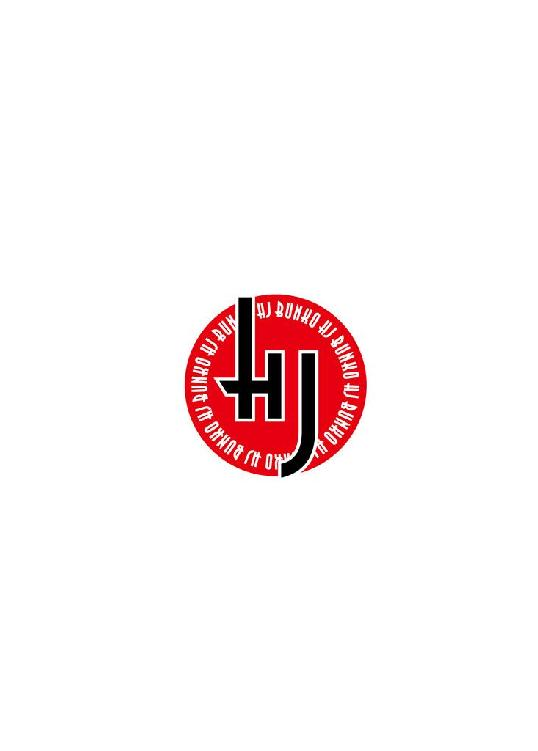
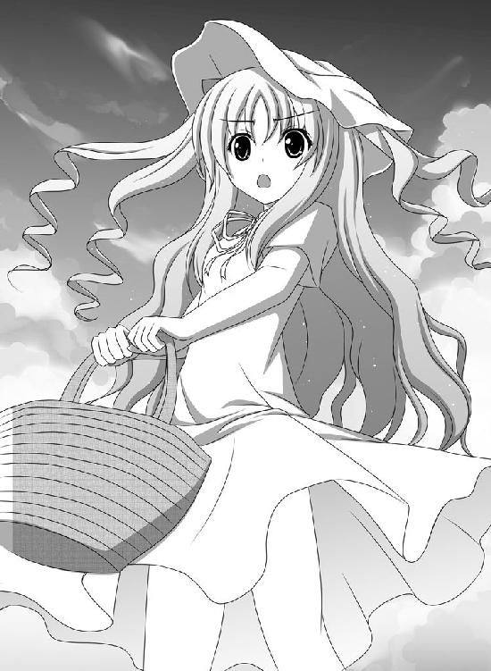

| 魔王学校に俺だけ勇者！？ (ＨＪ文庫) | |
| 夏緑 | |
| (2010) | |

口絵・本文イラスト 朱シオ
一章 勇者に生まれてごめんなさい
俺の朝は戦いだ。比喩なんかじゃない、マジで戦いだ。
今朝もいつもどおり、寮を出てこの麻桜中学の校門をくぐった。前をセーラー服の女子が歩いてるな～とかぼんやり考えてたら、その娘がくるっと振りかえって黄色い声で叫んだ。
「きゃ～んっ、二年の遊佐先輩なのら！ おはようございます、そりゃ」
その娘はいきなり俺に向けてスカートをまくり上げた......っておい！
「こ、こ、こ、こらー！ お嫁入り前の娘さんが何てことしてるんだーっ！」
あわてて目をおおったけど、残像でちょっぴり目の中に焼きついているそれは......小柄で童顔な彼女のイメージとは全然ちがう、鮮やかなグリーンのパンツだ。俺の想像ではグンゼの白パンだとばかり思ってたんだが。しかもクロコダイル調。
「んっふ、先輩ったらマジメなのら～。噂どおり、清く正しい勇者様なんらね～」
ちょっ......なんでこいつ舌なめずりしてんの？
「ってわけで、先輩の経験値いただくのら！ 装甲騎竜艤装下穿！」
ぼわんっ！ グリーンのパンツが一気に膨張して、象よりもでかいグリーンドラゴンになった。ドラゴンが彼女のパンツに擬態してたっぽい。
「ギシャア！」
怪獣映画みたいな鳴き声をあげて、ドラゴンが俺に突進してきた。彼女は、ドラゴンの背に下半身が埋まった状態で乗っかっている。
おいおい、朝からかんべんしてくれよ......と思ってたら、校門の横に立ってた登校指導の体育の先生がどなった。
「こらーそこの女子！ 学校にゲーム機・武器・呪具・毒物・使い魔・携帯電話の持ちこみ、および生徒同士のケンカは禁止だぞ！ ちょっと生活指導室に来い！」
とたんにドラゴンはもとのパンツに戻り、その娘はジャージ姿の体育の先生に耳をつかまれて生活指導室へ引きずって行かれた。
「いたいいたいいたいのら！ 先生ごめんなさーい！」
やれやれ、助かった。胸をなでおろした俺の背後に、黒い影が立った。
「フフッ、まだ四月だからな。校則を把握しきってない一年生がやりがちなミスだ」
そう言うそいつは、学ランのえりにつけてる校章の色が金色だから三年生の男子だ。ちなみに一年は銅色、二年は銀色。そいつはロングコートみたいにズルズル長い改造学ランを着ていて、手には手袋、頭には袋みたいなマスクをかぶっている。
「さて、遊佐ヒロ。ずっと機会をうかがってたけど、やっと二人っきりになれたな♪」
あ、そういえば体育の先生もいなくなっちゃったし、これはやばい......と思った俺の腕をそいつはぐいっとつかみ、袋みたいなマスクを少し持ちあげた。舌なめずりする赤い口に、ぎらりと光ったキバがのぞいてる。吸血鬼だ。
「俺、今の成績と経験値じゃ魔王検定試験やべーって進路指導に言われてよー。俺四月生まれだから、魔王検定試験の十六歳の誕生日まであと一年無くて焦ってんだよな」
魔王という存在は一般人には秘密だけど、ギャングとか武器会社とか裏世界関係の組織のボスや幹部などの要職についてるのは、じつはみんな魔王である。
そしてこの麻桜中学に通う生徒は、全員魔王候補生なのだ......勇者のくせに間違って受験してしまった俺以外は。
「そんじゃ、いっただっきまーす！」
「いただかせるか！」
俺は、近づいてくるそいつの顔を必死に両手で押さえた。
「魔王検定試験がやばいなら、無理にゴリ押しで魔王をめざすことないだろ？ 適正が無いのに無理して魔王になっても、後でしんどいぞ？」
「適正が無いとか、ひとが一番気にしてること言いやがったなテメー！」
おかしい。平和的に説得してるのに、吸血鬼は突然顔を真っ赤にして怒りだした。
「いやいや悪口じゃなくて、客観的に見てだな。高校受験だって、無理して上のレベルの高校にネジ込んだら高校で勉強についていけなくなるだろ？」
俺はいっしょうけんめい吸血鬼を説得した。勇者が経験値を得る条件は、魔王を「消す」こと。それは「殺す」だけでなく、更生させて魔王をやめさせることも「魔王を消す」ことになるわけだ。
「お使いクエストのミニダンジョンのボスていどの実力しか無いのに無理して中ボス検定とかに受かったら、強い勇者が次々やってきて困るじゃないか。いっそ魔王なんかあきらめて更生すればもっと有意義な進路があるだろ、普通高校とか就職とかさ」
この学校に来たとき、俺はもう勇者への道は閉ざされたかな、と一瞬だけ思った。だけど勇者たるもの逆に考えた、これは全校生徒六六六人......俺以外の六六五人を全員更生させるチャンスだと！
そんなに大量の魔王の経験値を集めたら、十六歳の誕生日に受ける勇者検定試験で最高の、伝説の勇者レベルも夢じゃない。これはピンチじゃない、むしろほかの勇者候補生じゃマネができないビッグチャンス！ きっと天は俺に最強勇者の運命を与えてくれたんだ、マンモスラッピー（死語）！
......という信念のもとに、俺は心をこめて説得してるんだが......。吸血鬼のこめかみに血管がプツプツ浮いて、マスクメロンみたいになってきてるのはなぜゆえ？
「というわけで先輩、更生しましょうよ」
「いいや、ブッ殺すね！ これ以上もないほどブッ殺す！」
吸血鬼は完璧にブチ切れて、俺に襲いかかってきた。なんで怒ってるんだ、この人は。とりあえず反撃しないといけないのかなー、厄介だなー......と迷っていたとき。
「そこの雑魚、こなたの前からどくがよい」
鈴を転がすような綺麗な声が響いた。っていうか「こなた」って......江戸時代ぐらいの身分の高い女の人の一人称だよな？ 勇者と魔王の物語だったはずなのに、いきなり時代劇に方針転換したのか？
一瞬俺は大奥みたいな着物を着た日本髪の女の人を想像してしまったんだが、先輩の真後ろにいつのまにか立っていたのは俺と同じクラスの女子だった。
たしか......名前は、竜崎リュウナだ。まだ話したことはないけど、小柄で色白で神秘的な緑の長髪がお嬢様っぽくて、クラスの中でもダントツに可愛い。
二年になってクラスがえがあって、教室ではじめて竜崎を見たとき、こんな綺麗な娘がこの世にいるのかと信じられなかった。光り輝くその美貌と、そんなに美人なのに自信が無さそうな儚い表情がとても魔王には見えなくて、ちょっと気になってた女子だ。
そんな竜崎がいきなり近くに来たもんだから、俺はあたふたしてしまった。でもクラスメイトなんだから、勇者たるもの無視するわけにもいかない。
「おっ......おはよー竜崎！ 宿題やった？」
無難な話題でジャブを打ってみた。無難すぎて白々しかったかな......。
「つーかこのアマ！ 今俺のことザコって言わなかったかっ？」
吸血鬼が竜崎を振りかえってどなった。おとなしい竜崎は、びくんと肩を揺らす。
「こ、こなたにどなるな、怖いではないか。雑魚を雑魚以外にどう呼べば良いのか知らなかったのだ、許せ。稚魚とかプランクトンのほうが良かっただろうか？」
「テメーほんとにそれで謝ってるつもりか！」
吸血鬼は激怒してる。うん、俺も同感。むしろ傷口を広げる一方だと思う。
「で、ではプルテウス幼生とか、ゾエア幼生とか」
「なんで俺がウニの子供やカニの子供のプランクトンだよ！」
「そなた、海の生物に詳しいのだな。ならば、チリメンモンスターではどうだろう」
「だから雑魚関係から離れろっ！ なんで俺が、小学生男子が夏休みの宿題で集めるチリメンジャコの中に混じってる小さいタコやイカなんだよっ！」
えらい説明的なツッコミだなあ。
とりあえず竜崎は本気で謝ってるつもりっぽいから、たぶんかなり天然なんだろう。それにしても、竜崎こそ海の生物に詳しすぎる。苗字が竜崎だし、海竜関係の魔王なのかな......見た目はむしろ乙姫様って感じだけど。
なんて、竜崎の顔を見ながら、俺はそんなのん気なことを考えてた。吸血鬼のほうはもう、怒りのあまり全身がプルプル震えている状態だった。
竜崎は吸血鬼が怒ってるので焦りながら、いっしょうけんめい考えていた。ほっぺたに人差し指を当ててうーんって考えるポーズっていつの時代の少女漫画だよ、っていうかそのベタなポーズのおかげで、そうでなくても美形な竜崎が五割増し可愛く見えてしまう。
「あっ、そうだ！ 吸血鬼は蚊やアブのように血を吸うのだったな、では雑魚のかわりに害虫ではいかがだろうか」
いやいや竜崎、こぶしでポンと手をたたいて「いかにも名案」みたいな顔すんな。雑魚はまだただの悪口のバリエーションのうちですむけど、害虫なんて渾名つけられたら勇者の俺でも心が折れるわ。天然もここまで来たら犯罪だ。
「がっ、害虫だとー！ テメー、人の嫌がることを言わないようにしましょうって小学校のときに習わなかったのか！ いや習わなかったかもな、俺たちは他人の嫌がることをするのが使命の魔王だからな！」
吸血鬼も、本来青白いはずの顔が真っ赤になるほどの勢いで激怒しちゃってる。無理もないが。
「だ、だから怒るなというのだ。こなたは戦闘力とかあんまり無いから、そなたとケンカする気はまるっきり無いのだ」
竜崎はおろおろしている。魔王っていうのはやたらと俺とバトりたがってくる血の気の多い奴ばかりだと思ってたけど、竜崎は本気でケンカを怖がってるみたいだ。なんかやっぱりこいつって、他の魔王と違うんだな......って思った。
「テメー、ケンカする気は無いって、思いっきりケンカ売ってるだろーが！」
「えっ？ こ、こんなにフレンドリーに接しているのに、まだ不満なのか？」
「テメーはアホか！ ふつう害虫呼ばわりされたら怒るだろーが！」
「そ、そんなことはないぞ！ 害虫はむしろマラリアとか媒介するぶん、危険度は吸血鬼より上ではないか。すなわち、誉め言葉ではないか」
おいおい、違う違う！ それってどっからどう聞いても、吸血鬼が害虫以下って言っちゃってますから！
吸血鬼は真っ赤な顔でプルプル震えて、もう爆発三秒前って感じである。竜崎に言わせてたら、状況は悪化しまくるばっかりだ。俺は、あわててフォローした。
「おいおい竜崎、何言ってんだ。害虫が吸血鬼より上だって？ バカだな、吸血鬼はコウモリに変身できるんだぞ、コウモリは蚊を食べるんだぞ？ つまり吸血鬼は害虫より強くて偉いってことだろっ？」
このフォローもかなり微妙ではあったけど、いちおう害虫より偉いという評価に満足したのか、吸血鬼の機嫌がちょっぴり良くなった。
「そ、そのとおりだ、勇者のくせによくわかってるじゃねーか！ よし、今日のところはテメーに免じて許してやるぜ！」
吸血鬼は俺の肩をポンポンと叩いて、去っていった。
吸血鬼の奴、最初は俺を攻撃するつもりだったのに、竜崎が激怒させたおかげで当初の目的をまるっきり忘れてしまったようだ。やれやれ、よくわからないけど......。
「竜崎のおかげで戦わなくてすんだみたいだな」
「そなたのおかげで戦わなくてすんだみたいだな」
うわっ、セリフがかぶった！ 何だか照れくさくなってしまって、俺はあわてた。竜崎も赤くなって、口を押さえている。
「驚いた。他人とセリフがかぶると、妙に恥ずかしいものなのだな」
「う、うん。俺も今、そんなことを考えてた」
やばいなー、なんかドキドキするぞ。っていうか、今の俺のセリフって「俺たち気が合うね」みたいなナンパの常套句に聞こえないか？ いや、そんな気は全然ないんだけど、そう思われてたらどうしようっ......とか、俺は一人でうろたえてしまう。こ、ここはナンパじゃないってとこを強調するために、しれっと他の話題に移らなくては！
「あ、あのさ、っていうか、戦わずにすんだ......って勇者の俺が言うならまだわかるけど。竜崎は魔王なのに、戦うのが嫌なのか？」
「うむ、嫌いだ」
「変わってるなあ。魔王のくせに、平和主義なんだな」
今まで好戦的な魔王（候補生）しか知らなかったから、俺はちょっと癒された。だけど竜崎は急にムッとして、心外そうに俺をにらんだ。
「別にこなたは平和主義ではない。きちんと魔王として、世界征服をめざしている。両親にもそう言われてるし......」
「えっ、世界征服を？ でも、ケンカを避けてたよな？」
「だから、こなたは戦うのが嫌いなのだ。足が遅いから体育が嫌い、みたいなものだ。でも世界征服はめざしたいのだ」
「勇者も魔王も戦って経験値を上げないといけないのに、戦わずに世界征服をめざすってどうやるんだよ？ 全戦不戦勝で甲子園で優勝するぐらい無茶な話だぞ？」
「いや。こなたの四天王・サキが言った、こなたは戦闘力も魔力も絶望的に低いが、顔だけはダントツに可愛いと。だから、それをこなたの最終兵器とするべきだと。そして遊佐ヒロ、噂によるとそなたは両親とも先祖代々のエリート勇者のあいだに生まれた、スーパーサラブレッドだそうだな」
たしかに顔はダントツに可愛いと思う。ただ作りが整ってるっていうんじゃなくて、完璧に整いすぎてオーラが感じられるレベルの美貌だ。透きとおるような白い肌と、涼しい影を落とす長いまつげ、水滴のようにきらきらと輝く瞳。
最終兵器レベルの美形だとは思うけど、実質的に、可愛さを最終兵器にするってどういうことだ？ っていうかさすが魔王だけあって、四天王とかいるんだなあ。
「......と、いうことでだな」
竜崎は大きくて鋭い目で俺を見あげ、ビシッと指さして強く言いはなった。
「突然だが、そなたに世界の半分を与えよう」
ほんとに突然すぎる、まさか勇者を倒す過程を全部すっ飛ばして、最後の城まで勇者に追いつめられた魔王が出す苦肉の策である「世界の半分」をいきなり最初から出してくるなんて予想だにしてなかった。
「あ、いや、いらないから」
「いきなり否定かっ？」
「ここで『はい』って答えたら、世界が闇に包まれるのはお約束だから。こういうときに勇者たるものどう答えるべきか、小学生のとき勇者進学塾でさんざんやったし」
「そう、か......」
竜崎は低い声でつぶやくと、いきなりセーラー服の襟を両手でつかんでバッと横に開いた。襟の胸あてをとめてるスナップがプチプチッと音を立てて外れて、白いレースのブラがブラが！
「つまり......ヒロ的には、世界の半分よりもこなたのほうが良い、と言うのだな？」
そんなこと言ってない、俺的にはそんなことぜんぜん言ってませんですよー！
そうか、これが可愛さを武器にするって意味か？ けど、これは世界の半分よりももっと、もらったら後がやばそうな気がする。
竜崎は大胆な行動に出てるわりに恥ずかしいのか、ためらいがちに目を潤ませてほおを赤らめ、小鳥のように震えてる。
「な、ならば......世界の半分のかわりにこなたを与えようぞ......っ！」
ぎゅうっ、と竜崎が俺にしがみついてきた。竜崎のミルクプリンのように白くてぷるぷるした胸が、俺の体にむぎゅぎゅっと押し当てられる。
柔らかいっ、女子の胸ってこんなにふにゃふにゃ柔らかいのかっ？ 耳たぶよりももっと柔らかくて冷たくてでも弾力があって何だかっ、いや勇者のくせに女子の胸に劣情を抱いてちゃいけないぞ俺！
俺は竜崎の肩をつかんで引きはなすと、きっぱり言い切った。
「いらないって言ってるだろ！ 世界の半分もきみも、どっちもお断りしますから！」
「え......っ？」
竜崎の動きが止まってしまった。おとなしいとはいえ魔王の端くれなんだから、てっきり「お断りしますとか図に乗ってんじゃねーぞカス！ ぶっちゃけ最初ッから眼中ねーんだよタコ！」あたり言われるかと思ってたので、俺もびっくりしてしまった。
まさか竜崎......ショック受けた？ 俺そんなにキツいこと言った？
「お......お断り？ そ、そか......こなたには魅力が無い、のか......はは」
竜崎は、セーラー服の襟もとのスナップをプチプチと留めて胸をしまいはじめた。でも指がブルブル震えていて、なかなかうまくスナップが合わない。っていうか、なんか正義の勇者の俺のほうが悪者みたいになってないか？
「あ、い、いや！ 竜崎に魅力が無いとかそういう問題じゃなくって、勇者たるものそういう誘いは断るのがお約束だろっ？」
なんで脂汗いっぱいかきながら言い訳してるんだ、俺。でも、竜崎の泣きそうな表情は変わらない。
「四天王のサキは......据え膳食わぬは男の恥というのがお約束だと言っておったのだが......結局、やはりこなたに魅力が無いからなのか......」
竜崎はふるふる震えて落ちこんでいる。頼む、魔王なんだから「こなたの申し出を断るとは愚か者め、永遠の地獄に落ちよ！」みたいな邪悪な捨てゼリフを吐いてくれよ。なんでそんな悲しそうな涙目でじっと俺を見上げるんだ、胸が痛いじゃないか。
「りゅ......竜崎っ......！」
名前を呼んでみても、その次どう言えばいいのかわからない。竜崎は俺に背中を向けて、逃げるように駆けていった。
何これ、何この罪悪感？ 俺は勇者として正しい選択肢を選んだはずなのに、世界は闇に包まれてないけども、俺の目の前がなんかすごい真っ暗なんですけど？
「選択肢......難しすぎだろ」
なんか、ものすごく気が重い。俺は重い足をずるずる引きずって教室へ行った。
教室に入った俺は、もっと落ちこんだ。竜崎がいなかったからだ。
（やばいなー......そんなに傷つけちゃったのか？）
もしかして俺、相手が魔王だと思って必要以上にキツく言っちゃったんだろうか。
「遅かったな遊佐、朝読の時間が終わっちまうじゃねーか！」
ぼんやりしていた俺の目の前に、びゅんっ、と白刃がひらめいた。
「うおっ、危ない！」
ぼんやりしてた俺の目が、一気に覚めた。机の上に立てひざをついて俺の顔に長ドスを突きつけながら座ってる女子は、織田志信。モデルみたいに背が高くてプロポーションも良くて、ちょっと冷たい系だけどかなりの美人だ。
ロングストレートの黒髪はセーラー服が似合いそうなのに、着てるのは男子の制服の学ラン......っていうか、それを改造した特攻服。ダボダボズボンの上はサラシだけで、豊満な胸をきつく締めつけている。胸が潰れないのか心配になるぐらいだ。
特攻服の背中には「天下布武」の文字と、五弁の花をあしらった織田木瓜と呼ばれる家紋が金糸銀糸で派手やかに刺繍されている。
「織田、学校に長ドス持ってくるの校則で禁止されてるだろ」
「いいんだよ。アタイは第六天魔王、ドグサレの不良なんだから校則違反上等ってやつさ」
「そういえば、没収しようとした生活指導の先生をその長ドスで斬りつけてから、注意されなくなったっけな。......でも、こっそり内申点は下げられてると思うぞ」
「そのぶんを、ヒロの経験値で埋めりゃいいだろ？ ヒロは勇者デビュー前でもいちおうエリート勇者の血筋の勇者なんだから、どんなに内申点を下げられよーがザクザクおつりがくるはずさ」
「目の前で長ドスをチラチラさせるのやめてくれるか？ なんか先端恐怖症になりそうなんだけど」
「それと、これは長ドスじゃなくて長谷部国重な」
「長の字は合ってるじゃないか。話は変わりますが、机の上の『赤毛のアン』って織田が朝読で読んでる本？」
「アタイが何を読もうが遊佐には関係ねーだろ！ 朝読の時間がまだ五分残ってるから、アタイとバトりな！」
織田はいきなり机を蹴って飛びあがると、長ドスを振りかぶって俺を狙ってきた。ふつう女子って朝は低血圧だしぃ～とか言ってるのに、毎朝こいつはムダに元気だ。
「バカ、教室で暴れるな！ まわりに迷惑だろ！」
「覚悟しなッ、今日こそ経験値をいただくよォォ～ッ！」
俺は、織田の太刀筋をぎりぎりのところでかわした。織田信長の子孫だか名刀・長谷部国重だか知らないけど、剣術のほうはまるっきりそのへんのスケバンのケンカ殺法なんですけど？
ド派手にド空振った織田の長ドスは、たいてい毎朝誰かの机やロッカーをまっぷたつにするんだけど、織田が怖くてクラスの誰も文句を言わない。
それをいいことに、織田は毎朝この調子で俺にバトルを仕掛けてくる。そのたびに俺は、やっぱ見かけは女の子でも、こいつって魔王なんだよなー、と思っていた。
でも今日の俺は、ふっとさっきの竜崎のことを思いだして、魔王だけど......でもこいつも女の子なんだよなー、と思ってしまった。
「殺ったッ！ 遊佐っ、死にくされー！」
織田が俺を床の上に押し倒して、仰向けになった俺の上にのしかかりながら長ドスを首に当ててきた。
俺の胸に織田の胸が当たってる。サラシできつく巻いていてもなおボリュームを押さえきれない豊満な胸は、くっきりと深い谷間を作っている。っていうか仰向けになった俺の上に織田が乗ってるから、俺の腰の上に織田がまたがる形になっている。
今まで織田のことはしょせん魔王だと思ってたのに、女の子だって意識してしまうと何だか、何なんだこのむずがゆさは......？
「ちょっ......な、何赤くなってんだよ遊佐！」
織田があわてて身を起こした。ちょっバカ、俺にまたがったまま上半身を起こしたら、おまえの全体重が俺の腰にかかるだろーが！
「いつもみたいに抵抗しろって！ 剣の呪言唱えろよっ！」
いやだってちょっと......ち、力が入らないんですよ、いろいろと。とりあえず、俺にまたがったまま体をゆするなバカ！
ちなみに剣の呪言っていうのは、俺がこの麻桜中学で自分の身を守るために苦肉の策で編みだした技だ。校則で武器は持ってこられないけど、勇者たるもの織田みたいに校則違反もできない。だけど魔王候補生たちはそんなことおかまいなしに次々攻撃してくるから、自分の身は守らなくちゃならない......。
そこで俺は必死こいて、武器をイメージしてその名をとなえるだけでその武器を具現化するという魔法を開発した。まだ開発したばっかりだから、精神を集中してはっきりイメージしないと不良品の武器や全然違うものが出てくる、って不具合はあるけれど。
ちなみに練習してるうちに剣以外の武器もいろいろ出せるようになったけど、語呂がいいから最初に名づけた剣の呪言って名前で呼んでる。うっかり「ワールド」って言いそうになったそこのきみ、さてはＲＰＧ上級者だな。
「無抵抗の勇者殺って経験値かせいでも剣は上達しないんだよッ！ ヒロは小学校のころ、勇者塾の剣術の実技で首席取ってたんだろ？ 家にはなんとかって伝説の剣が伝わってるぐらい、代々剣術がすごい家系だったんだろ？」
「天蛇斬のことか？ なんで俺の家のことよく知ってんだよ、スパイでも使ってんのか？」
「んなことどーでもいいだろっ、とにかくテメーとは実力でやりあって勝たないと剣の腕は上がらねーんだよ！ だから抵抗しろ抵抗！ それとも何か、アタイなんかとはバトる価値ねーとでもっ？」
織田はマウントポジションのまま俺の胸ぐらをつかんで、激しくゆさぶった。ゆするなーっ、こすれるーっ！ 何と何とが、とは清く正しい勇者という立場上明言できないけど、仮にも俺は勇者なのに魔王相手にこすれるなんてらめぇぇぇーっ！
「もーイラついたっ！ 何とか言えよコラァ！」
「だ、だって......」
俺はゆさぶられながら、虫の息で必死に声をしぼりだした。
「だって何だよッ！」
「剣の呪言唱えたらケガするじゃないか、女の子なのに」
ぼむん！
織田の顔が一瞬にして、熟れたてリンゴみたいに真っ赤になった。俺の上にまたがったまま、ダラダラ汗を流してあうあう言いながら、ものすごくうろたえている。
「なっなななな......何いきなりヨタったこと言ってやがる、女の子じゃなくてアタイは第六天魔王だしっ！ ご先祖の魔王信長は、極悪非道の大魔王だしっ......！」
織田は必死に俺の首を長ドスでかっ斬ろうとしてるけど、手が震えて動かないっぽい。今、俺の体に力が入ってないのと症状が似てるかもしれない。
いや、なんかすごい顔が赤くなって汗がダラダラ流れてるぶん、俺より重症かも。クール美女の織田がこんなにうろたえてる顔、はじめて見た気がする。
「わっ......わかった、さてはこれは新しい剣の呪言だな！ いつもの攻撃呪文じゃなく、相手の攻撃を封じる系の補助系呪文か！ だがこれぐらいで戦闘不能に陥るアタイじゃないっ、出でよ茶坊主！」
苦しまぎれに織田が、長ドスをまるで魔法少女のタクトのようにくるくると振った。すると、きらきらした緑の光があたりに降りそそいだ。
光は集まって、緑色の着物を着た市松人形みたいなやつがポコリンと現れた。芥子坊主頭って言うのか大五郎カットっていうのか、髪の毛をちょっと残して丸刈りにした頭で、両手を前に出して湯のみ茶碗を載せたお盆を手に持っている......前にテレビで見たことがある、江戸時代のカラクリ茶運び人形にそっくりだ。
それが俺の頭の上のほうにふわふわ飛んできたかと思うと、いきなり、
『柄杓乱舞！』
そのカラクリ人形......茶坊主が、手に柄杓を持って俺をポカポカ殴りはじめた。こいつは無感情で、攻撃にもまったく迷いがない。柄杓は人形サイズでダメージはそれほどでもないけど、それでも痛い。織田に乗っかられ茶坊主にポカポカ殴られながら、このままヒットポイントを一ずつ削られて十時間ぐらいかけてじわじわ殺されるとか嫌すぎるー！
「あっ、あの......！ 織田さん、朝読の時間終わったよっ？」
誰もが恐れて口出しできない織田に、誰かが意見した。澄んだアルトの声......魔王ばかりのこの学校でいったい誰が勇気を出して勇者の俺を助けてくれたんだろう？
顔を見ようとして、俺は思いっきり首を回してみた。うちの学校には珍しく、学ランのボタンをきちんと全部とめてる男子、黄泉原冥土だ。というか、むしろ男子自体がどういうわけか、一年生全体に少ない。うちのクラスだと、俺と黄泉原しか男子がいない。
黄泉原はきゃしゃで色白で、顔も女の子みたいだし金髪おかっぱの王子様ヘアで、見た目も性格もぜんぜん魔王っぽくない。いつも白い手袋をしているから、よけいに王子様っぽい。黄泉原はいつもおとなしいので、話す機会も無かったけど、そういえばこいつには経験値目当てに襲われたこともなかった。
（もしかして、魔王とはいえ数少ない男子どうしだから助けにきてくれたのかっ？ あるある、改心した魔王と勇者の友情とか、じゅうぶんある展開だよな！ 熱いぜ！）
と、俺は思わず心をはずませた。
「黄泉原！ 助けにきてくれたんだな、ありがとう！」
「べ、別に......遊佐くんのためじゃないし......」
と、黄泉原はモゴモゴ言いながら視線をそらした。あれっ、もしかしてツンデレ？
「いつもゴチャゴチャうるせーんだよ黄泉原はよー！ アタイの獲物に横からちょっかいかけるんじゃねー！」
「きゃあ！」
黄泉原は、織田のラリアットであっさり吹っ飛ばされてしまった。うわあああ、黄泉原の綺麗な顔から鼻血が！ っていうか、勇者のピンチにかっこよく助けに入ったくせに全然戦闘力が無いなんて期待はずれだよ黄泉原！
壁にぶつかって崩れた黄泉原を、すぐに何人かの女子が駆け寄って助け起こした。あの顔だから黄泉原はよくモテる。命を狙われるばかりの俺とは大違いだ。あれっ、おかしいな。目から変な水が......。
「気を取り直して行くよッ、茶坊主！」
『茶返し！』
気を取り直さないでくれ織田！ そして茶坊主、お盆に載せた鉄の茶碗を俺の頭の上でひっくり返すなー！
小さいとはいえ、これは顔面火傷と鉄の茶碗による頭蓋骨粉砕を狙ったコンボ技。しかも俺の上には織田が乗ってるから逃げようがない。マジで死ぬレベル、本気でやばい！ やっぱ反撃しなくちゃいけないのか、と思った瞬間、
「マジック・キングス・ザ・ギャザリング！」
クラスの最前列に座っていた委員長が呪文を唱えた。その瞬間、俺は織田の体の下から消えて、委員長の前に浮かんだ魔方陣の中央にテレポートしていた。
一瞬トレカゲームの名前かと思ったけど、よく聞くとなんか違う。トレカゲームは「魔法集合体」みたいな意味だけど、なんか変な単語が一個入ってる。「魔王を集める」......って？
「きゃあ！」
俺が急に消えたもんだから、織田のお尻が勢いよくストンと床に落ちて、その勢いでコロンと後ろにひっくり返ってしまった。いつもクールな織田のコミカルなずっこけぶりに、まわりにいた女子たちがたまらず「ぷっ」と吹きだした。
「うるせーてめーら！ 笑うな殺すぞ！」
織田は真っ赤になってどなった。いくら恥ずかしかったからって殺すのはやりすぎ。まわりの女子たちは、びびって黙りこんでしまった。
俺の前には、机に座って朝読に『ソロモンの指環』とかいう本を開いている、長い三つ編み、ふちの赤いメガネ、地味でおとなしそうな顔立ちの委員長・黒姫リリ子がいた。魔方陣は、床にひざをついて座っている俺のまわりをぐるぐると光りながら回転している。
「も、もしかしてテレポートさせてくれたの委員長？ だったらありがと」
「テレポートではありません。これは『召喚』です」
委員長は虫けらでも見るような酷薄な目で俺を見下ろした。今こいつ、もしかして召喚って言った？
「召喚って何だよ」
「ご存じありませんか。主人が召喚呪文によって契約関係にある使い魔を召喚するという」
「言葉の意味じゃなくて使用法を聞いてるんだ。なんで俺が、委員長に召喚されるんだよ」
「わたしはザコモンスターなんかじゃなく、魔王どもを使い魔として召喚するラスボス、ご先祖様の魔女王リリスのような魔王の中の魔王をめざしているんです。そのために魔王を召喚する方法を、この『ソロモンの指環』という本で勉強しましたから」
「魔王を召喚する本は『ソロモンの鎖骨』じゃなかったっけ」
「え」
委員長が目をぱちくりんとした。やばいこいつ、本気で間違えてたのか？
「『ソロモンの指環』は卵からかえったばかりのアヒルのひなが、はじめて見たものを親だと思うとかそういう動物行動学の本だぞ？」
委員長は唇に人差し指を当てて、横っちょを見ながらうーんと考えていたが、何かを納得したようすでポンッと手を打った。
「んー......まあ、魔王がはじめて契約したものをご主人様だと思う的な意味で、同じような内容でしょう！ うん！」
「ざっくりしてるなー。そこ納得しちゃっていいのか？」
「だって、現にこうしてきちんと遊佐さんを召喚できてますし」
「っていうか俺、魔王じゃないけど」
「ほんとの悪逆非道冷酷無慈悲なラスボスって、勇者の使い魔もひとりふたり持っておくのがたしなみだと思うんですよ。ホラなんか、勇者の親友とか親兄弟が暗黒面に堕ちて魔王の部下にされてて、悲劇的な運命のバトルがーみたいな」
やべー委員長、なんかほっぺたを赤く染めて目をキラキラさせながら全身をゾクゾク震わせてる。
「で、家族や親友をわが手で倒してしまった勇者が涙目でブチギレながらわたしを指さして、『極悪非情な真の邪悪な魔王、おまえだけは許さないっ！』とか口汚く罵倒するんですよ。うーん、死にゆく虫ケラどもの絶望の叫びというものはなんと耳に心地よいのでしょう、ぞくぞくっ♪」
大変だっ、こいつ変態だー！ 委員長はうちのクラスでは外見的には一番マトモだったし、けっこうまじめでいい人だったから、今までこんなドＳの変態さんだったなんて気づかなかった。
「っていうか......そういう妄想以前に、俺べつに委員長の使い魔じゃないじゃん」
「桃太郎ときびだんごの話をご存じ？ 主従の契約をかわせば使い魔なんですよ」
「俺、きびだんごもらってないし」
「先週遊佐さんが消しゴムをお忘れになったとき、わたしの消しゴムを半分切ってさしあげたでしょう？」
「あーあの日は小テスト多かったから助かった、ありがと。魔王ばっかりのこの学校にもいい人がいるんだなー、と思って感動したんだ、俺」
「あれ契約ですから☆」
しれっと委員長が言った。......えっ、契約？ 俺、消しゴム半分で使い魔にされちゃってたの？
「ありえねー！ 今の最低賃金って、時給七九一円だぞっ？」
「お気になさらず。うちの父の会社は研修扱い労働や休日出勤やサービス残業やなんかで、実質時給二〇〇円切ってますから。ニコッ★」
ニコッ★じゃない。っていうか星が黒いぞ。
「そりゃまたとんだブラック企業だな！」
それにしても、勇者なのに魔王の使い魔にされてるなんて、勇者検定試験で思いっきり評価を下げられるじゃないかー！ 俺は焦って、委員長に哀願した。
「やめて委員長！ 消しゴム返すから使い魔契約、解除して！」
「頼むから俺を解放してくれ、と魔王に操られながら哀願する勇者ですか......うっふふふ、気持ちいいですねぇ～」
またゾクゾクしてるよ、この人は。これはとても話が通じそうにない。
「委員長、話終わった？」
委員長の机の横に織田が立って、おずおずと口をはさんできた。そういえば、なんかさっきからちょっと遠くから少しずつ少しずつ、ゆっくりこっちに近づいてきてたような気がしたけど、委員長に用があったのか。けっこう遠慮がちなとこあるんだな。
「ええ、終わりましたが何か？」
「そっか、終わったんだ」
織田はホッとして、次の瞬間いきなり委員長の胸ぐらをつかみ上げた。
「てンめェエエエエ！ よくもアタイに恥かかせやがってーっ！」
えぇえぇえぇえぇえーっ！ 織田って、さっき尻餅ついたブチギレモードのまま、俺たちの会話が終わるのをじーっと待ってたのかっ？ いつも瞬間湯沸かし器状態でドッカンドッカン怒り狂ってる暴れん坊さんの織田が何も文句を言わないなんて珍しいって思ってたけど、まさか今のけっこう長い会話がとぎれるのを待ってたとか！
「織田......おまえひょっとして、長なわとびで『郵便屋さんお入んなさい』やるとき、タイミングつかめなくて入っていけない子だっただろ？」
聞いてみると、織田の顔がぼむんっと赤くなった。
「うっ......うるせー！ テメーどこで見てたっ、このストーカー野郎！」
あっ、図星だったんだ。何もそんな顔中から脂汗かかなくっても......。
「恥かかせとンのはどっちじゃ、ワレェ」
んっ？
今ドスの利いた声でヤクザ語をお話しになったのは、もしかしてそこで胸ぐらをつかみあげられてる委員長？ あれっ、なんか目がすわっちゃってますよ？
「たかだか戦国時代に何万人か虐殺したていどのザコ魔王の末裔のぶんざいで、わたしの使い魔にチョッカイかけたうえに、人前でこのわたしの胸ぐらをつかむ......とは、命が惜しくない宣言だととらえてよろしいですね？」
「わたしの使い魔、ってその所有格は何だい！ 遊佐はアタイのもんだよ、メガネブスは引っこんでな！」
メガネブス、の一言で委員長のおでこに血管が浮いた。やばい、なんか委員長の目つきとオーラがかなりやばいレベルに達してる。勇者といえども、女子のケンカに巻きこまれて無事でいられる自信は無い。いや、武力衝突のとばっちりが怖いという意味じゃない。たしかにこいつらの戦闘力は尋常じゃないが、しょせんは魔王デビュー前の魔王候補生だ。俺も勇者候補生の端くれである以上、少々のとばっちりぐらい防げないわけじゃない。
じゃあ俺が何を恐れてるのかというと、要するに女子どうしの争いってのは男子には信じられないぐらいギスギスしてるからだ。「あんたはどっち？ どっちの味方っ？」と聞かれたら最後、そのドロドロに確実に巻きこまれて、こっちまで精神がズタボロにされてしまう。
そういうわけで、俺はこそこそと二人から離れた。
「はい死んだ、織田さんあなた今死にましたよ」
織田に胸ぐらをつかまれたまま、委員長が織田を指さした。口調は冷静っぽかったけど、その直後に目をギラギラとやばいぐらい血走らせて、
「つーかギッタンギッタンにブッ殺したるッ、このクソアマがーッ！」
火を吐きそうな勢いで激怒、委員長怖い。絶対こいつ、織田より怖い。
「マジック・キングス・ザ・ギャザリング！」
委員長の呪文。ぼわっ、と巨大な魔方陣が浮かんで周囲に衝撃波が吹き荒れた。
「わぶっ！」
織田は衝撃波にあおられて顔をかばい、委員長を放してしまう。
教壇のあたりに渦巻く魔方陣の中に現れたのは、三年生の岩見重太郎先輩......うちの学校の番長だ。身長は二メートルを軽く超え、長いざんばら髪は真っ白で、岩肌のようなゴツゴツした顔は天狗みたいに赤い。全身も白い体毛に覆われている。っていうかこの人、人間じゃなくて雪男とか狒々とかビッグフットとか、そのへんのＵＭＡ系じゃないの？
「うっ......ば、番長......ッ」
織田が「ずざざっっ！」と、二メートルほど退いた。誰にでも噛みつく狂犬みたいな織田ですら、さすがに岩見先輩にはびびってるみたいだ。
「先生すまんのう、宿題忘れたんじゃけどー」
岩見先輩がのっそりと手を上げて言った。委員長は腕組みをして、岩見先輩の前に立つ。
「寝言は永眠してから言ってください、岩見先輩。先輩はわたしに召喚されたんですよ」
「むぅ、黒姫？ ワシは自分の教室におったはずじゃが......つーか、なんでワシが貴様に召喚されるんじゃ？」
「きのう購買の焼きそばパンのラス一をゆずってさしあげたでしょう？ あれが主従契約になっていたんですよ」
えーっ！ そんなんで、聖レジェンド中学の勇者と果し合いして一人で十人ボコったほどの岩見先輩を使い魔にできるのか？ 委員長、ひょっとして最強なんじゃ？
「ワシは島の見回りで、宿題やっとるヒマも無いぐらい忙しいんじゃ。最近学校のまわりを不審者がウロウロしとるのを、舎弟どもが目撃しとるんでのう」
「不審者？ 野良モンスターか何かですか？」
「そんな雰囲気でもなさそうじゃから、見回りをしてこの目で確認したいんじゃ。舎弟の話によれば、夜でも月のように輝く銀の鎧に銀の髪、銀の翼が生えてたとかなんとか......そんな王子様みたいな野良モンスター、おるわけなかろ？」
「何ですか、それ。まるで天使みたいじゃないですか。そんな最大級の不審者がウロウロしてるなんて、わたしは何も報告を受けてませんよ？」
委員長がメガネの位置を指先でそっと直した。岩見先輩は面倒くさそうに委員長に言った。
「なんでおまえに報告せなならんのじゃ？」
「使い魔がご主人様に報告するのは当然でしょう？」
「アホ、小娘の遊びにつきあっとれるか。ああ忙しい忙しい」
のそのそと岩見先輩が体をゆすりながら、教室から出ようとした。あっ、そうだよな、一方的に主従関係を結ばれても無視すればいいんじゃん。
とか思ってたら、委員長が岩見先輩の腰をツンツンと人差し指でつついた。
「何じゃ、まだ何か用なん......」
振りかえった岩見先輩が見たものは、委員長の突き刺すような目だった。闇を秘めた邪眼を前にして、岩見先輩の真っ赤な顔が一瞬にして真っ青になった。アンモニア水に入れたリトマス試験紙もびっくりの鮮やかな変色っぷりだ。
「わたしは主人。先輩は使い魔。この立場の違い、おわかりですね？」
「えっ......いやだって、ワシはこれから授業がっ......」
びびってる、岩見先輩がびびってる。委員長の三つ編みが蛇のように鎌首をもたげ、どす黒いオーラがまがまがしく揺らめくと、岩見先輩が「ひぃ！」と情けない声を上げた。委員長は、こっちはこっちで岩見先輩にびびっている織田をビシィッと指さすと、鋭い声でどなった。
「しのごの言っとらんでとっととそのメス豚を殺ったらんかいオラァ！」
「はっ......はいっ、わかりましたぁぁーっ！ ウラアアアアーッ！」
うん、委員長の実家ってほんとブラック企業なんだろうなー。「虫ケラ以下の経済弱者に情けは無用じゃクソボケがァーッ！」とか恫喝してるんだろうなー。まさに日本経済の闇に巣くう魔王ってやつだ、怖い怖い。
とかのん気に見物してる場合じゃないっ、せまりくる巨大な岩見先輩の姿にびびった織田は完全に固まってしまっている。一時間目の先生がもう教室の入り口に来てるのに岩見先輩にびびって入ってこないし、麻桜中学最強の番長には誰も刃向かえない。岩見先輩の巨大なこぶしが、織田の顔面にせまった。
「きゃ......っ！」
織田は、短い悲鳴を上げて弱々しく顔をかばうことしかできなかった。おいおい、岩見先輩って本気で織田を殴る気なのか？ 女の子に平気で手を上げるとか、やっぱ魔王だな。この状況って、俺しか織田を助けられないんじゃないか？
周囲が全員魔王で俺を狙ってる中、あんまり実力を見せるのは手の内を読まれてしまうから嫌だったけど......いくら魔王でも女の子が殴られかけてるのに自分を守ってるようじゃ勇者失格だ。ここは剣の呪言の出番......だが、何の武器にする？ いくら魔王候補生でも人を殺すなんて良くない、俺が仇討ちされるっていう心配よりも勇者としてそれはやりすぎだと思う。
ということで殺さないていどにあまり強くない武器、でもあの巨大な岩見先輩を止められる武器、いったい何を出せば......ああっだめだ、織田が危ないっ、のんびり考えてるひまなんか無い！
「鎌！」
無理矢理俺はひり出した。鎌で岩見先輩の足でも傷つければ動きを止められるはず......と思ったんだが、あわてすぎてて精神が集中できてなかったらしい。空中に吐きだされた俺の言葉は、鎌......じゃなくて、釜に姿を変えた。
（はぁっ？ 釜っ？ 武器じゃねーじゃんそれ！）
思わず自分にツッコミを入れてしまったが、次の瞬間、
ごいーんっ！
釜は岩見先輩の顔面にぶち当たった。釜っていっても電気炊飯器じゃなくて、昔のかまどに置いてあるようなでっかい鉄釜だ。岩見先輩は鼻血を吹きあげながら、教室の外まで吹っ飛ばされた。
「えっ？」
俺は目をこする。鉄釜の破壊力、意外にも高かったみたいだ。
......にしても、剣の呪言で出るのは剣にかぎらないとはいえ、いちおう出てくるのは武器のはずなのに。まあ、昔話の『さるかに合戦』では石臼が最終兵器だったから、そのお仲間の釜も武器のうちって認識でいいのか？ とりあえず岩見先輩には、鎌以上のダメージを与えたっぽいし。
「......ちょっと、遊佐くん......」
委員長が、信じられないような顔で俺を見た。
「今の......いつもの剣の呪言ですか......？ じつは、そんなに攻撃力高かったんですか......っ？」
やばいっ、委員長に興味持たれた。根掘り葉掘り聞かれたら、手の内を読まれて攻略対策を立てられてしまう！ 俺はあわてて首を横に振った。
「あっ、違う違う違う！ クリティカルヒットってやつ、たまたま大当たりしただけ！」
謙遜じゃない、だってほんとは鎌を出すはずだったのが暴発しただけだし。
「そっ......そうだよね。いつもアタイとバトってるとき、そんなたいした攻撃力じゃないし。まぐれ当たりってあるよね、うん」
織田が自分を納得させようとして、何度も何度もうなずいていた。そうそう、頼むから俺に注目しないでくれ。
このままそーっと自分の席にフェードアウト......と、そろそろカニ歩きでその場を離れようとしたんだが、廊下のほうから「ドドドドド！」と地面を揺るがす音が近づいてきた。
「うぉのれぇぇぇーッ！ よくもワシのハンサムフェイスを傷つけおって、その罪万死に値するゥゥゥーッ！」
岩見先輩だ。鉄釜でぶん殴ってもあっという間に復活してくるとか、さすがにじょうぶだな。だけどこれ以上攻撃したら俺の実力がバレてしまう、どうしよう。委員長が、なんかワクワクと「お手並み拝見」みたいな顔でこっち見てるのも怖いし。俺がためらっていると、
「何ボーッとしてんだい遊佐っ、危ないっ！」
織田が必死の声で叫んだ。あれっ、俺を心配してくれてる？
「テメーを倒して経験値をいただくのは、このアタイなんだからねっ！」
ああ、第六天魔王に期待するだけムダだったか。
「待てーい！ ワシのイケメンフェイスを傷つけたおしおきをするのが先じゃっ、そのついでに慰謝料がわりに経験値をもらってやろう！」
岩見先輩の全身の筋肉が張りつめて、上着がビリビリと破れる。ズボン一丁になったその上半身は、ゴリラのように分厚い猩々色の胸板と全身を覆う純白の毛、やっぱりこの人って人間ばなれしてる気がする。後姿は巨大なケサランパサランみたいでちょっと可愛いかもしれないけど、うなりを上げる巨大なこぶしが当たったら頭蓋骨はたぶん粉々になる。
どうやら反撃するしかなさそうだ......仕方なく俺はもう一度、剣の呪言を唱えようとした。
けれどそのとき、
「ぬおおおっ？」
俺をぶん殴ろうとしていた岩見先輩が、思いっきりすっ転んだ。パンチが俺の頭上をスカッとかすめ、岩見先輩は顔をもろに床にぶっつけた。「びたーん！」と、ものっすごい音を立てて顔面を強打し、泡を吹いて気絶してしまった。
武勇伝に事欠かない岩見先輩が、何も無いところですっ転ぶようなドジっ子属性であるわけがない。床を見ると、岩見先輩の足に水銀のような液体金属がまとわりついていた。
「......もしかして......ペルチェが助けてくれたのか？」
声をかけると、液体金属はするすると岩見先輩の足から離れた。
「べつに......あなたを助けたわけではありません、少年よ......」
床に銀色の水たまりができて、そこから人間の頭がゆっくりと、プールから出てくるかのようにせり上がってきた。銀糸のようにメタリックに輝く髪、銀色の瞳、凍りついたような無表情、やがて細身でやや長身の女の子の全身があらわれた。
全身はいいけど......全裸ってちょっと！
「わたしの名はペルチェ......この少年はわたしの経験値としてわたしの部品となるべき存在、わたしに無断で破壊することは許しません。わたしの名はペルチェ......」
あまりにも完璧すぎるプロポーションは人工的に見えるけど、そういえばじっさい人造物だった。始業式の日のクラスの自己紹介で、まあどいつも魔王だから自己紹介の内容はぶっ飛んでたんだけど、この芽樽ペルチェのぶっ飛び度は別ベクトルだったからよく覚えてる。ほかの魔王が、ファンタジーや歴史や古代史の香りをまとっているのに対して、ペルチェはいきなり「機械が支配する未来世界のために、人類を滅ぼす使命を帯びた液体金属製機械化魔少女」って自己紹介したんだった。
「っていうかペルチェ！ はだかはだか！」
俺は両目をふさいで叫んだ。ペルチェは、きょとんとした表情で自分の体に視線を落とした。細い腰、細い筋肉が引きしまった太もも、長い脚、きゅっと細い足首、柔らかそうなのに一部ツンとした胸......っていうかペルチェは機械の体なのに、どうしてあんなに胸がプニプニしてるのか？ それが液体金属の底力なのか？
「ああ、気にしなくてけっこうです......。液体化したので、服の中から中身がこぼれてしまっただけですから......」
「気になるって！ 液体になったあとは、ちゃんと制服の中に戻ってから人間の姿に戻ったらっ？」
「見られたって、どうせほとんど女子ばかりじゃありませんか......」
「二人いるから！ 二人ぼっちだけど、ちゃんと男子がいるから無視すんな！」
「というか芽樽さん、わたしの使い魔どうしが仲良くバトルをしていますのに邪魔しないでくださいませんか？ せっかく、遊佐さんのほんとうの実力を見極めようと思ってましたのに！」
委員長がペルチェの前に出て、ケンのある口調で言った。っていうか、サラッと俺と岩見先輩のことを「わたしの使い魔どうし」とか言ってんじゃねーぞコラ。
岩見先輩ですらびびる委員長の眼力だけど、ペルチェは涼しい顔をしている。機械には感情が無いから、恐怖とかも感じないのかもしれない。
そんな二人のあいだに、織田が勢いよく割って入った。
「っていうか二人とも『わたしの』ネジだとか使い魔だとか、とにかくその所有格は訂正しな！ 遊佐は......じゃない、遊佐の経験値はアタイのもんなんだからねっ！ 邪魔するやつは第六天魔王の名にかけて虐殺してやんよ！」
岩見先輩が倒れて女子だけになったところで織田が元気が出てきたのか、それとも......俺の妄想でなければ女子相手だからヤキモチを焼いたのか......とにかく織田は威勢良く長ドスを引き抜くと、いきなりペルチェに斬りつけた。
長ドスの切れ味は鋭く、「ドピュピュッ！」という時代劇でよく聞く例の効果音とともに、ペルチェは左肩から右わき腹にかけてバッサリと袈裟斬りにされた。うわああああっ、教室で何ちゅーことをー！
ところが、袈裟斬りにされたペルチェは銀色の切り口をあらわにしながら、不思議そうな顔でまばたきしている。そして織田は、何か想定の範囲内みたいな苦い顔をして「チッ」と舌打ちしていた。
「あら......切れ味が鋭すぎて、一瞬斬られた自覚がありませんでした。わたし、斬られていたのですね......」
「なっ何をのん気なこと言ってるんだよ！ 機械だって、斬られたら壊れるだろっ？」
斬られたペルチェの上半身が今にも下半身からもげて取れそうで、俺は完全にあうあう状態になっていた。でもペルチェは涼しい顔で、両手で自分の腰を押さえ、よいしょと力を入れて上半身をまっすぐに正した。すると切り口がじゅわわんと融合して、傷ひとつないなめらかな肌にもどった。
「えっ......これ、くっつくのか？」
俺は狐につままれたようで、目をゴシゴシこすった。
「もちろんです、わたしの体は液体金属ですからどんな形にもなりますし、どんな魔法も武器も通用しません。たとえ大砲で撃たれても爆発魔法で粉々にされても、もとどおりです。従来の旧式の魔王のように勇者の反撃に怯えることのない、不死身にして無敵の新時代の魔王......それがわたし、わたしの名はペルチェ......」
ペルチェは自分の体を誇るように、腰に手を当てて体をくねらせる。学校の教室で美少女がフルヌードでポーズを取ってるとか、マニアックすぎるんだが。
「くそー、アタイの長谷部国重に斬れないものがあるとか許せねー！ ペルチェっ、いつかどうにかしてテメーを斬ってやるからな！」
織田がかなりムカムカしてるっぽい感じで、長ドスを床に突き立てた。
「そんなに怒るなよ、ルパンⅢ世の五右衛門の斬鉄剣だってコンニャクは斬れないんだし。それとペルチェ、おまえはさっさと服着ろよ！」
いっこうにペルチェが服を着るようすが無いので、俺はペルチェの席のあたりに落ちてたセーラー服一式を持ってきて突きつけた。ペルチェはどうでもよさそうに、
「......わかりました」
とつぶやくと、指先から液体化して俺の手の中のセーラー服の中にシュルンと入りこんだ。ひんやりとしていて、スライムみたいだ。セーラー服の中に入ってから人間の姿に戻ると、装着完了......俺の両腕の中に、ペルチェがお姫様抱っこ状態でおさまっていた。
「って、ええっ？」
ペルチェは背が高くてプロポーションもいいけれど、液体金属の比重は水よりずっと軽いらしくて、同じぐらいの体格の人間の六割ぐらいの体重しかない。だから俺でもお姫様抱っこできるんだけど......っていうか、わー！
「ペ......ペルチェ！ なんで俺の腕の中にいるんだよ、みんなが見てるだろ！」
「気にしなくてかまいませんよ。わざと見せつけているのです、少年よ......。あなたを自分のものだとカンちがいしているやからに、あなたというネジの所有者はわたしなのだということを......」
「ペルチェもカンちがいしてる！ 俺はペルチェのものでもネジでもないぞ！」
「でも、いずれあなたはわたしのネジになるのです......それが大宇宙の真理......」
「違うって言ってんだろ！ 遊佐は、あっまた間違えた、遊佐の経験値は、アタイのもんなんだからねっ！」
織田がしつこく必死にうったえてる。委員長は委員長で、
「いや......わたしの使い魔ですから......」
と、まったく譲らない。それ以前に、俺の所有者はそもそも俺なんですけど！
俺は、朝から最大速度で疲れ果ててしまった。魔王の中に勇者が一人......こんな過酷な毎日を、俺はもう一年以上も過ごしているわけだ。
だけど俺は勇者だ、いつか必ず全員更生させて勇者検定試験にトップ合格してやる、絶対だ！ むしろ立ちはだかる障害は大きければ大きいほど、倒すべき敵は強ければ強いほど、勇者の闘志が燃えるってもんだ、バッチ来いや！ ......との思いを胸に、俺は今日もこの四面楚歌の修羅のごとき環境を、強くたくましく生き抜いているのだった。
ところでさっきからときどき勇者検定試験とか魔王検定試験って話が出てるが、そろそろ説明しておいたほうが良さそうなので、なんか今の俺は織田と委員長とペルチェにもみくちゃにされててそれどころじゃないって感じもするけども、このへんでちょっと説明しておこう。
といっても、ダラダラと文字で説明されても読んでられないと思うので、勇者塾でもらった『よいこのまんが なぜなに勇者検定試験』を引用しようと思う。
なぜ太くん「フムフムはかせー！ ぼくたち勇者塾の塾生がめざす勇者中学ってなんなのー？」
なに子ちゃん「なんなのー？」
フムフムはかせ「それはね、勇者のための学校なんぢゃよ。正確に言えば、勇者のギルド（管理組合）に登録している勇者候補生のための勇者教育専門学校なのぢゃ」
なぜ太くん「ギルドってどうすれば入れるのー？」
フムフムはかせ「ギルドへの登録は世襲制じゃから、なぜ太くんも生まれたときに戸籍といっしょに登録ずみぢゃ」
なぜ太くん「わーい、やったー！ じゃあ安心だねっ！」
なに子ちゃん「せしゅーせいってなーにー？」
フムフムはかせ「つまり勇者ギルドなら両親のどちらかが勇者、魔王ギルドならどちらかが魔王であることが、登録できる条件ということぢゃ」
なに子ちゃん「なるほど、そーなんだ！ つまり勇者の子しか勇者になれないわけなのね！」
フムフムはかせ「そのとおり。もちろん両親ともに勇者とか魔王ならばその才能は二倍、すなわち生まれながらにスーパーエリートと見なされるのぢゃよ」
なぜ太くん「わーい、格差社会ばんざーい！」
なに子ちゃん「でも一般人は、この二十一世紀に勇者だの魔王だのありえないって言ってるわよ？ 勇者や魔王やギルドや勇者中学なんかの存在は、一般人には知られてないのかしら？」
フムフムはかせ「それは『知らせて』ないからぢゃよ、なに子ちゃん。たとえば一流企業に親のコネで入ったり、ある大学出身の人間でないと出世できない学閥というものが、公にはなっていない暗黙の了解として大人の世界にはあるのぢゃ」
なに子ちゃん「なーるほど！ 勇者や魔王が出世で厚遇されてると知ったら、一般人どもがやれ既得権益だ何だとうるさいから秘密なのね！」
なぜ太くん「それで勇者中学や魔王中学は、人里離れた山の中や絶海の孤島に建てられてるわけかー！」
なに子ちゃん「はかせー、ちなみに勇者になったら、社会的にどんなうま味のある人生を送れるんですか？」
フムフムはかせ「それはね、勇者ギルドは国連や警察組織やボランティア団体といった『善』の組織を影で牛耳っているから、そういうところに優先的に就職できるし一足飛びに出世もできるんぢゃよ」
なぜ太くん「じゃあどんなに優秀であっても勇者でないかぎり警察長官に就任できないし、国連の組織でも地方回りばかりで出世できないのかー！ わーい、大人ってきったなーい♪」
なに子ちゃん「でも悲しいけどこれが現実なのよねっ、なぜ太くん♪」
フムフムはかせ「いっぽう魔王ギルドは、ギャング組織や武器会社などを影で牛耳ってるんぢゃよ。ギャングの幹部には魔王ギルド登録者しかなれないし、武器を扱ってる会社で重役以上に出世できるのも魔王ギルド登録者だけぢゃ。一般人はどんなにがんばっても実力があっても、鉄砲玉どまりってわけぢゃな」
なぜ太くん「だから勇者中学の勇者候補生たちはみんな、勇者ギルドが主催している勇者検定試験に向けて必死になるわけだねっ」
フムフムはかせ「そのとおりぢゃ。勇者も魔王も検定試験は十六歳の誕生日一回こっきりしか受けられないから、これに落ちたら一般人の道......平社員とか鉄砲玉の道しかないわけぢゃよ」
なに子ちゃん「いやーん、負け組人生だっさーい♪」
フムフムはかせ「さらに検定試験にはランクがあって、ランクが高いほどエリート出世コースに乗れるのぢゃ。つまりこの試験で一生が決まるから、みんな必死になってるわけぢゃよ」
なぜ太くん「その前に行く勇者中学のレベルによっても、検定試験の結果が変わるってほんとー？」
フムフムはかせ「ほんとーぢゃ。勇者も魔王も、検定試験は試験評価と内申評価が半々で決まる。試験評価はもちろん試験の点数ぢゃが、内申にあたるのが中学時代の成績と経験値ぢゃ。とーぜんレベルの高い中学のほうが評価が良くなるから、聖レジェンド中学に受かっとかないと三年後の検定試験でしんどいのぢゃよ」
なに子ちゃん「うーん、わたしの学力だと聖レジェンドはきついわー」
フムフムはかせ「だいじょうぶ！ たとえレベルの低い勇者中学とか、いっそ勇者中学を落ちて一般の中学校に通っていようとも、経験値で逆転できるのぢゃよ」
なぜ太くん「けーけんちってなーにー？」
フムフムはかせ「たとえば勇者なら、『どれぐらいのレベルの何人の魔王をこの世から消したか』という数値ぢゃな」
なに子ちゃん「魔王を何人ぶっ殺したとか、どうやってカウントするのー？」
フムフムはかせ「倒した魔王の『死亡証明書』か『更生宣誓書』を勇者ギルドに持っていけば、そのぶん経験値を加算してくれるのぢゃよ。もちろん、ある魔王の『更生宣誓書』が受理された時点で、勇者ギルドから魔王ギルドに連絡が行き、その魔王は永遠に除名される決まりになっておるのぢゃ」
なぜ太くん「つまりその時点で、一般人として生きていくしかなくなるわけだね、はかせ！」
なに子ちゃん「だっさーい、負け組人生決定ね！ わたしが魔王に更生を迫られたら、迷わず死を選ぶわっ♪」
フムフムはかせ「そうならないように二人とも、中学の勉強はしっかりするのぢゃよ。勇者検定試験の点数と内申点の配分は半々ぢゃから、試験が良くても内申が悪いと検定試験には合格できないんぢゃからな。内申を稼ぎたくても、勇者候補生ではなかなか経験値を上げるのは難しいから、学校の成績と素行を良くする方向で内申点を稼ぐのが、一番現実的な方法ぢゃよ」
なぜ太くん「それに落ちてしまったら、一般人としての負け犬人生を歩むしかないんだもんね！ はかせ、ぼくがんばるよ！」
フムフムはかせ「もちろん、就職したあとも油断はできんのぢゃよ。社会人たるもの、自分の仕事の邪魔になる魔王をどんどんぶっ殺して業績を上げていかんとな」
なに子ちゃん「はーい、はかせっ！」
フムフムはかせ「では、君たちの勝ち組人生の幕開けである中学入試の願書の書き方を教えておこう。まず郵便で、受けたい学校に願書の請求をするのぢゃ」
なぜ太くん「あれあれ～？ 受験資格に『ギルドに加入してること』が無いのはどうしてかなあ？ 一般人でも受験できるってことなの？」
フムフムはかせ「うーん、いいところに気づいたね、なぜ太くん。入試レベルを上げるために、ギルドに入ってなくても受験資格があるのぢゃよ。一般人のこせがれどもが、有名企業への就職率が超高いというので知らずに受験するのぢゃ。もちろん一般人は勇者専門教科の授業を受けてないからまず合格することはないが、数国理社英において一般人の平均以下しか取れなかった勇者は落とされてしまうのぢゃよ」
なに子ちゃん「なーるほど！ 特権階級になるべき人間が一般人以下の成績とかありえないっていうわけなのね、はかせ！」
フムフムはかせ「ギャフン！」
いやいや、何がどうギャフンなんだ？ 何がどう落ちたんだ？
この手のダイレクトメール系解説マンガにありがちな、無理矢理なオチのつけ方がいさぎよい。とりあえず、俺はこのくだらないマンガを何度も読んでいる。たとえ一般中学や、あまつさえ魔王中学に通っていようとも、経験値さえ積めば逆転できるんだ......っていう希望が、そのたびに胸にわいてくるんだ。
（ＲＰＧの勇者的には、まずは自分のまわりのザコモンスターから倒していくもんなんだけど。っていうことは、俺の近くにいる人間から更生させるのが第一、だと思うけど......）
俺はまだバトルを繰り広げている委員長とペルチェと織田の三つ巴（というか織田はちょっと引き気味だけど）を見た。そして、ふうとため息をついた。
（自分のまわりが一番強敵って、どんな無理ゲーなんだよ......）
まさにこれは、ドラクエⅢでたとえると勇者がアリアハンを出たとたんにバラモス三匹に囲まれてるような状態だ。ドラクエⅨでたとえないのは、まだラスボスまで行ってない人がいるかもしれないから大人の配慮をしたのだ。とにかく最強勇者への道は厳しく険しい、シャレにならないレベルで厳しい。がんばれ、俺！
二章 ヤンデレ美少女の惚れ薬
委員長たちのバトルは二時間目までつづいたものの、三時間目からは通常授業に戻ることができた。バトルが終わったのはごく簡単な理由、「疲れたから」。なんで女子っていうのは、粘着質なくせに飽きっぽいという矛盾した性格なのか。
俺にとっては、いっそ三時間目までバトルしてくれてたほうが良かった。三時間目は日本史で、それも桃太郎は鬼ヶ島の侵略者だとかそういう観点だから、勇者である俺からすれば自虐史観にもほどがある。まあこれぐらいのことでいちいち心が折れてたら勇者失格だけどな、俺は俺が信じる勇者としての正義をつらぬくだけだ！
そんなこんなで給食も終わり（麻桜中学は全寮制だから、中学でも昼飯は給食が出るのだ）、午後の授業も終わって、放課後になった。
放課後......それは、登校時にならぶ、俺の戦いの場だ。今度は、速攻で寮に帰らないといけない。校内と寮内では校則の縛りで一応守られているけど、その間をつなぐ通学路でハイエナのごとき魔王たちに出待ちされて狙われるからだ。
「いっせーのー！」
校門からクラウチングスタートで、俺はダッシュした。
麻桜中学は魔王の存在や魔王教育について一般社会に知られないようにするため、離島に建てられている。周囲は見渡すかぎり海、島のほとんどは森で、島の周囲にぐるりと道路が一周している。
寮は学校から見て島のちょうど反対側にある。本当は隣同士に作りたかったけど、小さな島で広い平地を確保できなかったらしい。おかげで生徒たちは毎日、片道一キロの道のりを通学しないといけない。海沿いの道路が狭いので、自転車は禁止だ。
学校を出て少し行ったところには船着場がある。そして船着場のはるか向こうに......水平線のむこうに見える小さな島がある。この麻桜島とほぼ同じぐらいの大きさの小島の上に、白く輝く校舎が見える。俺がほんとは行くはずだった勇者中学、聖レジェンドだ。
「フリトも......がんばってるかな」
俺は一瞬、聖レジェンドに行った親友フリトのことを思いだして足を止めてしまった。それが運のつき、海から巨大なマオウイカが現れた。マオウイカはヤリイカの仲間で全長五十メートル、突然変異したダイオウイカの巨大種だと生物の時間に習ったのを思いだした。
「ドギャアアアアアアンッ！」
しまったー！ 生徒の出待ちも怖いけど、海から襲ってくる魔物もやばい。っていうか、ふだん海から襲ってくるのはフライングキラー（殺人トビウオ）ていどだけど、なんで今日にかぎってこんなデカブツが現れたんだっ？
マオウイカは聖レジェンド島のまわりに棲息している。強い勇者を食べると突然変異を起こし、巨大化してより生態系の上位に立てるらしい。なのに、なんで俺以外には魔王しかいないこの島にいるんだ？ 地球温暖化とか環境汚染のせい？
などと冷静に長々と思索しているように見えるけど、実際には俺は必死こいてイカの触手から逃げまくり、海沿いの道を走りまくっていた。ふつうのイカの足は十本だけど、マオウイカの足は百本もある。長さ三十メートルもの筋肉質の鞭が百本、俺をつかまえようとして伸びてくるのを、俺は跳んだりしゃがんだりしながら避ける。なんかすごい難易度の高いハードルみたいだ。
マオウイカ本体は白波を蹴立てながら、すごいスピードで俺を追いかけてくる。とても逃げきれそうにない。とりあえず学校から二百メートルほどは離れて、校舎が森のむこうに死角になった。ここまで来れば誰にも見られる心配はない。俺はゼエゼエしている息を必死に落ちつけながら、剣の呪言を唱えた。
「サイドワインダー！」
俺の言葉が周りの空気を巻きこみながら固まって、長さ五十センチほどのミサイルになった。これって自動追尾ミサイルなんだけど、本物は三メートル以上あるはずだから小さすぎる。鎌を出そうとして釜が出てくるよりはマシだけど、やっぱり「よいこの兵器図鑑」で見ただけの武器じゃうまく再現できない。
やばいかな、と心配する俺の前でサイドワインダーは火を噴き出して発射し、捕らえようとするマオウイカの足の間をぐにゃぐにゃとすり抜けて、胴体の部分にぶっ刺さった。マオウイカはミサイルに押されてぶくぶくっと海の中に沈められ、数秒後に弾頭の火薬が炸裂した。
「ちゅどーん！」
戦隊モノでよく聞く例の爆発音とともに、水柱が高く上がった。海面には、木っ葉微塵に砕け散ったマオウイカが浮いている。やれやれ、小さいミサイルでも何とか撃破できたっぽい。
ホッとしたのもつかのま、道沿いの森の中に人の気配を感じた。やばい、誰かに見られてたのかな......と、俺はそっちに目を向ける。木の枝の上に、竜崎が立っていた。
「りゅ......竜崎！」
しまった、やっぱり見られてた！
「なっ......なんでここにいるんだっ？ っていうか、授業に出てなかったよなっ？」
そう聞いてから、俺はハッと思いだした。朝、傷ついた顔で俺の前から去っていった竜崎のことを。また胸が、ズキンと痛んだ。
「あ、あの、竜崎......だいじょうぶか？ 俺......謝ろうか？」
「何のことだ？ そなたがこなたの申し出を拒絶したことか？」
フッ、と竜崎は不敵な笑みを浮かべた。
「一度や二度の拒絶、こなたは気になどしない。そんなこといちいち気にしていたら、世界征服などできないではないか。授業に出なかったのは、いろいろと作戦を立てていたからだ」
「作戦って......なんか嫌な予感がするなあ」
「そんなことより、ボンヤリとそこに立っていたらまた魔物に襲われるぞ。やつらは海から上がれないのだから、森を突っきって寮に帰ればいいではないか」
あれ......竜崎、もしかして、俺を助けようとしてくれてる？
「え......あ、う、うん、だけど......」
俺は言われるままにちょっと森に踏みこみながら、竜崎を見あげ......いや、やっぱり見あげるのはやめた。竜崎のすらっと白い二本の足の上に、スカートのかげに隠れて何か勇者たるもの見てはいけないもの（注・ハート柄）がチラリと見えたような気がしたから。
「だ、だけど森の中だって危ないじゃないか。飼いきれなくなって捨てられた使い魔とかがウヨウヨしてるんだから、まだ歩きやすい道沿いのほうが安全だろ」
そのへんも、麻桜中学（と、同じように使い魔を使う勇者たちの聖レジェンド中学）が離島にある理由のひとつだ。井の頭公園のカミツキガメどころのさわぎじゃない。だから、生徒ですらめったに森には寄りつかない。
「だいじょうぶだ。こなたの四天王が一人・ガルムがいる」
「なんか怖そうな名前だな」
「校内に使い魔を連れていくのは校則で禁止されているので、いつも帰宅時間まで森で遊ばせているのだ。ガルムがいれば、魔物どもなど恐れて近寄ってはこない。そなたがこなたの四天王になるならば、毎日そなたにガルムを貸してやってもよいぞ」
しゅたっ、と竜崎が枝から飛びおりた。竜崎は細っこいからか身のこなしも羽根みたいに軽くて、飛びおりたときの綺麗なポーズに俺はちょっとドキッとしてしまった。
「四天王って何だよ、豚骨ラーメンのことか？」
「それはラーメン四天王であろう」
「ラーメン四天王知ってるんだ」
「四天王は魔王のたしなみ。ラスボスのダンジョンにやってきた勇者は、まず四天王に丁重におもてなしさせるのが正しい作法というものであろう？」
そう言って、竜崎はつい、と俺のほうを振りかえった。
「とは言え......先ほど見せたそなたの実力、隠してはいてもやはりただ者ではなかったようだ。ヒロよ、世界の半分かこなたかどっちかを与えるという話、今いちど考えなおしてはみないか」
俺はドキッとした。朝は丁重にお断りしたせいで竜崎は自分に魅力が無いのかって言ってすごく落ちこんでしまったわけだから、今度は気をつけて返事をしないと......俺はゴクリと息をのんでから、よーく考えて、口をひらいた。
「あ、あのさ。竜崎、俺が断ったことは気にしてないって言ったよな？」
「そうだ、そんなことはいちいち気にしてはいない。こなたともあろう者が朝はついうろたえてしまったが、今日一日かけて授業をサボって対抗策を練ったのだ。どうやってそなたに『はい』を選択させるか......」
「そ、その話だけどさ、竜崎」
俺は薄氷を踏むように、慎重に言葉を選びながら竜崎に言った。
「なんでいきなり二年生の今になって、俺に世界の半分とか言い出したんだ？ 去年一年、いくらでもチャンスはあっただろ」
「去年はクラスが違ったではないか」
「うんまあ違ったけど......」
「だから接点が無かったではないか」
「いや、二年になってからも接点無かった気がするけど」
「黒板を消してくれたではないか」
「は？」
俺が聞き直すと、竜崎はほっぺたをかすかに赤くして、怒りながら視線をそらした。
「さっ......サラッと言いぬけようとしたのに、聞きなおすな！ 二度言うのは、恥ずかしいではないか！」
「ご、ごめん」
竜崎の迫力に思わず謝ってしまったけど、いったい何でそんなに竜崎が怒ってるのか、俺にはさっぱりわからない。
「っていうか......黒板って？ 何のこと？」
「こなたが週番のとき、相方が休んでこなた一人で、黒板の上のほうが消せなくて......。週番の仕事をきちんとこなさないと、ただでさえ悪い内申がもっと悪くなると思って、でも椅子に乗って消すのはグラグラして怖いし。誰かに助けを求めるべきかと思って困っていたら、何も言ってないのにそなたが黒板の上のほうを消してくれたのだ」
「そ、そんなことあったっけ？」
「あったのだ。そなたは勇者だからそういった善行はいつものことで覚えてないかもしれないが、こなたにとっては、魔王ばかりのこの学校で他人に助けられることなど今まで一度も無かったから、よーく覚えているのだ」
たしかに、週番の手伝いをするのはいつものことで、俺は覚えていなかった。だって勇者たるもの、人助けは勇者の義務だと思ってる。織田みたいな不良系のやつらは週番をサボって他人に迷惑をかけるのも魔王の真骨頂とか思ってるから、サボりまくって絶対やらない。それで、黒板消しと花瓶の水かえは気づいたらやるようにしていたんだ。
......っていうか竜崎、俺が週番の仕事の尻ぬぐいをこっそりやってること、気づいてたんだ。他のやつらは気づきもしてないか、気づいてても物好きないい子ぶりっこのバカ勇者がまたやってるわーラクできてラッキー、ぐらいの感じでスルーしてたのに。別にほめてほしくてやったわけじゃないけど、ちょっと胸がほんわかした。
「こなたはそれまで勇者ってどんなものかピンと来ていなかったけど......魔王相手にすらさりげなく善行をほどこせるなんて、勇者恐るべしと思ったのだ。そんな余裕をぶっこいた相手と戦っても負けるに決まってるから、交渉してそなたを......じゃないっ、そなたの経験値をわが手の内に入れようと思ったのだ」
あれ？ 今一瞬言いまちがえたとき、竜崎が真っ赤になって必死に首をぶんぶんって振ってたけど......もしかして、照れてたんじゃないよな？
「ということでだ、ヒロっ！ 世界の半分が要らないならこなたを......」
「ちょっ、ちょっと待てって！」
強引に俺にくっついてこようとする竜崎から、俺はあわてて後ずさった。竜崎は、ちょっとすねたような顔をして俺をにらんだ。
「まだこなたを拒否するのか？ 今日一日作戦を考えて、正直に状況を説明すればほだされてくれるかなーと思ってちょっとアプローチを変えてみたのだが、やっぱりこなたではダメなのか？」
「いや、拒否っていうか！ 竜崎はすごく可愛いから、その、俺なんかにはもったいないと思うんだ。四天王までいるんだし、何も手順をすっ飛ばさなくたって、ほかの生徒みたいに俺とバトって倒せばいいと思うんだけど」
もちろん狙われるのはとっても迷惑だけど、入学から一年ちょい狙われつづけて慣れているぶん、ある意味気楽な部分はある。それと、竜崎みたいな「世界の半分？ それともこなた？」みたいな変則攻撃をされると、あうあうしてしまってどうすればいいのかわからなくなってしまう。
「ぶっちゃけ、こなたは戦闘力に自信が無い。腕力も無いが、魔法も使えない。ほかの魔王たちに比べて劣等生だし目立たないし、あのマオウイカの細切れを目の当たりにしてなおそなたに真っ向勝負を挑むほど、こなたは愚かではない」
「っていうか、いや、あれはその......」
「こなたは慎重派なのだ。わがクラスには......いや、おそらく麻桜中学全体を見わたしても、そなたに勝てる者はいないとこなたは確信している。わが四天王・サキも、そなたはただ者ではないとこなたに警鐘を鳴らしつづけていたからな」
「ちょっと待てよ......？ 俺に四天王になれって言ってるってことは、ひょっとして今、四天王は四人そろってないってことか？」
「うん。三人しかいないが、何か？」
「四人そろってないのに、なんで四天王なんてネーミングつけてるんだよ」
「強そうで怖そうではないか」
「そんだけ？」
「それに、三人しかいないからって『三銃士』とかにしたら、テイストが正義の味方っぽすぎて魔王らしくないであろう」
「でも、四人そろってないのに四天王って気持ちが先走りすぎな気がするんだけど」
「そこで、そなたが四人目になるのではないか」
「いや、だから！ 勇者たる者、世界の半分をもらったりしちゃいけないんだって！」
「世界の半分が不服ならばこなたでも良い、と言っているではないか」
「それは勇者としてもっとだめな行為だから！ 交換条件を出して女の子を好きにするとか、勇者以前に男として最低だから！」
「そなたのガンコなこだわりもこれまでだ。こなたにはまだまだ策がある」
竜崎は不敵な笑みを浮かべた。クールで無表情な竜崎が、不敵とはいえ笑みを浮かべるなんてはじめて見たと思う。いやーな予感がする、たぶんこういう予感は十中八九当たるんだろうなあ。
「がるるるる！ がるるるる！」
突然、俺の真後ろから犬の声がした。鳴き声から推測するに、どう考えてもこれは竜崎が言ってたガルムとかいうやつの声だ。がるがる言ってるし。
北欧神話に登場する地獄の番犬の名を持つ四天王......ってーと、どんな恐ろしい魔物かとドキドキしながら俺は振りかえった。
「がるるるるー！」
あれ、いない。象ぐらいでかい魔物かと思って上のほうを見てたんだけど、どこにもいない。下のほうで、深く生い茂った葉っぱがガサガサ鳴ってるだけ。
「ひょっとしてここか？」
俺はしゃがんで葉っぱを手で持ちあげた。葉っぱの下に黒い犬......っていうか猫よりも小さいんですけど。なんか麻呂みたいな茶色いポッチまゆげがついてるし。ひょっとしてこれはロングコートチワワではないのか？
「がるるるるるるー！」
ちっこいチワワが俺に向かって思いっきり威嚇してる。うわー、地獄の番犬の名前をつけられてるけどほんとに犬だった、ってある意味新鮮な展開だわ。
そして、たしかにこれは怖い。チワワってこのぎょろぎょろしたこぼれそうな目玉とか折れそうな足とかなんかすごい生理的に怖い、っていうか精神的に来る。このギョロ目と細い手足って、哺乳類っていうより虫か宇宙人の仲間だろ絶対。
「っていうかこれ使い魔？ 一般的にこういうのは、ただのペットって呼ぶと思うんだけど」
「失礼な！ ガルムはれっきとした、こなたの四天王だ！」
怒ってる竜崎がちょっと赤くなってる。でも、四天王とは言っても使い魔と明言はしてない。ってことは「ただのペット」だってことを、あるていど自覚はしてるらしい。
「がるるるるー！」
ガルムが竜崎のところに飛んでいった。声も顔も怖いからどう見ても竜崎に襲いかかったように見えたけど、ぴょーんと竜崎に飛びついて抱っこされてナデナデされているところを見ると、今のは甘えた声だったのか？
でも、そうやって甘えてるところを見てると、顔は怖いけどもどこにでもいる甘えん坊のワンちゃんに見える。
「やっぱ、魔物じゃなくてふつうのペットじゃないか。四天王が四人そろってない上に、四天王の一人が犬ってことは......」
「ちっ......違うぞっ、人数合わせで無理やり入れたとかではないからなっ！」
竜崎がもっと赤くなった。やっぱり人数合わせだったのか。なんかすごく焦って、いっぱい汗をかいている。
それにしても......ガルムがチワワだったってことは、ひょっとして残りの四天王もペット系だったりする？ それって魔王っていうより、可愛いマスコット妖精をしたがえた魔法少女じゃないか？ 竜崎は色白で可愛いから、そういうファンタジーなのも似合いそうだけど。ファンタジーといえば、咲きほこる華麗な花々も欠かせないよな。
「シャーッ」
そうそう、極彩色の食肉花なんてビビッドでいい感じ。......って。
「シャーッ！」
ちょっと待て。食肉花っ？
いきなり竜崎の背後から、高さ二メートルほどもある巨大な食肉花が鋭い鳴き声を立てながら襲いかかってきた。ラフレシアに似た花で、すり鉢みたいな花の芯の内側にヤツメウナギみたいにびっしりとキバが生え、消化液をヨダレのようにダラダラ垂れ流している。ちょっ、この森、こんなのまでいるのかよ！
「危ない、竜崎！」
剣の呪言じゃ間にあわない。俺の頭の中に一瞬、最悪の状況がよぎった。竜崎が頭からバリバリ食われてしまう......！
ところが竜崎は冷ややかな表情で食肉花のほうを振りむいて、腕に抱いていたガルムをひょいっと突きだした。
ガルムがぎょろっとした両目をカッと見開く。その瞬間、食肉花は明らかに何らかの精神攻撃を受けた、と俺は確信した。
「キッ......キイイイィ～ッ！」
悲鳴を上げて、食肉花は逃げだした。すごい、今のはいったい何の攻撃なんだ？ 俺の剣の呪言どころじゃない、武器どころかことばすら使わない！ こいつはただ者じゃない！
「どうだ、ガルムの戦闘力は四天王を名乗るにふさわしいだろう」
竜崎がえっへんと胸を張り、ガルムを抱っこしたまま俺をじっと見つめた。俺もびっくりして、うなずいた。
「うんうん、すごいぞ！ 悪かった、ガルムはやっぱりただのペットじゃなかったんだな。魔法や剣の呪言だと呪文の詠唱をしないといけないから発動するまでのあいだに相手に反撃の時間を与えてしまうけど、ガルムの精神攻撃なら完全なる奇襲が可能だな！ どうやるんだ、教えてくれ！ 俺はもっと強い勇者になりたいんだ！」
俺は感動しまくって、ガルムを抱いてる竜崎の手をぎゅっと握った。竜崎は焦ったような顔をして、あわてて俺から目をそらした。
「な、何のことを言ってるのかわからないが」
「あっごめんごめん、業務上の秘密ってやつだよな。魔王の四天王の秘密を、まさか勇者に教えたりするはずないよなー」
「こっ、こなたはそんなにケチではないぞ！」
竜崎はほっぺたを赤くして、怒って俺をにらんだ。
「ただ、ほんとにガルムは別に精神攻撃とかそんな能力は無いというだけのことだ」
「えっ？ でも今、食肉花がにらまれただけで逃げだして......」
「それは、顔が怖くてびびったのだ」
「ああ」
気が抜けたような、妙に納得したような。
「ぶっちゃけ、ガルムはこの森にひそむどの野良モンスターよりも顔が怖いのだ。ある意味最強というわけだな。もしそなたがこなたと手を結ばないのならば、そなたはこのガルムをふくむこなたの四天王たちと戦うことになるぞ」
「うーん、顔が怖いのも嫌だけど、小動物と戦うっていうのは勇者的に嫌だなあ」
「ならばこなたの四天王になるがよい」
「嫌だってば」
「委員長の使い魔はやってるではないか。なんでこなたはダメなのだ？」
ぷう、と竜崎がほっぺたを膨らませた。なんか気に入らないらしい。
「いや、あれは無理やり契約させられてるだけで、俺は同意してないし！ だって勇者が魔王の使い魔になったなんて勇者ギルドにバレたら、勇者検定試験の内申点を思いっきり下げられちまうだろ。下手したら更生したって見なされて勇者ギルドに強制的に除名されるかもしれないんだぞ、そうしたら一生、勇者には戻れないんだぞ？ いや、勇者が魔王に屈することを『更生』って呼ぶのは勇者の俺的にはちょっと言葉の使いかたが気に入らないんだけど」
「まあよい、どんな女子がそなたのタイプであろうと構わない。なんたって、こなたは今日一日かけて、そなたの攻略法を準備したのだからな！」
おいおい、まだ何か策とやらがあるのかよ？ さすが授業をサボっただけあっていっぱい考えたなー、どうせまたしょーもないんだろうけど。
竜崎は自信たっぷりに笑いながらスカートのポケットからガラス瓶を取りだすと、その中身を俺の顔にぶちまけた。べちゃっ、と冷たい感触が俺の顔にへばりついた。
「な......何だこりゃ？」
「古来から伝わる惚れ薬『イモリの黒焼き』だ！ ガルムといっしょに今日一日かけて学校裏の池でつかまえてきたのだ、これでそなたの心はこなたのものだ！」
おなかが赤くて背中が黒いイモリが十匹ほど、俺の顔の上をうごめいていた。ぬらぬら冷たくて、小さな手が俺の顔をぴたぴたなで回していて、腐った泥のにおいがして、っていうか焼いてないし！
「うぎゃー！」
だめだ、勇者たるものどんな不気味な魔物とでも戦わなくちゃいけないんだけど、これ系は俺には無理！ あと、黒いツブツブが整然と並んだトコロテンみたいなカエルの卵とかも無理。竜崎の奴、しょーもないどころかロクでもないことを思いつきやがってー！
「うぎゃーうぎゃーうぎゃーっ！」
俺は錯乱状態で顔のイモリを払い落とし、道路のほうへ逃げた。
「待て、ヒロ！」
後ろから竜崎の声が追いかけてきたけど、俺は無我夢中で逃げた。錯乱しすぎて、どうやって寮の自分の部屋までたどり着いたのか覚えてない。洗面台に直行し、顔の皮がむけるほど必死に石鹸でこすったことだけはうっすらと覚えてるけど。
俺がやっと落ちついて正気を取りもどしたのは、顔についた泥臭さが消え、部屋着兼パジャマのスウェットスーツに着替えて、ベッドに横になったときだった。
寮の部屋は三畳ほどで、超狭い。ベッドの下に机と本棚とハンガーのあるユニットベッドを入れたら、あとはもうほとんど空間が無い。部屋がこんなにも狭いのは、生徒がみんな魔王候補生だから、「王」がつく家柄の者が貧乏くさい相部屋とかありえないということで全室個室にしたせいだ。
でもそのおかげで、狭いながらも寝てるときだけは俺は安心できる。寮は男女同じ建物で暮らしているため、不純異性交遊などが起こらないよう部屋の行き来は禁止されてるからだ。窓も無いし、廊下に出ると蚊みたいに当たりまえに、翼の生えた目玉があちこちにぶんぶん飛びまわっている。この目玉は邪眼といって、寮母さんのものだ。
寮母さんは一見まだ二十代の美女で、三角巾にエプロン姿で毎日寮の庭をホウキで掃除している姿に年上にあこがれる年頃の寮生たちはラブラブしてるんだが、服の下の玉の肌にはびっしりと目がついている。全部で百個あるらしい。これを飛ばして寮生たちを監視しているので、監視体制は学校よりもずっと厳しい。二十四時間監視されてるのは不自由なところもあるけども、少なくとも寮でバトルを挑まれたことは今まで一度もないぐらい安全だ。
それで俺はやっと落ちついて、うつらうつらしていた。イモリが顔を這った感触のせいで食欲は出なかったし、まして食堂の壁に貼ってある献立表によれば寮母さんが作ってくれる今夜の夕食は「赤飯とカキフライとなめこ汁と小芋の煮物」ということで、ツブツブ感とか生臭い感とかヌメヌメ感など、トラウマが思いっきりフラッシュバックするメニューで、どう考えても無理。
だけどいつまでもそんなことを気にしてるのは勇者らしくないから、このまま一晩寝てすっぱり忘れてしまおうと思って、俺は目を閉じた。
朝からずっとなんだかんだあってひどく疲れてたから、俺はすんなり眠りこんだ。
俺は夢を見ていた......これは、中学受験の日かな？ 聖レジェンド中学の受験に向かうため、俺たちは船着場で連絡船を待っていた。
背の高い、銀髪の美形男子が俺の前にいる。天竺フリト......今は聖レジェンド中学に通っている、俺の親友だ。
俺の先祖はヤマトタケルとかクマソタケルとかスサノオノミコトとかオキクルミとかの日本列島系の勇者だから、実家には代々、ヤマタノオロチを倒したときのスサノオの神剣「天蛇斬」が伝わってる。
いっぽうフリトの先祖は、北欧神話の英雄ジークフリート。長身と西洋的な容姿と穏やかな物腰で、いかにも勇者って感じのオーラがあった。性格をたとえるならスカイブルーの炭酸飲料、それぐらいさわやか。実家には代々、ジークフリートの魔剣「バルムンク」が伝わってるらしい。
俺たちは受験対策のために、勇者の子弟だけが入塾できる進学塾に通っていた。その塾には五十人ぐらいの勇者候補生が通っていたけど、なぜかフリトは俺と仲良くしてくれてた。お互い、伝説の剣を継承する勇者の家柄で、勇者塾でも一、二を争う剣術の使い手ってことで、友情が芽生えたのかもしれない。フリトは俺の自慢の親友だった。
『大変だ、ヒロ。船着場が違うって！』
船着場で、フリトが俺に地図を見せながら血相を変えて叫んだ。俺はフリトにカバンを預けてトイレに行ってたんだが、戻ってきたらいきなりそう言われて、心臓がのどから飛びだしそうになった。
『えっ......違うって、どういうことだよ？』
『ぼくたちが乗らなきゃいけない船は隣の船着場みたいだ。ほら、あっちにも受験生がいっぱい並んでるだろ？ 危なかったー、間違えて乗ったら試験に遅刻して、勇者の道がいきなり最初っから閉ざされるところだったね』
と、フリトが指さした。フリトがあんまり焦ってるので、俺もいっしょになって焦ってしまう。しかも隣の船着場ではもう乗船を開始していて、そろそろ出航だという合図の汽笛が「ボオ～ッ」と鳴っていた。俺は焦って、フリトの腕を引っぱった。
『わーやばい！ 早く気づいてよかったな、急ごうフリト！』
『ちょっと待って、念のため船員さんに確認取ってくるよ』
『じゃあ、俺も......』
『いや、ぼくはいいから、ヒロは先に乗っていて。あっ、カバン忘れないようにね』
フリトは、俺がトイレに行ってるあいだ預かっててくれたカバンを俺に押しつけた。危ない危ない、焦って忘れるところだった。
『だめだっ、俺もいっしょに行くよ！ だって、もしおまえが乗り遅れたら！』
『大丈夫だって、そんなにドジじゃないさ☆』
キラッ、とウインク。どんな窮地に陥っても、フリトはどこまでも勇者らしくさわやかだ。
『それに万一遅れても、ヒロだけは試験を受けてほしいしね』
『フリト......』
『ぼくに何があろうとも、ヒロ。きみには立派な勇者になってほしいんだ』
フリトは、俺の手をぎゅっと握った。俺はその言葉に、震えがくるほど感動した。
やっぱりフリトは勇者の中の勇者だ。でも「ここは俺に任せておまえは行け」は死亡フラグだし......心配でたまらなかったけど、でも俺も勇者として、親友のフリトの気持ちをムダにはできない。
『わかった、先に行く。必ずあとから来いよ、ぜったいだぞ！』
船のほうへ走っていく俺に、フリトは笑って手を振っていた。
......で、果たして「ここはぼくに任せて」は死亡フラグだった。ただし、俺の。
フリトが船着場を間違えてた......って言ったのは、カンちがいだった。俺が乗った船には麻桜中学の受験生が乗っていた。でも俺は、聖レジェンド中学は島にあるって聞いてたから、同じような立地の麻桜中学を疑問に思わなかった。受験で緊張していて、校門の看板が違うことにも気づかなかった。
それに、俺が持っていた受験票でふつうに受けさせてくれたから、ふつうにここは聖レジェンド中学だとばかり思っていた。合格通知は郵送だったから、俺は「サクラサク」の文字に舞いあがって、差出人が聖レジェンド中学じゃなかったことを確認してなかったし。
間違えた......ってことに気づいたのは、入学準備をぜんぶ済ませて寮に入って、入学式に出たときだった。まわりの魔王候補生たちが、いっせいにギラリッと冷たい目を俺に向けた。俺は、その場から逃げ出したい気持ちに駆られた。ごめんなさい、勇者に生まれてごめんなさいっ！
一瞬だけど、こんな状況で勇者を目指すなんて無理だ......とまで思いつめていた。そんな俺が、
『逆に考えて、六六五人の魔王を全員更生させて勇者検定試験で逆転だ！』
なんて一八〇度方針転換して立ち直れたのは、最後に別れたときのフリトの言葉を思いだしたおかげだった。
『ぼくに何があろうとも、きみには立派な勇者になってほしいんだ......』
その言葉は、俺の胸の中に消えない炎のように燃えつづけて、一人ぼっちの勇者の俺に勇気を与えつづけてくれた。勇者への道を照らしつづけてくれていた。
だから俺はがんばる。たった一人でも、この学校で勇者を目指していける！
『なるほど。そういういきさつで、勇者のくせにこの学校に来たわけね』
俺の夢の中に突然、甘ったるい女の子の声が響いてきた。目の前に広がっていた入学式の映像が消し飛んで、いきなり俺は花畑のようなところに飛ばされた。
花畑の中に女の子がいた。背が高くてすごい美人で、甘ったるい流し目とつやつやした唇が、色っぽいというかエロっぽいというか。
『っていうか、聖レジェンド中学の受験票で麻桜中学をふつうに受験できるわけないと思うんだけど。それって最初から、麻桜中学の受験票だったんじゃないの？』
彼女の髪は燃えるような赤毛、目は左がグリーン、右が黄金色のオッドアイだ。プロポーションは、オヤジくさい表現をあえて使いたくなるほど「ぼんっ・きゅっ・ばーん！」だ。
服は、というかこのわずかな布切れを服と呼んでいいのか、というレベル。背中にはコウモリの翼、豊満なお尻には先にトゲのついたしっぽ（虫歯のバイキンのお尻についてるアレ）、耳はピンと長く尖り、髪からは二本のツノが突きだしている。人間とはかけ離れた野性的な悪魔の姿が、何とも言えない妖艶さを増している。
『そ、そんなはずない！ だって願書はちゃんと聖レジェンドに出したし、戻ってきた受験票の封筒も聖レジェンドだったし......』
そういえば......なんで俺は聖レジェンドの受験票で、ふつうに麻桜中学を受けられたんだろう？ 彼女は豊満な胸を強調するように腕組みをして、あきれたような声で言った。
『どう考えても、受験票をすりかえられたんじゃないの？』
『すりかえられたって？ だって受験票は大事だからしっかり持ってたし、誰が何のためにそんなことするんだよ？』
『そんなこと、あたしは知らないわよ。そんなややこしいことする奴さえいなければ、あたしもあんたにこんな面倒なことしなくてすんだんだけどね......』
彼女は妖しくきらめくグリーンと黄金色の瞳で俺を見つめながらそう言うと、いきなり俺の目の前で胸をおおっていたわずかな布を引きはがした。ぷるるんっ、と大きくて柔らかそうな胸がこぼれ出てくる。ってわー！
『見てません！ 俺は何も見てません！』
俺は両目をふさいで彼女に背中を向け、しゃがみこんだ。勇者のくせにこんなエロい夢を見るなんて俺はなんて堕落してるんだ、フリトに合わせる顔が無いぞ。
『消えろ、俺の夢なんだから消せるはず！』
『残念ながら、あたしは消せないわよ。この夢の主導権はあたしにあるんだから』
ぴたり、と俺の背中に何かが密着した。彼女が俺の肩に手を置いて、裸の胸を俺の背中に押しつけてきてるみたいだ。香水か何か知らないけど、すごくいい香りがする。それに彼女が何かしゃべるたび、俺の耳に息がかかる。
『ねえ、あたしのおっぱい見ないの？ なんならさわってもいいんだけど？』
『見ません！ 勇者はそういうことしちゃいけないんだ！』
ついでにとんがったシッポの先で俺の体をツンツン刺激するのもやめてください！
『両手でぽよんぽよんしてもいいのよ？ それとも、おっぱいでむぎゅーって挟んであげようか？』
『聞こえない聞こえない、俺は勇者だ、勇者なんだ』
『ガンコねー。まあ、入学試験の日もそうだったけど』
ぺろん、と彼女が俺の後ろから耳をなめてきた。夢なのに感覚がある、っていうか俺はこの感覚を覚えてる！
あれは入学試験の最中......まだ間違った中学を受験してることに気づいてなかった俺は、「魔王の存在意義と社会的必要悪の関係について千文字以内で説明せよ」っていう問題を見ながら、設問が勇者中学の入試問題っぽくないなー引っかけ問題かなー、とか思いながら解答していた。そのとき、なんかいきなり何かに耳をなめられた。
『なっ......何だ？』
あわてて耳をさわったけど何もない。髪の毛でもさわったのかな......と思っていたら、目の前に妙な幻影が浮かんだ。そうだ......あれはたしかに、彼女だった。彼女がどういうわけかビキニ姿でミルク味の棒アイスを食べていた。
ビキニ姿のナイスバディの美少女の姿に一瞬とまどったけど、でも俺はすぐにイラッときた。彼女のアイスの食べ方がすごくへたくそだったからだ。アイスをぺろぺろなめたりくわえたりしてるんだけど、どろどろ溶けた白いアイスが彼女の日焼けした胸にぼとぼと落ちるし、顔にもべたべたくっついている。もーおまえは子供かと、アホかと！ アイスぐらいきちんと食べられないのか、食べ物がもったいないだろ！
俺は本気でイライラして、もうこれ以上こいつを見てたら腹立つばっかりだと思って、ガン無視して問題に集中することにした。
俺が問題を必死に解いてるとき、そういえば周りの席の男子たちが次々に机に突っぷして眠りこんでいった気がする。なんかみんなほっぺたを紅潮させて、試験官に起こされても気持ちよさそうな顔をして眠りつづけていたけど......。今の二年生の男子の合格率が極端に低かったのは、たぶんあれが原因だったんだろう。
『そうか、今気がついた！ 入学試験のときのあれは......おまえか！』
『ぴんぽーん♪ 劣等生なひい様を無理くり合格させるためには、半分ぐらい落ちてもらう必要があったのよね』
『姫様？』
『ついでにひい様に悪い虫がつかないように、男子を集中的に落としておこうってコト。でも、どうしてあんたには効かなかったのかしらねえ。あたしがアイスを食べてる幻影は、ちゃんと見てたでしょ？ ふつうの男子なら、目を離せなくなってそのまま心がとろけて、幻影に引きずりこまれちゃうんだけど』
『は？ あんなの見てたらふつうイライラするだけだろ？』
『イライラ？ えっ、ムラムラじゃなくて？』
彼女は本気でびっくりしたように、目をまんまるにした。
『いや、アイスを汚い食べ方してる奴を見て、ムカムカはするけどムラムラはしないだろ？』
『おかしいなあ。サキュバスの術が効かないなんて......』
『サキュバスって何？』
『はあ？ 思春期の魔王男子なら知ってて当然の一般常識よっ？』
『お父さんが持ってる魔王紳士録で見かけたことがあるような気はするけど、お母さんに〝勇者がこんなもの見ちゃいけません！〟って取りあげられたから』
『ああ......そうか、わかったわ。入学試験であたしの淫夢があんたに通じなかったのは、要するに上級レベルすぎて意味がわかんなかったってことなのね』
はあ、とサキュバスはため息をついた。よくわからないがなんかすごくバカにされてるような気がしたので俺はムッとしたけど、ふとサキュバスは俺のほうに素早い流し目をくれて、
『あれが上級レベルすぎて理解できないんなら、もっと直接的な表現を取ればいいわけよね！』
そう言うと、俺の両肩をつかんで、くるりっと自分のほうを向かせた。あらわになった両胸が、俺の目の前にっ！
『だめだ、見ちゃだめだ！』
目を覆おうとした俺の両手を、サキュバスはぐいっとつかんで自分の胸に導いた。
『うふふ......これぐらい直接的なら理解できるみたいね。当然よね、どんな清く正しい勇者でも、このあたしの美貌と魅力とお色気が通じないわけがないわよねぇえ』
『やめろー、さわりたくないー！』
俺は見まいとして、首が一八〇度回転するぐらい顔をそむけた。でも、手は彼女に捕まえられて逃げられない。
『なっ、なんで振りほどけないんだ？ たかが女の子の握力なのに......っ』
『あたしはサキュバス、淫夢を支配する魔王。どんなに強い勇者でも、夢の世界では全てがあたしの思いのままになる。どんな勇者もここではあたしに逆らえない、決してあたしを拒絶できないのよ』
サキュバスは俺の手を、自分の胸にぐいっと近寄らせた。俺は必死に拒絶した。
『だめだ、堕落するから見ちゃだめだー！』
『堕落させてあげる......サキュバスの名にかけて、勇者の坊やに女の子の良さを教えてあ・げ・る☆』
ぽよんぽよんの柔らかい肉まんみたいなのが、俺の手に当たってる。
『あんっ......☆』
サキュバスが、甘い声を上げて身をよじった。俺は一瞬ドキッとしてしまったけど、すぐにぎゅっと目をつぶって脳をシャットアウトした。これは肉まんだ、ただの小麦粉のかたまりに過ぎないんだ！ そして、どうしてコンビニは毎年変な肉まんを作るんだ！
『ちょっと、目を開けなさいよ。もっと他のところをさわったっていいのよ......？』
『だっだめだっ、勇者は魔物のおっぱいをさわったりしちゃだめなんだ！ これは夢なんだっ、さめろ夢！』
『甘い！ サキュバスの名にかけて、夢から離れられなくしてやるわ。甘い夢を見せてあげる、もう二度と夢から覚めたいなんて思わないぐらい甘くてみだらな淫夢を......』
サキュバスが、俺の上に覆いかぶさった。逆光になったサキュバスの顔が、邪悪なまでに妖艶だった。はだけた胸が重力に引かれて、俺の上で振り子のように揺れている。
『おっぱいが嫌なら......じゃあ、どこをさわりたいか言ってごらんなさい？』
お留守になっていた俺の手をサキュバスはつかんで自分の腰に導き、顔を下ろして俺の耳に唇を近づけた。こんな誘惑にまどわされちゃだめだ、これは俺を堕落させるための罠だ、俺は勇者なんだ......！
『お尻？ 太もも？ それとも......ほうら、どこをさわりたいのかしら？』
サキュバスが、俺の耳元で甘く甘くささやいた。だけど俺は勇者だ、こんなみだらな声は聞くな、フリトの言葉を思い出せ！
『ぼくに何があろうとも、ヒロ。きみには立派な勇者になってほしいんだ』
その言葉を胸に、たとえ魔王に囲まれてもどんなに孤独でも勇者であることをつらぬこうと決めたんじゃないか。勇者ヒロよ、フリトへの約束を思い出せ！
『俺の夢から......出ていけっ！』
『きゃあああああ！』
俺が叫んだ瞬間、花畑にバチィッと稲妻が走って全てが粉砕され、辺りは何も無い虚無の空間になった。サキュバスも稲妻の直撃を受けて感電し、白い煙を上げながらドサッと倒れた。
やばい、いくらサキュバスでも女の子をケガさせるなんて勇者としてありえない！
『しっ......信じられないっ......！ いくら勇者でも......このあたしがここまで誘惑してるのになびかない男なんてありえないっ！ あんたほんとに男なのっ？ ホモでしょ、ぜったいガチホモでしょ！』
うつぶせに倒れたサキュバスは、必死に顔を上げて俺をにらみつけていた。全身コゲて、服（ともいえないわずかな布切れ）は、もはや布切れともいえないぐらいビリビリに破れてしまっていたけれど、重傷を負ってるわりにはなんかえらい元気だ。
『あ......そっか。さては、本体は別にいるんだな』
本物の女の子をケガさせたわけじゃないとわかって、俺はホッと胸をなでおろした。でもサキュバスは何をカンちがいしたのか、俺のことをメチャクチャにらんできた。
『ちょっと！ 今あんた、このナイスバディな美人は夢の中の創造物で、本物はドブスにちがいないとか思ったでしょ！』
『いやいやいや、そんなことはこれっぽっちも思ってない』
『本物はこれよりもっと美人なんだからっ！ いまいましいったらありゃしない、サキュバスとしてのプライドがズタズタよ、このホモ野郎！ 女の子に興味が無いんなら、他の手を考えるまでよ！』
思いっきり罵倒の言葉を残して、サキュバスはドロンと消えた。わりとあっさり退散してくれて俺はホッとしたけど、「他の手」って......何か嫌な予感がするなあ。
まあいいや、勇者たるもの先のことは気にしないでおこう。どんな敵が現れても、せいいっぱい戦って勝てばそれでいいんだから。
風のうわさに、フリトはぶじ聖レジェンド中学に入って成績トップを独走中だって聞いた。フリトに再会したとき、あいつに恥ずかしくない勇者になっていたい。
サキュバスを退散させて疲れた俺はそのまま、夢のない深い眠りに落ちた。
三章 俺が呪われてるのかよ！
次の朝、自分の部屋を出ると、ドアに五寸釘でワラ人形が打ちつけられていた。
何を言ってるのかわからないと思うが、俺も何が起こったのかわからない。言えるのは、サキュバスの淫夢よりもひどい悪夢が俺の現実に待ちうけてたってことだ。
「うわー！」
不気味すぎて、思わず叫んでしまった。ワラ人形の心臓に当たる部分にはニワトリの生の心臓が置かれていて、五寸釘がその心臓の中央をつらぬいていた。
なんでニワトリの生の心臓だってわかったのかというと、小学校の家庭科の時間にレバーのショウガ煮を作ったから。スーパーでニワトリのレバーを買ってきたら、ひらひらした柔らかいレバーに、指の先ぐらいの大きさのころんとした弾力のあるかたまりがついてる。これが心臓で、レバーといっしょに煮こむんだけど、コリコリしててけっこうおいしいわけだ。
というわけで、ショウガといっしょに煮こまれた心臓はおいしいけど、ワラ人形に打ちつけられてまだ生き血がしたたっている心臓はちょっと食欲がわかない。というかむしろ、吐き気をもよおすレベルだった。
「何だこれっ、グロすぎ！」
思いっきりドン引きだ。ゆうべも食べてないのに、一気に食欲が無くなった。いったい誰の嫌がらせなんだ......？
そのとき、俺の足もとで「シャーッ」と声がした。長さ三メートルもの、角の生えたヘビ......どう見ても誰かの使い魔が逃げだしたものだ。俺を見て舌なめずりしている。
もちろん寮の中でのケンカは禁じられているけど、動物にはそんなルールは通じない。いつも監視してるはずの寮母さんの邪眼はどうしたんだっ？ きょろきょろ探すと、天井あたりに一個ただよっていた。ところが、その目がナルトみたいにグルグルになって完全に機能停止している。どういうことだ？
（ああそうか！ この時間、寮母さんは朝食を作るのに忙しくて邪眼に気を払ってる余裕が無いんだ！）
つまり助けはこない、と察した瞬間にヘビが俺に襲いかかった。相手の攻撃が速すぎて、剣の呪言を唱える余裕もなかった。
（うわー、かまれる！）
俺は立ちつくすばかりで、動けなかった。
ところが、空中に飛んだヘビが何かに気づいて軌道を変えた。俺の首にかじりつこうとしていたはずなのに、俺の後ろに打ちつけられていたワラ人形に......そこに刺された心臓の、血のにおいにさそわれてそちらに目標を変えたようだった。
ガブッ、とヘビはワラ人形に食いつくと、荒々しく体をゆすってワラ人形を釘ごとドアから外し、満足そうにどこへともなく立ち去っていった。
「......あれ？ ひょっとして俺、助かったのか......？」
ヘビを見送りながら、俺は自分の体にキズひとつ無かったことを確認した。とりあえずホッとしたけど、朝から不気味なワラ人形とか見てしまうと食欲なんかわかない。
それで俺は、今朝は食堂へは行かずに、そのまま登校した。
寮生はみんなまだ食堂で朝食をとっていたから、今朝は誰にも攻撃されずに学校に到着した。そしていつものように特に何も考えず、靴箱を開けて上履きに手をかけた......そのとき。
俺の手に「ぐしゃり」とした不気味な感触が伝わった。たとえるなら、ゴキブリがかかったまま半年ほど存在を忘れていたゴキブリホイホイの中で乾燥しきったゴキブリを捨てるために、ホイホイごと押しつぶしたときの、あの感触。
えっ、と目を向けると、靴箱の中にぎっしりとヘビの抜け殻が詰めこまれてた。
「うぎゃー！」
完全にドン引きだ、どういう嫌がらせだこれは！
でも上履きをはかないと校舎の中に入れない。俺は仕方なく、カサカサに乾いたヘビの抜け殻をいやいや指でつまみ出してゴミ箱に捨て、上履きも取りだして、上履きの中に入ってる抜け殻を出すために逆さにして振った。
......ら。
チリーン。
「ちりーん？」
上履きから何かが落ちて、冷たい金属音がした。床を見ると、小さな針だ。昔の少女マンガでよくある、バレリーナのトゥシューズに画鋲とかいうレベルじゃない。針の先は紫色に変色していて明らかに毒が塗られている。
指がちくりと痛んで、俺はぎょっとして指を見た。針が落ちたときに、一瞬指に触れたんだろう。小さく血がにじんでいた。
（しまった......毒が入ったっ？）
俺はあわてて指を押さえると、ぎゅっと力を入れて血をしぼり出した。ぽたぽたっ、と赤い血が数滴床に落ちた。ひとまずこれで大丈夫だと思う。でもこれって......どれぐらいの毒なんだろう？
俺はそれを確かめるために針をつまみ上げると、いったん校門の外に出た。朝早いので、まだ先生は誰も校門の見張りに立っていなかった。
すると俺の......勇者のにおいを嗅ぎつけて、巨大なクラゲが飛びだしてきた。
「キシャアアアーッ！」
直径五メートルほどの巨大クラゲが、赤ちゃんの枕元に吊るすメリーみたいにぐるぐる回転しながら俺に向かって飛んでくる。こんなデカブツも、この島のまわりには今までいなかったぞ？ やっぱり地球温暖化のせいか？
いや、今は地球環境のこととかはどうでもいい。俺はクラゲに向かって、針を投げた。針がクラゲの足の一本にぷすっと刺さった、その瞬間、
「キョワアアアーッ！」
クラゲの全身が白い煙を上げながら、どろどろと溶けてぼとぼとと落ちてきた。何か腐食性の毒だったみたいだ。
「マジかよっ......！」
予想のはるか上を行く毒の強さに、俺は思わず声を出してうめいてしまった。
あんな巨大なクラゲでも一瞬で全身が溶けてしまったということは、もし俺がいつものように何も考えずに上履きを履いていたとしたら......？ あの毒針に気づかないまま上履きを履いて、あの毒針が足にグサッと深く......？
俺の経験値が狙われているのはじゅうぶん覚悟しているけど、先生の目を盗むためか攻撃方法が巧妙になってるみたいだ。俺は背筋がゾクッと凍りつくのを感じた。
ところが、さらに背筋が凍りつくような事態が俺を襲った。
一時間目のとちゅうから、いやに胸がドキドキしてきた。全身から脂汗が出てくる。心臓がばくばくする。体がおかしい。もしかして、しぼり出したと思っていた毒がちょっぴり体に入ってしまったんだろうか？
休み時間が来たとき、俺はもう席から立てなくなっていた。体がしびれて動かない。勇者的にはこういうときって気力で何とかなるかと思ってがんばったけど、全然だめだ。ちっとも動かない。
「遊佐、どうした？」
織田がやってきた。ヤバい......動けないのがバレたら、命がヤバい。
「べっ......別に」
良かった、何とか声は出せる。つまり剣の呪言なら使えるけど、もしクラス全員が俺の不調に気づいてタコ殴りにしてきたら、とても反撃しきれない。たぶん三秒で殺される。
それで俺は、必死に平気なふりをしながら織田に答えた。
「ど、どうもしないけど？ 織田こそどうしてそんなこと聞くんだ？」
「えっ」
織田の顔が、カッと赤くなった。......あれ？ 妙な反応だな。
織田は俺の机の横に立って、もじもじしながら両手の人差し指をくるくると回した。そういえば子供のころ、草にとまってるトンボの目の前で指をぐるぐる回して、目を回させて捕るっていう裏技を教えてもらったことがある。一度も成功しなかったけど。
「虫じゃあるまいし、いくらなんでも俺はそんなんじゃ捕られないぞ」
「ばっバカ、当たり前だろ！ てめーを殺るときは、この長谷部国重で殺るって決めてるんだからな！」
織田は赤い顔で怒りながら、スラリッと長ドスを引き抜いた。やばい、反撃できないまま殺される！
「出でよ、茶坊主！」
しかも直接斬りつけるんじゃなく、長ドスをタクトのように振って茶坊主を召喚したー！ これは、茶坊主と織田と同時アタックで攻撃力を上げて俺を一気にたたきつぶすつもりに違いない。三秒どころか、一秒で死ぬ。
緑色の着物のカラクリ茶運び人形のような茶坊主が光に包まれて現れ、その手に持った、熱いお茶が入った湯のみ茶碗を......。
「あれ？」
コトン、と俺の前に置いた。えっ......俺の頭からぶっかけるんじゃないの？
「このお茶、何なんだ？」
「パっ......パン食べるとき、お茶が無かったらのどが詰まるだろ！ そんな常識も知らないのか、このバカ！」
織田が赤くなって怒りながら、セイユーのレジ袋をどすんと置いた。袋から、ぽろぽろと焼きそばパンがいくつもこぼれ出す。ほわほわ湯気が上がってる。
「あっあのさ......ゆうべも今朝も食堂に来なかっただろ？ ってことは、テメー何も食べてねーだろ？ もしかしてアタイがきのう攻撃したもんで、びびって食堂に来れなかったんじゃないかと思って......それで今朝大急ぎで茶坊主飛ばして、成増のセイユーで朝一番の焼きたて買ってこさせたんだ」
「えっ......も、もしかして俺のために買ってきてくれたってこと？」
まさか、と俺は耳を疑った。だって織田は、とてもそんな優しい感じじゃないし。どうでもいいけど、カラクリ茶運び人形がパン買いにきたらセイユーの人も困っただろうなあ。
とりあえず俺がそう聞くと、織田は頭のてっぺんからマグマを噴火させそうな勢いでどなった。
「べっ別にテメーが心配だったからじゃなくて、腹減って弱ってるテメーなんか倒したって意味ねーからだよ！ カンちがいするなよな！」
ってことは、この焼きそばパンは俺が全部いただいちゃってもよろしいんですか？
俺はゴクリと息をのんだ。焼きそばパンは、ふっくらしててホカホカ焼きたてでおいしそうだった。だけど......手を動かしたくても、今の俺は指一本動かせない。
織田は俺がパンに手を出さないのを見て、ムッとした顔をした。
「なんだよ、毒なんか入ってねーよ。アタイがそんな卑怯なマネするかよ！」
「い、いや......そんなことは思ってないけど」
ほんとにそんなこと全然思ってないけど、どんなにがんばっても手が動いてくれないんだ。すると織田は怒りながら、俺の目の前に新聞紙の包みを突きだした。
「じゃあ、焼きそばパンは好きじゃないってことか？ それならこいつはどうだ、成増の駅前で売ってた天津甘栗！」
「なんで全部成増なんだ。まさか、中学生なのにとんねるずが好きとか？」
「まあとんねるずは好きだよ、地元出身の有名人なわけだしな」
「地元出身？ 織田の出身って成増なのか？ 織田信長の愛知県じゃなくって？」
「ご先祖様の時代から四百年以上経ってるんだから、引越しもするさ。アタイの生まれは、成増の近くの『六道の辻』ってとこだよ」
六道の辻......っていうのは、あの世とこの世をへだてる境界のことだ。
「ふふん、びびったか？ 第六天魔王の出身地にはふさわしいだろ？」
「でも、セイユーと第六天魔王ってなんか繋がらないんだが」
「セイユーの特売日を制するものは天下を制す、ってことわざを知らねーのか？」
知らない知らない。
「っていうか、織田って実は家庭的なのか？ その長ドスは、実は魚をおろすマグロ包丁だってオチじゃあ......」
俺が聞くと、織田の顔がまたしても真っ赤になった。
「ばばばっ、バカなこと言ってんじゃねーよ！ いくらアタイでもマグロなんかおろせるかよ、せいぜい出刃包丁でアジを三枚におろすぐらいだよ！」
「アジの三枚おろしができる時点ですごいぞ。うちの母さんは僧侶のくせに、若いころはモンスターをよく三枚におろして斬って捨ててたって自慢してたのに、料理のときは僧侶は刃物使っちゃダメだから魚もおろせないとか都合のいい言い訳して、スーパーで切り身買ってきてたし。織田はすごくいい奥さんになるなあ」
せっかく誉めたのに、織田はものすごく怒って真っ赤っ赤になって、俺の顔に甘栗をぐりぐりと押しつけた。うぅ、ちくちくするぞ。
「いっ......いちいちうるせーよ、この野郎！ 第六天魔王のアタイが、なんでテメーみたいな勇者野郎の奥さんになんかなるかよっ！」
「えっ？ いやいや、別に俺の奥さんって意味で言ったんじゃないだろ、今の文脈」
「何だと！ そりゃアタイはちょっとガサツだし遊佐より背も高いけど、自分で言うのも何だけど綺麗なカッコしたらけっこう美人なほうだと思うぜ！ そのアタイを奥さんに欲しくないなんて、このクソガチホモ野郎！」
いやいやいや！ なんで織田が怒ってるのか、その方向性がよくわからない。
「そっか、アタイが焼きそばパンとか甘栗とか、遊佐の好きじゃないものばかり買ってきたから奥さん失格って言ってんだな？ この第六天魔王様を見くびるんじゃないよっ、テメーの好物がキャビアだろーがトリュフだろーが茶坊主に買いに行かせるから覚悟しときな！」
「なんかもう織田が何を怒ってるのか全然わからないんだが、俺はどうしたらいいんだよ」
「好きな食べ物が何か、ちゃきちゃき吐くんだよ」
「ありがたいけど今はまだ食欲が無くて......後でもらっていいかな」
体を動かせない、とは言えない。ていねいに断ったつもりなんだけど、織田は悲しそうな顔をしてうつむいた。
「......そっか。要するに、キャビアだろーがトリュフだろーが、アタイなんかが買ってきた食べ物なんて食べられないってことだな？」
「い、いや。そうじゃなくって......」
なんでそんな顔するんだよ、織田。いつもみたいにぷんすか怒ればいいのに、そんな悲しそうな顔をされたら俺が悪いことしたみたいじゃないか。
だからって正直に「毒で体が動かない」なんて言ったら、周りの奴らがいっせいに攻撃してくるのは間違いない。今だって、俺のようすがなんかおかしいかなーと感づきはじめた奴がひとりふたり、俺のほうをちらちらと見ている。
俺と織田のあいだに、息苦しい空気が流れていた。茶坊主は俺と織田を何度も見比べて、なんかオロオロしていた。
この空気をどうやって打破すればいいんだろう......っていうか毒で動かない体をどうすればいいんだろう......と思っていたとき、竜崎が俺の席にやってきた。
「ヒロ、そなた空腹のはずであろう？ なのに、なぜ食わないのだ？」
竜崎が、教室の中で俺に話しかけてくるのは初めてだ。しかも、いつものおとなしくて目立たない竜崎とは違って、なんかすごく自信たっぷりな顔をしている。俺は、竜崎にも必死にごまかした。
「い、いや......まだ食欲が無いから」
「そうか。だが『甘いものは別腹』ということわざがあるだろう」
「それことわざじゃなくて、食い意地が張った女子がデザート食べるときの自分への言い訳だから」
「というわけで、これを食してみるがよい」
唐突に、竜崎はハート模様の紙袋を俺の机の上に置いた。チェック模様のリボンがかけてあって、甘いにおいがぷーんとする。やけにいいにおいだ。体が動きさえすれば、すぐにでも手を伸ばしたくなるような......。
「それ......何だ？」
「手作りクッキーというものだ。といってもこなたが作ったのではなく、こなたの四天王の一人が作ったのだがな」
四天王の一人が作るような物って、なんかもっとこう最終兵器とか合成怪物的な物であってほしい気がするんだが。
「そら、とっとと食べてみろ。そなたが心惹かれるこなたがすすめているものならば、食欲もわくであろう？」
「「こっ......心惹かれる、ってっ？」」
俺は思わず叫んだけど、なぜかそのとき織田もいっしょに叫んだ。えっ、なんで織田が俺といっしょに叫んでるの？
「テメー、竜崎！ 勝手なこと言うな、なんで遊佐がテメーに心惹かれてんだよ！」
なぜか急に怒りＭＡＸ状態で怒りだした織田が、竜崎の胸ぐらをつかんだ。竜崎は織田の剣幕にびびって、おろおろしている。
「そ、そなたはヒロを倒すのが目的であろう？ ヒロが誰に心惹かれようが、そなたには関係ないのではないか？」
「そっ......そりゃそーだけど！」
織田はどなって、竜崎から荒々しく手を離した。織田がなんでそんなに怒っているのか、俺にもよくわからない。というか、なんで俺が竜崎に心惹かれてるって設定になってるんだ？
「竜崎、どこからそんな話が出てきたんだよ」
「え？ そなた、こなたのことが好きになっているのではないのか？」
思いっきり意外そうに言われた。竜崎がそんな意外そうな顔をしたことのほうが、俺には意外だ。
「いやだって、俺たちはきのう初めてしゃべったところだし。しかも最後、おまえたしかイモリを俺の顔面にぶちまけたよな？」
「イモリの黒焼きは恋の媚薬だからな」
「焼いてなかったぞ」
「そうだ、焼いてなかったからイモリは効果が無かったのだ。だからこなたは今朝、新たな恋のおまじないをそなたにほどこした。そろそろ効いてきてるはずなのだが」
「今朝......？」
俺の脳裏に、あの鶏の心臓を打ちつけられたワラ人形がピコーンと浮かんだ。
「まさか！ あのワラ人形は竜崎だったのかー！」
「それそれ。そなたの心臓を狙い撃ち☆ というおまじないだ」
竜崎が右手をピストルの形にして俺に向け、片目を閉じて照準を合わせて、
「ばきゅん☆」
と、可愛く撃った。いやいやいや、ばきゅん☆じゃない。
「血のしたたる鶏の心臓とか、どう見てもおまじないじゃなくて黒魔術だろ！」
「バカ者。黒魔術を使えるほどの魔力があれば、誰がおまじないになど頼るか」
「いばって言うな！ 今朝メシが食べられなかったのは、あれのせいなんだぞっ？」
体が動かない焦りとイライラを、俺は竜崎に叩きつけた。竜崎は、とまどっている。
「ど......怒鳴るのか、こなたに？ こなたが好きになったのではないのか？」
「まさか！ あんな病んだおまじないなんか、ドン引きするだけだろーがっ！」
「ならば、ヤンデレということでどうだ」
「いいように言うな！ デレの要素はどこにあるんだ？」
「どうしてヒロは、いっこうにこなたを好きにならないのだ？ せっかく、ヘビの抜けがらをあんなにたくさん集めたのに」
「ヘビの抜けがら？ あれも竜崎だったのか！」
「靴箱の中に入れたら、恋愛運が上がるおまじないなのだ」
「恋愛運じゃない、金運だ！ それも靴箱の中じゃなくて、財布の中！」
「そんなに怒るな、ちょっぴりおまじないの本を読み間違えただけではないか」
「なんで魔王がおまじないなんかに頼るんだよ」
「こなたには魔力も武力も無いからだ」
「キリッと言い切ったな」
「おまじないが効かないならば、最後の手段だ。わが四天王が作ったこの媚薬入りクッキーで、今度こそ！」
竜崎がクッキーの袋をバリッと開けた。甘いにおいがしていたそれは、コインぐらいの小さなクッキーだったけど......あれ？ クッキーの上に何かが見えるぞ？
小さなせんべいの上に海草とエビが押し花のようにくっついた『えび満月』というお菓子があるが、俺は一瞬、それかと思った。
だが違う。上で押し花状態になってたのはエビじゃなくて......いや、エビに似てはいるんだが、なんかシッポの先に針がくっついてる。
「こ......これ、サソリかっ？」
「サソリには精力増強効果があり、甘い香りのバニラにも媚薬効果がある。このふたつをミックスしたサソリクッキーならば、どんなお堅い勇者もイチコロなのだ」
いやいやいや！ サソリって毒があるし、ギリシャ神話の勇者オリオンもたしかサソリに刺されて死んだはず。どんな（防御力の）お堅い勇者も（生命的な意味で）イチコロってことだぞ、それは！
「ほら、食べてみるがいい」
竜崎はサソリクッキーを俺の口にねじこもうとしてきた。必死に口を閉じて抵抗するんだけど、体が動かないから逃げられない。
「そら、口を開けるのだ！」
竜崎が俺の鼻をつまんだ。うぅーっ、息がっ、息ができない！
「ぷはぁ！」
俺が大きく口を開いて息をついたところで、竜崎が俺の口にサソリクッキーを放りこみ、頭とあごをガシッとつかんで無理矢理噛ませた。
「うぅ......」
俺は涙目になって必死に抵抗しようとしたけど、
ぼりぼりぼり、ごくん。
飲んだ。飲んじゃった！
俺は思わず吐きそうになった、いや、味はいちおうすごくおいしいんだけど。
甘い味がのどを通って、胃に落ちて、するとおなかの底からほっこりした温かさがじんわりわいてきた。何だか懐かしい......なぜか実家の母親の顔を思いだした。僧侶系勇者だった母親は、いつもおやつに薬草クッキーを焼いてくれたけど、それを食べたときと同じほっこり感だ。
ひょっとして、このクッキーっておふくろの味？ いやほっこりしてる場合じゃない、これはサソリクッキーなんだ！ おふくろの味どころか、地獄の味なんだ！
「どうだヒロ！ そなた、さっそくこなたに恋心を抱いたのではないか？」
竜崎がめちゃくちゃうれしそうに、俺の顔をのぞきこんできた。いや、その期待に満ちた顔はすごく可愛い。可愛いんだけど......。
「何考えてるんだ、おまえはっ！ 毒に冒されて体が動かないのに、これ以上毒なんか飲んで死んだらどうするんだ！」
「なぜそんなに怒っているのだ、おかしいな。まだ、こなたを好きになってこないか？ こなたへの恋慕の情に、心が焦げつくようになってはいないのか？」
「怒りで心が焦げつきそうだよっ！」
俺が思いっきりどなると、おどおどしていた竜崎の黒目がちの目がうるみ、悲しそうに俺を見上げて言った。
「だって......だって、こなたは......」
竜崎の目から、ぽろぽろと大粒の涙がこぼれて白いほっぺたの上を流れていった。竜崎は俺にばっと背を向けると、逃げるように廊下へ駆け去っていった。
「......なるほど、ばっちり聞きましたよ。毒に冒されて体が動かないのですね、遊佐くん」
竜崎がいなくなるのを待っていたかのように、俺の机に委員長がやってきた。
ぎくっ......俺の全身から、汗が噴き出した。やばい、殺される！
「なっ、何のことかなっ？ ぜんぜん動けますよっ？」
俺は思いっきり必死に否定したが、委員長は冷ややかな目で聞き流す。
「そんなはずはないでしょう......動けなくなった理由はわかってますよ。わたしが今朝召喚した、ホーンバイパーにかまれたんでしょう？」
委員長が言った。......え？ ホーンバイパー......直訳すると、ツノ毒蛇。
......なっ、何だってーっ？
「じゃあ、あの蛇は委員長のしわざだったのか！」
「まだ生きているあたりは、さすが勇者と言ってあげますけれどね。きのうの剣の呪言を見せていただいたかぎり、真っ向からかかったのでは貴重なわたしの使い魔王どもを消費するだけだと思いましたので、ちょっとトラップ作戦に出てみたのですよ」
委員長が俺のほっぺたにひんやりとした手を置き、そっと顔を近づけてきた。それを見た織田が、こらえかねたように口をはさんだ。
「まっ、待ちな！ 遊佐はアタイの獲物だよっ！」
「今はわたしの獲物ですよ、織田さん。それとも、わたしと戦いますか？」
委員長は織田に、冷たく目を向けた。口調は静かだけど、迫力はすごい。織田がびびる岩見先輩を使役してるだけのことはある。
さすがの織田も次の言葉を飲みこんで悔しそうに委員長をにらんだあと、俺のほうをちょっと見てから、たまりかねたように教室を飛びだした......もしかして織田、俺を心配してたのか？
織田に気を取られた俺の耳に、委員長がいきなりガリッと噛みついた。いてて！
「おいっ、生で食うな生で！」
「気にしないでください、味見です。サラブレッド勇者をいただくなんて初めてだから、なんだかドキドキワクワクですよ......」
委員長は舌なめずりした。今にも頭から丸かじりされそうだ。
ところが、ペルチェが突然やってきて、冷ややかな目で委員長を押しのけた。
「お待ちなさい、委員長......少年は、わたしの獲物ですが？」
「何ですって？」
委員長がペルチェをにらんだ。誰もが恐れる委員長だが、感情を持たないペルチェだけはまったく動揺しない。
「なぜなら、少年を冒している毒はあなたのものではなく、わたしが今朝、靴箱に仕掛けたものだからです」
「えっ！ 今朝の靴箱の毒針は、ペルチェのしわざだったのかっ？」
俺は思わず叫んだ。ペルチェは静かな表情で、こくりとうなずく。
「溶解液......全ての物質を、わたしと同じ華麗な液状とする毒です。少年は思っていたよりも手ごわいようなので、どろどろに溶かしてこのわたしの液体金属に混ぜこんでしまってから、ネジとして再生しようと考えたのですよ」
俺はどろどろに溶けた巨大クラゲを思いだして、ぞっとした。溶解液を迷いもなく使ってくるとか、いくらペルチェに感情が無くても手段が怖すぎるだろ！
「しかしさすがはサラブレッド勇者、あれっぽっちの溶解液では耐性があるようですね......まあ動きが止まっているのならば、問題はありませんが」
と、ペルチェはいきなり自分の制服の胸をはだけた。うわー見ないぞ見てないぞ！ 俺は必死に目をつぶる。その俺の顔に、ねろり、と冷たくて粘っこい液体のようなものがぶっかけられた。液体がかかった場所が、ちくりと痛い。
「つっ......！」
俺は思わず目を開けた。ペルチェの胸から、体内の液体金属がどろどろと発射されたのだ。何なんだ、この液体はっ？
「ペルチェっ、俺に何をかけたんだっ？」
「少年よ。このままわたしの液体金属であなたを完全に包みこみ、わたしの体内でゆっくり融合してさしあげましょう......」
それって、消化されるってことか？ ヒリヒリ痛いのは、消化されてるからか？
ペルチェは俺に顔を近づけると、赤い舌を伸ばしてきた。俺のほっぺたをべろりとなめると、ビリビリッと刺激が走った。
「いたっ......！」
俺のほっぺたにへばりついたペルチェの唾液のようなもの......それも、液体金属だった。ペルチェの舌から糸を引くようにつながって、俺の顔全体に広がっていく。まるで顔じゅうをナメクジが這いまわっているような不快感と、液体金属がふれた部分がジュクジュクと音を立てて腐食していく痛みに、俺は思わず叫んだ。
「ちょっ......やめろ、ペルチェ！ 痛いだろ！」
「大丈夫ですよ、少年よ。痛いのは最初だけ......そのうち、腐食した細胞がばらばらに溶解しはじめれば、痛みなど飛びこえてしまいますからね」
「それ、全然大丈夫じゃないだろ！」
俺の抵抗などまったく意に介さずといったようすで、ペルチェが顔の位置を少し下げ、俺の制服の胸元を開くと、そこにも赤い舌を伸ばした。
「さあ、このままわたしとひとつになるのです、少年よ......」
っておい、ちょっとやめろ、やめてください、勇者っていうものは清く正しくっ......！
「や......やめろっ！ だれがおまえなんかとひとつになるもんかっ、放せ！」
俺は必死に叫んで、必死にペルチェの頭を俺から引きはがした。
ペルチェはその瞬間、びっくりしたような顔をした......いつも無表情なペルチェにしては、珍しいことだった。
「ひょっとしてわたし、今......拒絶されたのですか？」
「当たり前だろ！」
「わたし、外見にはちょっと自信があるのですが」
「そういう問題じゃないだろ！ 感情の無い機械には人の心がわかんないのかよ！」
俺がどなった瞬間、意外なことが起きた。ペルチェがゆっくりと、俺から離れていったのだ。戸惑ったような、困惑したような、自分でも何が何だかわからないような複雑な表情を浮かべて、ペルチェは自分の胸を押さえていた。
「おかしい......。少年が拒絶しようとどうだろうと、わたしの中に取りこんでネジにしてしまえばそれで良いはずなのに......なぜわたしは迷っているのでしょう？」
「お待ちなさい、芽樽さん！」
ペルチェがひるんだすきを見て、委員長がペルチェを俺からさらに引き離した。ペルチェは、まるで八つ当たりするように委員長をにらんだ。
「何かご用ですか？ 今、わたしが少年と話しているのですよ？」
「今効いている毒が、芽樽さんの毒だという証拠はあるんですか？ 芽樽さんの毒は全然効いてなくて、わたしの毒が効いて動けなくなっているのかもしれないでしょう？ それならわたしに権利があるはずです、つまり遊佐くんはわたしのものです」
ぐいっ、と委員長がペルチェから奪うように、横から俺を抱き寄せた。俺の頭が委員長の胸にむぎゅっと埋まる。委員長、顔はまじめそうなのに胸はけっこうある。
でも、ペルチェもおとなしく黙ってはいなかった。
「そんなことはありません。わたしの溶解液は、あなたが召喚するようなザコ爬虫類の毒よりもずっと強力なのですから、少年はわたしのものです！」
と、俺をぐいっと奪いかえした。ここだけ見てるとなんか俺がモテモテみたいに見えるけど、実際にはこいつら二人とも俺を食おうとしてるわけなんだよな。
「わたしのもの？ 拒絶されたくせに何を言ってるんです、遊佐くんはあなたのものになんかなりたくないって言ってるんじゃありませんか」
バカにするように委員長が笑った。ペルチェの眉毛が、ピクピクッと引きつった。怖い、女子のケンカって怖い。
「でも少年は、あなたの使い魔になるのも思いっきり拒否していましたけれど？」
「それはツンデレというやつですよ。わたしの使い魔王になって喜ばない魔王など、一人もいないのですから」
すごい自信だな、委員長。ペルチェは委員長をにらんで言った。
「そんなに忠実な使い魔がいっぱいいるのなら、少年ひとりぐらい必要ないのではありませんか？ しかしわたしの部品には、少年のボディでなければならないのです。ということは、あなたが手を引くのがスジではありませんか？ それとも、まさか少年のことを本気で......」
「そっ、そんなはずがないでしょうっ、魔王たちの女帝であるこのわたしが、たかが勇者になんてっ！ 遊佐くんはたくさんいる使い魔のひとり......勇者ということで、ちょっとばかり毛色が違うだけのコレクションのひとつでしかありませんし！」
委員長が、突然顔を真っ赤にして焦りだした。ペルチェが、鋭くツッコミを入れる。
「それならば......少年から手を引いても良いのではありませんか？」
「い、いや、それはっ......たしかに使い魔のひとりにすぎないですけど、わたしはどんなにつまらないものだろうと、他人が欲しがると惜しくなる性格なんです！」
うわー、ふつうちょっと他人には言いにくい性癖を、自信まんまんにきっぱりと言い切ったよ！
「ということで！ たかが機械などに遊佐くんは渡しません！ 出でよ、ファイアードラゴン！」
委員長は、真っ赤なドラゴンを召喚した。
「こちらこそ、下等な有機生命体などに少年を渡しはしません。不死身の液体金属の偉大さをかみしめながら死ぬ名誉、与えてさしあげましょう！」
ペルチェの液体金属が数百本の触手のように委員長とドラゴンを襲い、ドラゴンが反撃して炎を吹きだした。客観的に見ると一人の男子の取り合い的なシチュエーションなんだが、ラブコメエピソードと呼ぶには戦闘力がありえないことになっている。
さっきまで俺がペルチェに食われてるところを興味津々で見ていたクラスの奴らも、危険を察知してあわてて立ちあがった。
「や......やばいわ、これは！ 学年で一、二の実力を持ってる委員長とペルチェのガチバトルとか、やばすぎる！」
「巻きこまれる前に逃げるのよーっ！」
全員、クモの子を散らすようにいっせいに教室から逃走しはじめた。俺も逃げたい、このままじゃ食われて死ぬんじゃなくて二人の戦いに巻きこまれて死ぬし......。
「ああっ、毒さえなければ！ 体さえ動いてくれれば逃げられるのに！」
俺は運命を呪って、頭をかかえた。
......って、あれ？ 頭を......かかえた？
「手......動いてる？」
俺はあわてて、頭をかかえていた手を見た。そういえば俺、さっきから目を閉じたりペルチェを引きはがしたりしてたような気がする......。
「おやおや？」
指が動く。手も動く。手を机に突っぱって......体を起こせる。いつの間にか、どういうわけか知らないけど、体に力を入れられるようになってる！
（どうして毒が消えたんだろう......？）
俺はそのとき、あのサソリクッキーを食べたときのことを思いだした。おふくろの味を連想したあのとき......そうだ、僧侶系勇者の母親が作った薬草クッキーの味は、おふくろの味っていうより治癒魔法「ポイミン」の味。おなかから来るあのほっこり感は、ポイミンがじわじわ効いてたんだ。
（そういえば、俺は子供のころから一度も腹をこわしたことがないけど、この中学の寮に入ってからはときどき食いすぎで腹をこわしてた......）
もしかしてそれは、母親の料理のおかげだったのかっ？
（ってことは！ あのサソリクッキーが、どういうわけか治癒魔法として作用したってことか？）
そんなばかな、と思った。いやでも、それもあるかも、とも思った。竜崎がやることっていうのは、だいたいが抜けてる。だから劣等生魔王なんだけど......。
よくよく考えてみたら、委員長とペルチェが今朝俺にしかけた罠も、結果的に竜崎のヤンデレアプローチのおかげで回避できたんじゃないのか？
（やばいっ......！ 俺、竜崎にひどいこと言った......！）
俺は立ちあがって、急いで教室から逃げだした。背後から、どんがらがっしゃーん、というすさまじい破壊音と、
「少年はわたしのたったひとつの適合する部品なのです、あなたは何人も使い魔を持っているのだから少年からは手を引きなさい......！」
というペルチェの静かな声、それに対する委員長の怒号が聞こえてきた。
「そっちこそ手を引けやッ、おんどれェ～ッ！ ワシはたくさん持ってるモンでも、他人が欲しがったら惜しくなる性格なんだよォォ～ッ！」
迷惑な性格だな！ 教室の外の廊下で震えながら中のようすを見ていた先生の、
「こら～......おまえら......授業始まってんぞ～......」
という、蚊の鳴くような声を背中で聞きながら、俺は学校を飛びだした。
委員長とペルチェの戦闘力は思いっきり互角だから、勝負はしばらくつかないはず。勝負がついても、教室は使えない状態になっているはず。
つまり自動的に、今日は一日自習になるはず。ということは、勇者たるもの、内申点のためにも授業をサボるなんて不良じみたことはできないけども、自習なら話は別だ。
なぜなら、俺は気づいたからだ。もし竜崎が俺に「おまじない」をしてなかったら、俺は委員長かペルチェの罠にはまって、ヘビにかまれるか毒針を足に刺すかして、たぶんその場で即死してただろうってことに。
結果論かもしれないけど、俺は竜崎に助けられた。魔王のくせに勇者を助けてしまった竜崎は、たしかに劣等生なのかもしれない。
だけど、俺はもっと劣等生だ。勇者のくせに、自分を助けてくれた娘にひどい仕打ちをしてしまった。
たぶん魔王に勝つことは、そう難しいことじゃないのかもしれない。だけど恐怖や臆病さや卑怯な心、つまり自分自身に勝つことはそれよりもずっと難しいんだってことに、俺ははじめて気がついた。
だから俺は、竜崎に謝らなくちゃいけない。俺が勇者であるために。
四章 攻略されるのは俺なのか？
俺がまず向かったのは森だった。教室を飛びだした竜崎を探すのに、いつも森で竜崎の帰りを待ってるらしいガルムの力を借りようと思ってたからだ。
だけど、ガルムはいなかった。
（おかしいな......竜崎が学校にいるあいだ、ガルムはここで待ってるはずなのに。竜崎は寮に戻ったってことか？）
俺は、海沿いの道を全速力で走って寮に戻った。
寮母さんは寮の玄関をホウキではいていた。あいかわらず三角巾とエプロンの清楚なたたずまいで、おっとりとした優しげな美貌を見てると、思春期の男子寮生どもに騒がれる理由がよくわかる。って、今日はそんなのん気なことを考えてる場合じゃない。
「あら～、遊佐く」
「竜崎の部屋ってどこですか！」
「......ん、今日は自習なの～？ 竜崎さんもさっき帰ってきたんだけど～」
寮母さんのしゃべりかたはおっとりしすぎていて、俺のペースから思いっきり遅れている。それとも、俺が焦りすぎてるだけなのかっ？
「やっぱり竜崎、もう帰ってたんですか！」
「遊佐くんは、竜崎さんと同じクラスだったわよね～？ 良かったら～......竜崎さんの部屋は五階の五〇二号室なんだけど～、竜崎さんに言っておいてほしいんだけど～......うちの寮は使い魔は勉学上必要だから飼育可にしているけれど、ペットは不可ですよ～って」
「ペットって......ガルムのことですか？」
「そう。事情は邪眼で見て知っていたから、わたしからはあまり厳しいことは言いにくいんだけど～......竜崎さんが春休みに帰省したときに、彼女、保健所にいたガルムをもらってきたのよ～」
「保健所？」
何だ、その魔王らしからぬエピソードは。
「譲渡会でほかの動物はもらい手がついたけど、ガルムはチワワなのにあの顔だからもらい手がつかなくて、殺処分されるところだったんですって～。それでかわいそうに思って、連れて帰ってきたって～......」
な......何なんだ、その魔王らしからぬエピソードは！ 竜崎、あいつほんとに魔王失格、っていうか、いい奴なんじゃないか！
「というわけで～、本人はあれを『四天王』なんて言ってごまかしてるけど、ただのチワワを寮に入れるわけには行かないの～。使い魔に黒猫を使ってる子って多いから、犬は嫌われちゃうのよね～。寮母のわたしから言うときつくなるから、遊佐くんからそれとなく言ってくれるとうれしいんだけど～......」
そういうことか......犬まで数合わせで四天王に入れたんじゃなくて、順序が逆だったんだ。竜崎はガルムを寮で飼うために、後付けで四天王の設定を作ったのか。竜崎をただの痛い子だと思ってた自分を、俺は大いに恥じた。
「あ、あの、そのことですが。ガルムはペットじゃなくて、れっきとした使い魔ですよ」
勇者として、竜崎が守ろうとしてるものを、俺も守ってやりたい。そう思って、俺は寮母さんに言った。寮母さんは、きょとんとした顔をしていた。
「え～？ だって、ただのチワワなのよ～？」
「ただのチワワじゃないです、だってこの目であいつが森にウヨウヨしてる野良使い魔を退散させるところを見たし。超デカい食肉花を、精神攻撃で退散させたんですよ」
「超デカい食肉花～？ もしかして、極彩色の～？」
「知ってるんですか？」
「それ、わたしが『趣味の魔園芸』っていう雑誌の通信販売で種を買って育てた人食い花なの～」
「えー！ 逃げてますよ、っていうか食肉花だと思ってたらあれ、人も食うんですか！」
「ん～。むしろ人が主食って感じ～？」
「早く引っこ抜かないと！」
「いえ、最近不審者の目撃証言が多いけど島じゅうを見回るには邪眼の数が足りないので、番犬がわりにわざと放してあるのよ～」
「不審者って......岩見先輩が言ってた？」
「そうそう、銀の翼を持った美青年だという噂ですから～。もしわたしを迎えにきた王子様だったら、逃がさないようにガッツリ捕まえなくちゃと思って～」
「人食い花にガッツリ捕まえさせたら、せっかくの王子様が肉片になると思いますが」
「ついでに野良モンスターも増えすぎて花壇にウンチとかされるので、人食い花にちょっと捕食してもらおうと～」
「サラッと『捕食』って言ってますけど、生徒が捕食されたらどうするんですか」
「まあ～、そのときはそのときということで～」
「軽いっすね」
「ところで話は元に戻るけど～、人食い花の戦闘力ってかなり高いんだけど、ほんとにあのチワワが精神攻撃とやらで退散させたの～？ ぺろりとひとのみにされるレベルだと思うんだけど～......？」
あっそうそう、その話をしてたんだった。俺は、こくこくと高速でうなずいた。
「ほんとのほんとです、疑うならガルムの前に人食い花を持ってきてみたらいいですよ。たぶんあいつ、そのへんの使い魔よりかなり強いですよ」
正しくは精神攻撃とかじゃなくて、単に顔が怖いからだが。
俺の話に、寮母さんはホッとした表情をうかべた。
「ほんとに～？ ......そうね～、勇者である遊佐くんがう」
「竜崎の部屋、五〇二号室ですよね」
「......そをつくはずないものね～、良かったわ～」
寮母さんがおっとりと言い終わる前に、俺はふたたびダッシュした。
いや、寮母さんがおっとりしてるんじゃない。やっぱり、俺のほうが焦ってるんだ。
だって......何だよ、何だよ竜崎の奴、どこまでいい奴なんだよ、魔王のくせに！ 俺やっぱり、謝らなくちゃいけないじゃないか！
木造の寮の古い階段をきしませながら、俺は五階まで一気に駆けあがった。
五階というと、寮の一番上の階だ。寮生は全員魔王だから、内輪もめしないように全員狭い個室だってことは前にも言ったと思うけど、五階の部屋はちょっと広い。特別寄付金の多いお金持ちの寮生が入れるスイートルームだ。
やっぱり竜崎の実家って、海竜クラスの超上流階級の魔王なんだろうか。乙姫様が住んでる竜宮城も、お金持ちそうだけど。
（竜崎の奴、金持ちのセレブなら強い使い魔を使い魔ショップとかでも買えるのに......なんで保健所でガルムをもらったんだ？）
竜崎が劣等生でも、超強い使い魔で魔王ステータスにゲタをはかせればそこそこのものになる。もちろんそんな強い使い魔を飼ったら、ガルムがうっかり食われてしまうかもしれないけど。
......もしかしたら......だから竜崎は、顔が怖い以外に能力の無いガルムのために、超強い使い魔をあきらめてるっていうのか？
（魔王のくせにそんなんだから劣等生なんだよ、竜崎......）
俺は竜崎の部屋の前に立ちはしたけど、俺が竜崎を罵倒したことを思いだすと合わせる顔がなくて、躊躇してしまった。ここで勇気を出してガンガン謝れるなら本物の勇者なのに......俺はひょっとして、自分で思っていたよりもだいぶヘタレなのかもしれない。
「やっぱりこなたでは何をやってもヒロを篭絡できないのだ、こなたは魔王失格だー！」
部屋の中から、竜崎の泣き声が聞こえてきた。あっ、やっぱり部屋の中にいるんだ......俺の胸が、ズキンと痛んだ。
「だから、ひい様のせいじゃないって」
うん？
今の声、それから「ひい様」っていう言い回し。聞いたことがあるぞ......ゆうべ俺の夢の中に出てきたあの、オッドアイのサキュバスじゃないかっ？
なんであいつが竜崎を「ひい様」なんて呼んでるんだ？ いや、その前にほんとにあいつかどうか確かめないと......。
俺はドアのカギ穴から部屋の中をのぞいた。今どきふつうはシリンダー錠ってやつだからカギ穴をのぞいたりできないけど、寮のカギはあえて旧式のままにしている。寮母さんの邪眼がのぞけるように、わざとそうしているんだろう。
部屋の中は、俺の部屋とは比べ物にならないぐらい広かった。高級そうな家具もいっぱい持ちこまれていた。竜崎は入り口のほうを向いてソファに座り、顔をおおってしくしく泣いている。ズキンズキン、と胸が痛んだ。俺のせいだよな？
竜崎の前には見覚えのある、あの燃えるような赤毛が見えた。シッポもツノも生えてないふつうの女の子の姿で、制服を着て、俺に背中を向けてソファに座っていたけど、
「ほら、もう泣かないで、ひい様」
そう言いながら立ちあがって、横を向いたその横顔は、やっぱり間違いなくあのサキュバスだった。制服を着てる......ってことは、うちの生徒だったのか？ じゃあ俺たちよりちょっと年上っぽいから、三年生だったのか？
サキュバスが数歩歩いたその先にテーブルがあって、銀のボウルにてんこもりのさくらんぼが置いてあった。いや、さくらんぼなんかどうでもいい。俺が思わず目を疑ったのは、さくらんぼの横で銀のポットから高級そうなティーカップに紅茶をついでいたメイドの姿だ。
金髪のおかっぱで、清楚で誠実そうな横顔、上流階級のお嬢様のメイドらしい優雅な所作で、レースで飾られた白い手袋をはめた手で銀のポットを持って紅茶をついでいる......パッと見、すごい美少女だと思った。でもよく見ると、どこかで見たことがある顔だ。......黄泉原冥土じゃないか！
（なっ......なんで黄泉原が、女装メイド姿になって竜崎の部屋にいるんだっ？）
変態だー、と叫ぶべきところなのかもしれないけど、いやしかし黄泉原はすごく似合っている。ぶっちゃけヘタな女子よりずっと似合ってる。変態などと呼んでいいレベルをはるかに逸脱している。細いしきゃしゃだし、動作は優雅で、女装するとやっぱり顔が綺麗なんだなって再認識してしまって、見ていてうっとりしてしまった。
いや、そんなのん気なこと言ってる場合じゃない。竜崎はがくんと肩を落として、思いっきり落ちこんでいる。
「もういい、こなたはもう諦めた。おまじないが全然効かないどころか、ヒロに思いっきり嫌われてしまった。要するに、こなたにはまったく魅力が無いということなのだ」
俺の胸がズキンと痛む。謝りたいけど、この空気の中にはちょっと入って行きにくい。勇者のくせに、こういう勇気が全然無い自分が歯がゆいしふがいない。
「魅力が無いなんて、そんなわけありませんよ、ひい様！ ひい様は誰よりも、気高く美しいに決まってます！」
黄泉原が竜崎に紅茶を運びながら、少し顔を赤くして必死の感じで言った。ガルムも同意するように「がるるるっ」とうなった。でも竜崎は、落ちこんで浮上できない。
「ぶっちゃけ冥土......客観的に見て、そなたのほうがこなたよりずっと可愛いのではないかと、最近こなたは思い始めているのだが......」
うっ。一瞬、同意しかけてしまって俺は反省した。いや、俺の主観で言えば竜崎のほうが可愛いと思う。だけど人には好みがあるし、男の娘補正で黄泉原のほうが可愛いと思う奴が出る可能性は否定しきれない。
「ま、まさか！ ぼくは男ですよっ？」
「だが、メイド服が超似合って可愛いではないか」
「それは制服補正です。警官でもパイロットでも制服だとカッコよく見えるでしょう？」
「そうよ。ひい様は劣等生かもしれないけど、ルックスはサキュバスのこのあたしが認めるぐらいほんとに可愛いんだから、もっと自信を持ってくださいよ」
サキュバスがさくらんぼをかじりながら、慰めてるのかダメ押しをしてるのかわからないフォローを入れた。いや、ダメ押しになったみたい、竜崎は胸を押さえて苦しそうな顔をしてるし。
「ど......どうせこなたは劣等生だ。劣等生だから、勇者との真っ向勝負を避けて世界の半分とかこなたとの交換条件を持ちかけたのに、ヒロは世界の半分にもこなたにも興味が無いのだ。つまりこなたは、劣等生であるだけでなく魅力すら無いのだ。おまじないでフォローしきれないぐらい絶望的に魅力がないのだ！」
竜崎は、完全にマイナス思考に陥って叫んだ。黄泉原がそんな竜崎の肩を支えながら、必死になぐさめる。
「違います、ひい様は魅力的です。おまじないが効かなかったとすれば、それはぼくのクッキーの作りかたが悪かったんです！ たぶんサソリにじゅうぶん火が通ってなかったとか、小麦粉をちゃんとふるってなかったとか、そんなところです！」
あのクッキーを作ったのは黄泉原だったのか！ 男のくせに家庭的なんだなあ......いや、サソリが入ってる時点で家庭的とはちょっと違うかもしれないけど。
「そんなことはない。こなたをなぐさめてくれる気持ちはうれしいが、毒水蛇の魔王である冥土が毒物の調理を失敗するわけがない」
竜崎は、悲しそうに首を横に振る。サキュバスもうなずいた。
「そうよ。あのクッキー、あたしにゾッコンの番長に食べさせてみたけど、一個ならギリ惚れ薬だけど二個だと死ぬレベルの劇薬だったわよ。まあ番長は丈夫だから死ななかったけど、今保健室で解毒術を受けてるとこよ」
ひどい、人体実験かよ！ 岩見先輩も、委員長には勝手に使い魔にされてしまうしサキュバスには人体実験されてしまうし、何かと不幸な人だなあ。
竜崎はサキュバスのその言葉を聞いて、ますます落ちこんだ。
「あの乱暴者の織田志信ですらびびっている番長を手玉に取るなんて......やはり、この世を支配するのはお色気なのだな。ヒロ一人手玉に取れないこなたには、世界征服など無理だということなのか......」
「そんなことないって、ひい様！ 色気なんて女の勇者には通じないし......ついでに、女子の魅力がわかってないガチホモの遊佐ヒロにも通じなかったし」
「えっ......ヒロにも通じなかったのか？ サキの色気でも？」
竜崎はびっくりしている。っていうか、他人のことをガチホモと決めつけるな！
「それに、冥土にも通じないしね。ひい様に悪い虫をくっつけないように入試妨害したのに、ヒロだけじゃなくて冥土も平気だったんだもの」
「言ったでしょう。ぼくは、心は女子なので、女子に興味がありませんから......」
黄泉原がほっぺたを赤らめて、言いにくそうに言った。げげっ！ それでメイド服を着てたり、サソリクッキーを手作りするような家庭的（？）なとこがあるのか。
知ってしまうと、なんか急に黄泉原のことをまともに見られなくなってしまった。そういえばこのあいだ、教室で織田に襲われてた俺を助けてくれたのは、てっきり更生しつつある黄泉原の男同士の友情だと思ってたんだけど......も、もしかして愛情？ うわわわわっ、なんで俺は男子相手にこんなにドキドキしてるんだ？
「そうなのよねー。要するに、冥土みたいな女の子に興味のないカマ勇者にも、あたしの術は通用しないわけなのよ」
サキュバスが、燃えあがるような髪の毛をかき上げた。
「つまりサキュバスの魔力なんて、世界を支配するには弱すぎるってわけ。だからあたしはさっさと自分で世界征服するのをあきらめて、ひい様の四天王になったんだもん。つまり、ひい様なら世界征服できそうだって思ってるってことなのよ」
なるほど。サキュバスと黄泉原とガルム、これが四天王ってわけだ。ガルム以外の四天王はけっこうすごいのをそろえてるかと思ったんだけど......毒使いの女装メイドにお色気巨乳お姉様って、見た目も全然怖くないなあ。あとはチワワだし。
「ご期待に添えれば良いが、なんかこなたには無理そうな気がしてきた......」
竜崎の落ちこみは深すぎて、どんなに励まされてもなかなか浮上できない。ごめんな竜崎、俺のせいで......なんか、ますます出ていきにくくなった。
サキュバスが、じれったそうに眉をひそめて竜崎に顔を近づけた。
「無理じゃありませんったら、ひい様は可愛いし」
「でも、おまじないを使ってすら、ヒロには目もくれられなかったし」
「だから、あいつはガチホモなんですってば。こんなに可愛いひい様に興味を持たないのはオクテなだけだと思って、目覚めさせてやろうと思って夢の中に侵入したのに、このあたしの美乳までもませてやったのに！ 思いっきり拒絶したんですから、あれはもうガチホモで間違いありませんよ！」
かっ、勝手なこと言うなー！ 竜崎が信じたらどうするんだー！
「勇者と交渉して戦うまえに篭絡したいっていっても、ガチホモ相手じゃ難易度高すぎですよ。むしろ思い切って戦ってブッ殺すほうが、ずっとかんたんな攻略法だと思いますけどね」
「思い切って戦ってブッ殺す？」
「そうですよ。ぼくもがんばって毒料理でサポートしますよ、ぼくが毒料理で奴を動けなくしたところで、ひい様がじっくり殺せばいいと思います」
ガーン、黄泉原は俺ごとき、平気で殺してしまえるのか？ それじゃ、このあいだ教室で織田にやられてる俺を助けてくれたのは何だったんだ？ 心は女の子って言ってたのに、そのパターンなら男の俺を女の子として愛してしまうとか、そういう甘酸っぱい展開になったりしないのか？
いや、別に男に好かれたいわけじゃないし、女子にもモテないのに男の娘に都合よくモテるわけも......あれ、何だか目から汗が。
「で、でもこなたには自信が無いし......。戦う自信も無ければ、ヒロを篭絡できる自信も無い。どうしてこなたはこうダメダメなのだ、偉大なる海竜を統べる竜王の家系である父上と、竜宮を統治する母上の娘だというのに......どうしたってその期待にこたえられない......」
ぽろぽろぽろ、と竜崎の目から涙がこぼれた。うっ......罪悪感が胸にビシビシ来る。っていうか海竜クラスでもじゅうぶん上級魔王なのに、そのさらに上の竜王が父親で、竜宮を統治ってことは母親が乙姫様ってことで、どんだけお嬢様なんだ。しかも両親ともそんな超弩級の魔王ってことは、竜崎自身はなぜか劣等生魔王だけども、その潜在魔力ってなんかものすごいことになるんじゃないか？
とか今はそんなことどうでもいい。この状態で謝るのはかなり辛そうだ......やっぱ仲直りとかできなくても、このままフェードアウトして帰ろうかな......と、俺が「にげる」を選択しようとしたとき。
サキュバスが、こらえかねたように言った。
「わかりました、ひい様！ いくら相手が難攻不落のガチホモでも、ひい様の美貌に加えて究極のキステクニックがあれば必ず陥とせるはず！ そこまでひい様が悲しんでるのを見てられないから、サキュバス秘伝のキステクをお教えします！」
えーっ！ 目から汗どころじゃない、俺の全身から脂汗が噴きだした。俺は再びカギ穴をのぞきこむ。サキュバスは竜崎の両肩をガシッとつかみ、ちょうど俺に背を向ける感じで立っていた。竜崎はびっくりして、サキュバスを見上げている。
「きっ......ききき、キス......とは何だ？」
「甘酸っぱい行為です。思春期男子ならば、ひい様ほどの美少女が無理くりキスを奪えば、一発で心などコントロールできてしまいます！」
「ほ、本当かっ？ どうしてそんな究極魔法を今まで教えてくれなかったのだ？」
「あたしのひい様を、汚くて臭くてガサツな男なんかとキスさせたくなかったからです。だけど......ひい様が悲しむのを見てるのもつらいし」
ちょっと待て、今「あたしのひい様」って言った！ 何その所有格！
「ただ初めてだと、ちょっと途中で息苦しくなるかもしれませんけど......」
「だ、大丈夫だ！ ヒロを篭絡し世界を支配するためならば、少々のことなど耐えられるぞ！」
「じゃあ、さっそく実践授業ですからね」
サキュバスが甘苦しい声でささやきながら、竜崎にそっと顔を近づけた。何これ、何この雰囲気！ 俺は扉にかじりついてしまう。サキュバスの肩ごしに見える竜崎の顔が、違和感にしかめられた。
「んんっ......？ く、口の中に何かっ......？」
「出さないでください、舌を上手に使って......ほら、こうですよ」
もしもし、そこのサキュバスさん？ もしかして......世の中には「バカって言う奴がバカ」というありがたい言葉があるんだけど、他人のことをガチホモ呼ばわりしたきみこそが竜崎に心焦がしているガチレズじゃないのか？ そんで、練習とか言って竜崎をだまして好きにしてるんじゃないのかっ？
「待て待て待て待てーい！」
一分ほど茫然自失状態でスルーしてしまったが（見とれてたんじゃないぞ！）、ちょっと待てい！
「竜崎から離れろっ、この変態サキュバス！ 戦斧！」
剣の呪言を唱えると、俺の怒りに同調したのか、でっかい戦斧がすごい勢いで扉に連続百ヒットをかました。一瞬にして、扉は木っ端微塵に砕け散ってしまう。
扉に背を向けていたサキュバスが、びっくりして振りかえった。その後では竜崎が、ぶすっとした顔で口から何か緑色の茎のようなものを引っぱり出していた。
「やっぱりこなたには無理だ、サキ。舌だけでさくらんぼの茎を結ぶなんて、難しすぎるにもほどがある」
「あきらめちゃだめですってば、ひい様はやればできる子なんですから」
サキュバスが、竜崎をはげましている。
えっ......さくらんぼの......茎？ そういえば、黄泉原が持っている銀のボウルには、山盛りのさくらんぼが。
俺は、何か大いなるカンちがいをしていたことを本能的に察した。全身から脂汗がドッと噴きだした。竜崎は俺に気づいて、ビクッと震えた。
「ヒ、ヒロ......！ ま、まだこなたを怒り足りないのか？」
竜崎はあわててサキュバスの後ろに隠れた。うわー、怯えられてる。サキュバスが腰に手を当て、眉をしかめながら俺をにらんだ。
「で、あんたいったい何なわけ？ ガチホモなだけじゃなくてノックの仕方も知らないの？」
「いや、俺はガチホモじゃないし！ っていうか、そのさくらんぼは何なんだ？」
「さくらんぼの茎を舌だけで結べたら、キスが上手になるのよ。常識でしょ？」
じゃあ今のあの怪しい一連の動作は、サキュバスがさくらんぼの茎を竜崎の口に入れたっていうだけなのか？ っていうか、サキュバスっていわばエロスのプロフェッショナルで、エッチなことなら何でも経験豊かって感じなんだけど、キスの練習にさくらんぼの茎って小学生の都市伝説かよ！
「あの......もしかして、そこのサキュバスのきみ......」
「夢野サキよ」
「三年生だから、さん付けで呼ぶけど。サキさん、ひょっとして実はあんまり経験が無いのでは......」
俺が率直な疑問を呈すると、サキさんは真っ赤になって怒った。
「ばばばばばばバカなこと言ってんじゃないわよっ、サキュバスのこのあたしが経験無いわけないでしょー！ 赤ちゃんはコウノトリが運んできてくれることぐらい、まるっとお見通しよ！」
「えっ......コウノトリって、ちょっ」
ぷっ、と俺は思わず吹きだしてしまった。うっ、とサキさんは赤くなってうめき、すごい勢いで逆ギレした。
「とっ、とにかく出ていきなさいよっ、このガチホモーっ！」
「だから、なんで俺がガチホモなんだよっ？」
「ガチホモでなきゃ、こんなに美しいあたしにもこんなに可愛いひい様にもグラグラ来ないなんておかしいじゃないの！ 特にひい様は、戦闘力も魔力も皆無なぶん、そういうステータス値の全てを顔の可愛さレベルだけに注ぎこんだんじゃないかっていうぐらい可愛いんだから！」
「サ、サキ......ここは、こなたが泣くところか？」
サキさんの後ろに隠れてる竜崎が、ぷるぷる震えて涙目になってる。
「とにかく！ ひい様がけなげにもキスの練習までがんばってるのに、その練習のためにわざわざこのあたしが成増のダイエーでさくらんぼまで買ってきたのに、ドアをぶっ壊すなんて何考えてんのよ！」
サキさんは綺麗にネイルアートをほどこしたとんがった爪を、俺の胸に突き刺す勢いで指さしてきた。サキさんはダイエー派なのか。いや、そんなことより竜崎だ。
「待ってくれ、ドアのことは謝る、ちょっとカンちがいしたんだよ。っていうか、もっといろいろ謝ることがあるんだ、俺は朝からいろいろカンちがいしてたから」
俺がそう言って竜崎に視線を向けると、竜崎は怯えてサキさんの後ろに完全に隠れてしまった。ほんと、魔王とは思えないぐらい臆病だ。
黄泉原が俺の視線をさえぎるように、俺の前にズイッと立った。
「帰ってくれ、遊佐くん。見てわかるとおり、ひい様はきみに会うつもりは無いんだ」
黄泉原が怒ってる！ あの綺麗な顔にメイド服を着てて、見た目かなり可愛いのに、怖さのほうが勝ってるぐらいに怒ってる。
「これ以上ひい様を傷つけるなら、ぼくにも考えがある。寮での争いは退学処分だけど、そんなことは構わない。蚊がブンブン飛び回っていればぼくは、ひい様が刺されないように叩きつぶす。それが蚊じゃなくて勇者だろうと同じことだよ、遊佐くん」
黄泉原は白い手袋を外した......そういえば教室でも、いつも黄泉原は白い手袋をしていたっけ。手袋の下の手は両手とも、紫色に染まっていた。
「ど、どうしたんだ、その手！」
答えるかわりに、黄泉原は俺の顔のすぐ横にパンチを打った。当たってないはずなのに、パンチが早すぎて黄泉原の手と俺のほっぺたのあいだに真空が生じ、カマイタチ状態で俺のほっぺたがピッと切れた。おいおいっ......こんなおしとやかな顔からカミソリパンチが出てくるのかよ、黄泉原！
「今のは脅しだ、当ててはいない。だけど今すぐに出ていかなかったら、今度はぼくの毒手を当てていくよ」
「毒手っ？ あ、あの、毒を手にしみこませて、手刀がちょっと当たっただけで相手を殺すという、一撃必殺の暗殺拳のっ？」
「そのとおり。ぼくは毒水蛇の系譜を継ぐ魔王、生まれながらにして毒を持ったこの手を使ってどんな毒でも調合できる。この毒手は、指先を少し触れるだけで相手を殺せるんだよ......興味があるなら、試してみるかい？」
挑発するように、黄泉原は俺の鼻先に人差し指を突きつけてきた。
黄泉原って心は女の子とか何とか言ってたけど、俺の目の前でガチにタイマン張ってるその闘争心オーラは、男としか思えないんだが......しかも口では出ていけと言ってるけど、むしろ俺が出ていかないほうが殺す理由ができていいと思ってそうな、そんな雰囲気が伝わってくる。
「ちょ......ちょっと待てよ、黄泉原。本気じゃないだろ？ だってこのあいだ、織田に襲われてた俺を助けてくれたよな？」
「きみのためじゃない、と言ったはずだ。きみが死んだらひい様が悲しむから、それだけだ」
「じゃ、じゃあ俺を殺したら竜崎が悲しむんだから、やめといたほうがいいと思うんだが」
「だが、きみを生かしておいたほうがひい様が悲しむことになると思ったら、ぼくはいつでも迷わずきみを殺してかまわない。ひい様を守るためなら、ぼくはいくらでもひい様に恨まれてもかまわないんだ」
漢だっ、漢だよ黄泉原！ 俺の言い訳なんてまったく聞く気なんて無いからさっさと殺させろ、みたいな目をしてる。俺はガルムにまで嫌われたみたいで、黄泉原の横に立ったガルムに「がるるるるー！」とうなられていた。
「さて、出ていく気がないのなら！」
黄泉原が毒手を振りあげた。思いっきり殺気を感じる。こいつもしかして、俺が出ていくって言っても背中から攻撃する気じゃなかったか？
（剣の呪言で反撃するか？）
一瞬、その考えが胸をよぎった。いやだけど、俺はここに謝りにきたんだ。ケンカしてどうするんだ？ 俺は腹をくくって、その場にストンとひざをついた。
「......っ？」
攻撃中の黄泉原が一瞬ひるんだ。俺に直撃する軌道にあった手刀が避けるようにぶれたが、避けきれずに俺のこめかみをかすった。赤い血の玉が散った。
黄泉原は、信じられないような目で俺を見た。
「どうして避けない？」
「謝りに来たからだ」
俺が答えると、サキさんの後ろに隠れていた竜崎の肩がピクッと動いた。おずおずと、サキさんの後ろから顔を出して俺を見ている。
「あ......謝るとは、こなたにか？ ......本気か？」
「竜崎のおまじないのおかげで、俺は委員長やペルチェの罠から命拾いしたんだ」
しゃべっている俺に、黄泉原は不審そうにたずねた。
「......まだしゃべれるのか？ ぼくの毒手がかすったんだ、一瞬で体がしびれて泡を吹いて倒れるはずだけど......」
「え？ いや、むしろ......」
俺はこめかみに手をふれた。もう血が固まっている。というか、傷口が無いし痛くない。一瞬にして、傷がふさがっていた。
「治ってる」
「えっ！」
黄泉原はあわてて俺に駆け寄り、確かめるように俺のこめかみにさわった。
「ほんとに治ってる......！ それに、ぼくの毒手にさわられて平気なのか？」
「むしろ、さわられるほど体調がよくなっていくような感じなんだけど」
「まさか！ だって毒手には毒魔法の効果があるんだぞ？ サソリクッキーも弱いポイミン効果によって相手の脳を麻痺させ、判断力を低下させて相手への抵抗感を無くすっていう惚れ薬なのに......どうして効かないんだ？」
「え？ ポイミン？」
俺は目をぱちくりした。
「ポイミンって治癒魔法だろ？」
「「「はぁ？」」」
黄泉原もサキさんも竜崎も、全員すっとんきょうな声を上げた。三人そろって「それは本気で言っているのか？」みたいな目で俺を見たので、俺は一瞬、俺のほうが間違ってるのかと思って焦った。
いや、だけどうちの母さんは若いころ僧侶系勇者（にしては武器が刃物だったようだが）として、正統派戦士系勇者の父さんを何度もポイミンで助けたって言ってたし。
（......ん？ ......そう言えば......）
俺の記憶に、何かが引っかかった。
母さんは中学生の親には見えないぐらい童顔で小柄で、今でもふつうに高校生にナンパされたりしてるんだけど、頭の中身も中学生の親とは思えない、っていうかストレートに言うならばドジっ娘だ。父さんが魔王と戦っているとき、うっかりポイミンを魔王にかけちゃったほどのドジっ娘だったらしい。
そうでなくても、魔王には効かない死の呪文を得意げに連発して学習能力ゼロの名を欲しいままにしていた母さんだったが、さすがにそのとき父さんは「使えねー！」と叫んだという。ところが、ポイミンをかけられた魔王は通常の攻撃呪文よりもはるかに大きなダメージを受けて倒れ、なんか結果オーライだった、というお話。
「そうか......！ 魔王にとっての毒魔法が、勇者には治癒魔法として働くんだ！」
そう考えれば、全てが納得いく。
俺はペルチェの毒針で毒に冒され、体が動かなくなった。そこであのサソリクッキーを口に入れられ、ポイミンが効いたおかげで毒が消えた......だから、動けるようになったんだ。つまり俺は竜崎のおまじないで二度助けられ、サソリクッキーでまた助けられたことになる。
「えっ......そ、そんなことがあるのっ？」
黄泉原はすごくうろたえて、自分の毒手をじっと見つめた。
「ど......どうりでおかしいと思ったんだ。ぼくの毒手は一般人や魔王にすごい威力を発揮するからずっと自分は強いと思ってたんだけど、どういうわけか勇者相手には全然かなわなくて、っていうか戦えば戦うほど勇者が元気になって行って......そ、それで毒水蛇の一族は自分たちで世界を征服することをあきらめて、代々竜崎家に仕えていたのか！ どんなに強くなっても勇者には勝てないから！」
「あたしのサキュバス能力も使えないけど、冥土も案外使えなかったのねえ」
サキさんの何気ない言葉に、黄泉原は胸をグサッと貫かれていた。たしかに、経験不足のうえ女子には通用しない夢魔と、勇者を回復してしまう毒水蛇と、顔が怖いだけのチワワの四天王を従えた、顔が可愛いだけがとりえの竜崎って......なんか史上最弱の魔王パーティすぎて涙が出てきそうだ。
「とにかく！ 俺は今日すごいピンチだったけど、竜崎のおまじないとサソリクッキーのおかげで助かったんだよ。なのに竜崎にひどいこと言って、ほんとにごめん！」
俺は立ちあがると、最敬礼で頭を下げた。竜崎はびっくりして目をぱちくりしながら、恐る恐る俺に近づいてきた。
「ヒロ......こなたに謝るのか？」
「俺、竜崎のことを魔王だと思って色眼鏡で見てた。偏見で他人を見るなんて、心正しい勇者としては失格だ。竜崎って、ほんとはすごくいい奴なんだよな」
「えっ......！」
竜崎は顔を真っ赤にして、おろおろとうろたえた。
「ま......待つのだ、ヒロ！ こなたは魔王だぞ、いい奴では困るのだ！」
「でも、いい奴じゃないか。おまじないで俺を助けてくれたし」
「魔王に『いい奴』という評価は、『劣等生』という意味だぞ！ どうしてこなたはがんばって悪いことをしようとしても、いつも感謝されてしまうのだ！ いやヒロが謝りに来てくれたのはうれしい、だけどそれはそれ、これはこれで！」
「竜崎は劣等生なんかじゃない。だって、ガルムだって保健所でもらってきてこんなに大切に育ててるんだろ？ 自分を守るために竜崎を傷つけた俺なんかよりもずっと勇者らしい、強くて優しい心を持ってる。勇者なら超優等生間違いなし、だぞ」
「そ、それは魔王にとって最大の侮辱の言葉ではないか！」
「でもサキさんにしても黄泉原にしても、魔王なのに竜崎のことをいろいろ思ってくれてて、優しいし。竜崎が優しいから、まわりにも優しい友達が集まるんだろ」
「やっ、優しいとかいうステータスは四天王には不要だしっ！」
「俺は、竜崎のそういう優しいとこ、いいと思うけどな」
ぽむ、と俺は竜崎の頭に手を置いてナデナデした。竜崎の顔が、ますますカアアッと赤くなった。
「ちょっ......な、何のつもりだ！ 今はこなたがそなたを攻略してるのだぞ、こなたのことを好きにさせて世界の半分の交渉を進めてやろうと思ってるのに、なんでそなたがこなたを攻略しかけているのだ！」
「えっ......？ あ、いや、別に攻略するつもりじゃ......」
っていうか、攻略されかけてるのか、竜崎？ そのとき俺の心の中に、ピカーンと名案がひらめいた。
「そうだ、竜崎！ 魔王やってて劣等生で悩んでるなら、魔王なんかやめて更生すればいいじゃないか！」
「こっ、更生だとっ？ そんな......お父様とお母様に叱られるではないか」
竜崎はためらい、困ってる。そりゃ俺だって勇者やめるって言ったら親に怒られるだろうから、そんなかんたんに決断はできないだろうけど。でも千里の道も一歩から、六六五人の魔王も竜崎からだ。
「だって竜崎は優しいしいい奴だし、魔王にしとくのはもったいないと思うんだ」
「そ、そんな......」
竜崎は赤くなって、もじもじしている。これはもしかして脈アリかも......と、俺の心に期待がわいた。だけどそのとき、
「いいかげんにしろ、遊佐くん！」
黄泉原が、こらえかねたように俺と竜崎のあいだに割って入った。だから、その綺麗な顔で怒られると怖いんだって。サキさんも、竜崎を俺から引きはがした。
「ひい様も勇者なんかにたぶらかされちゃダメじゃない、あくまでもひい様〝が〟勇者〝を〟攻略するんですからね！ 勇者が魔王を攻略しちゃったらゲーム終了フラグでしょ、ご両親のあとを継いで立派な魔王にならなくっちゃでしょ！」
「う、うん」
竜崎は肩をすぼめてしょんぼりとうなずきながら、後ろ髪を引かれるように、俺のほうをチラッと見た。うん？ その視線......なんだか、ちょっと気になるぞ。
俺たちが一瞬見つめあったのに気づいた黄泉原が、俺の背中を乱暴に押して、
「ひい様、やっぱり勇者と交渉なんてロクな結果になりません！ ぼくも夢野さんももっと修行しますから、正攻法でブッ殺して経験値を奪うほうがいいですよ！」
と、綺麗な顔に似合わない物騒なことを言いながら俺を廊下に突きとばした。サキさんは竜崎を俺から引き離すため、奥の部屋へ連れていく。
奥の部屋のドアが閉まる瞬間、竜崎がためらうような目で俺を見ていたのが見えた。竜崎......もしかして、更生しようかなって思いはじめてる？
「何をニヤニヤしてるんだ。話は済んだはずだ、もうひい様に近寄るな！」
黄泉原がヒステリックにどなって、俺を指さした。そういえば、学校でも寮でも武器の持ちこみは禁止だけど、毒手なら俺の剣の呪言と同じように学校でも戦えるんだよな......。
「なんで黄泉原は今まで、俺を学校で襲わなかったんだ？ ポイミンが勇者には治癒魔法になるってこと知らなかったみたいだし、その毒手で襲えば良かったのに。毒手拳の身のこなしからして、おまえほんとはかなり強いだろ？」
「きみの経験値は、ひい様のものだ。ぼくは手を出さない」
「竜崎は勇者と戦う自信が無いから、戦わなくてすむように俺に交渉を持ちかけたんだろ？ おまえが竜崎を守る四天王なら、自分でもさっきそう言ってたけど、とっとと俺をブッ殺しておけば竜崎の心配の種が消えたのに」
俺がそう質問すると、黄泉原は俺をキッとにらんだ。だけど、そのにらんだ目に涙がにじんでいて、何かすごく悲痛な空気を感じて俺は胸がズキンとした。
「もちろんぼくは、きみを殺したい。今すぐだって八つ裂きにしてやりたいさ。ひい様にさっきもそう言っただろ、だけどやっぱりさっきも......ひい様はためらっていた」
あ、やっぱり今の竜崎のあの表情は、ためらってたんだ。
「子供のころからずっとおそばに仕えてひい様だけを見てきたから、ひい様のお気持ちはよくわかるんだ。ひい様がその気にならないなら、ぼくがどんなにきみを殺したくても、殺すわけには行かない。カンちがいするなよ、ぼくはひい様が殺せと言ったら今すぐにでも喜んできみを殺したくて仕方がないんだからな。あの日......ひい様が週番の日、ぼくが風邪をひいて休んでさえいなければ、きみなんてひい様に近づけやしなかったのにっ......！」
手が震えている。黄泉原は......もしかして？
「あ、いや......そんなはずないよな。だってそのメイド服......心は女の子だとか、女の子に興味が無いだとか言ってたし」
「そう言っておかなきゃ夢野さんが邪魔するし、ひい様のご両親もぼくを大事な箱入り娘のそばに仕えさせてはくれないだろう」
黄泉原は、低い声でつぶやいた。......えっ？ な、何だって？
「まあ受験のときに夢野さんの妨害がぼくに効かなかったから、どっちにせよ夢野さんはぼくが女子に興味が無いと思っているしね。実際のところは、ひい様のような完全無欠の美少女をいつも見てるぼくにとって、ほかの女子なんてたとえサキュバスといえど、カボチャも同然だったってことなんだけどね」
じゃ......じゃあ、黄泉原のオーラに男を感じたのは、俺のカンちがいじゃなかったのか？ そのメイド服はフェイクだったのか！ そんなに似合うのに！
「言っておくけど、遊佐くん。バラしたら殺すよ」
「いやいや、言わない。そこまでバカじゃない」
俺はブルブルッと首を横に振った。
それにしても、黄泉原が竜崎のことを好きだっていうなら、どう考えても自分よりも弱い竜崎に忠実に仕えてる理由も納得できた。
「なんか......俺、やっぱり魔王ってだいぶ偏見の目で見てた。竜崎も黄泉原も、ほんとはいい奴なんだよな」
キラッ☆
おっと、うっかり歯が光った。ところが黄泉原は、ぞわぞわぞわーっと全身を鳥肌まみれにして、思いっきりドン引きしていた。
「おかしい、寒気と吐き気が......。遊佐くん、きみ今ポイミン使ったか？」
「よし決めた、まずはおまえたち四天王から更生させるぞ！ そうすればもっと仲良くなれるはずだし。キラッ☆」
「何が〝キラッ☆〟だ！ ひい様は邪悪な魔王を目指してるんだ、更生だとか勇者に転職だとか、ひい様への侮辱だろう！ これ以上ひい様をたぶらかしたら本気で殺すぞ、いいか、二度とひい様に近寄るな！」
黄泉原が思いっきり怒ってるので、これ以上刺激したらほんとにケンカになりそうだった。
そうでなくても黄泉原はたぶん、竜崎を守るためなら命の一個や二個惜しくないと思ってるだろうし。とりあえず、この場は引いておいたほうがよさそうだ。
「わ、わかったよ。わかったから怒るなって」
俺は黄泉原をなだめながら、離れた。
だけど......竜崎の心がほんとに動いてるなら、更生させるチャンスかもしれない。竜崎が更生してくれたら、もっと親しくなれる気がするんだ。
どうにかして竜崎と話したい。どうすれば話せるだろう......俺は自分の部屋へ戻りながら、そして戻ってからも、ずっと考えこんでいた。
「......そうだ！」
俺の頭の中に、ピカーンと名案がひらめいた。
五章 勇者と魔王のラブラブデート、だと？
俺が向かったのは、委員長の部屋だった。個人情報の保護とかで、俺たちはクラスメイトの電話番号や住所を知らない。その名簿がうっかり勧誘業者や勇者の手にでも渡ったら大変だからだ。
でもクラスの出席簿をいつも管理している委員長なら、もしかしてそういう情報も先生から知らされてるかもしれない、と期待したのだった。
「委員長、聞きたいんだけど」
とんとん、と俺は委員長の部屋をノックする。委員長はドアを開けた。
あれっ......自分の部屋では三つ編みをほどいてメガネを外してるんだ。ほどいた三つ編みがウェーブになっていて、しかも私服はモノトーンのゴスロリファッションで、学校で見るのとは全然別人で、かなり妖艶な感じがする。さすが地獄の女王リリスの末裔だけのことはあるんだなー、と変なところで感心してしまった。
ついでに部屋は俺の部屋よりちょっと広いのもあるけど、綺麗に片付いておしゃれな低いテーブルやクッションまで置いている。女の子なんだなって感じだ。
「何か用ですか？ 召喚した覚えはありませんが」
委員長は廊下に出てきて、そう言った。
「召喚されて来たんじゃない、っていうか俺は使い魔じゃないし。竜崎の携帯番号ってわかるかなと思って」
「携帯番号？ 部屋に内線電話がありますが？」
「四天王がいるだろ、あいつらに出られたくないんだ。竜崎と直接話したいんだ」
「何を企んでるんです？ 竜崎さんをだまし討ちにして経験値をかせぐつもりなら、フェアじゃありませんよ」
おいおい、自分がやった「寝起きに毒蛇」はフェアなのか？ いや、魔王的には反則攻撃こそが、魔王ルールにしたがったフェアプレーってことか。
「勇者の名にかけて、そんな卑怯なことはしないって」
「あら、勇者は武勲を立てるために卑怯なことをしても『作戦のうち』と言い抜けるじゃありませんか。ヤマトタケルは女装してクマソタケルをだまし討ちにしたし、嵐をおさめるために奥さんを海神の生贄にしたでしょう？」
「そういう勇者のコキ下ろしは、授業でじゅうぶん聞かされてるからいいよ。けど俺は自分の中の正義に誓って、絶対に卑怯なことはしないんだからな！」
「まあいいでしょう。......ただ、残念ながら携帯番号は知りません。わたしが電話連絡網用に持ってるのは、クラス各人の寮の内線番号のリストだけです」
「そ、そうか......」
残念。たしかに内線電話があるんだから、携帯番号のリストなんて要らないよな......。
がっくりした俺を見て、委員長は少し考えていたけど、何やら気になるニヤリとした笑みを浮かべてささやいた。
「でも......召喚すれば、直接本人をここに呼びだせますよ」
「召喚っ？ 竜崎まで使い魔にしてるのかっ？」
「シャーペンの芯を一本あげたんですよ」
シャーペンの芯一本で、劣等生とはいえいちおう魔王を使い魔にできるんなら、召喚魔術師系のゲームバランスは大崩壊だな！
「というわけで、竜崎さんをここに召喚してあげましょう。ただしこれで貸しが増えましたから、今度からわたしに召喚されてもぶーたれずに使い魔としてちゃんと働いてくださいよ」
うっ、そういう交換条件だったのか！ 勇者が魔王の使い魔になるなんて、いつ勇者ギルドから除名されてもおかしくない危険な状態だけど......いや、逆に考えるんだ。竜崎を更生させたら、次は委員長を更生させればいいんだ。そうすれば俺も「魔王の使い魔」じゃなくなるんだから！
「わ、わかった」
「部屋の掃除も、高いところの物を取るのも、蛍光灯の交換も、早朝だろうが深夜だろうがわたしが召喚したらぶーぶー文句言わずに、『了解しました、ご主人様』の一言でやっていただきますからね」
っていうか、わざわざ勇者を召喚してやらせることがそれか？
「マジック・キングス・ザ・ギャザリング！」
委員長が召喚呪文を唱えた。ドン、と輝く魔方陣が廊下にあらわれて、その中に竜崎が驚いた顔で立っていた。
だけど......なんで頭からずぶ濡れのうえに、全身裸なんだっ？
「えっ......？ ど、どうしてこなたがここに？ えっ......えっ......？」
「さて、召喚は完了しましたよ。遊佐くん、使い魔契約をお忘れなく」
ぱたん、と委員長が扉を閉めた。いやいや待て待て委員長！ 竜崎が裸だろ、自分も今「うわっタイミング悪かった」みたいな顔してただろ！ しれっと関係ないフリして逃げるなよ！
「ど、どういうわけだ？ こなたはシャワーを浴びていたはずなのにっ？」
わたわたしながら、竜崎が胸を隠す。誰か来たら、大変だ。俺はあわててスウェットの上着を脱ぐと、竜崎の頭からすぽっとかぶせた。
「と、とりあえずこれ着ておけ！」
俺もそんなに背が高いほうじゃないけど、竜崎は小柄だから、スウェットを着せるとふとももの半分ぐらいまで隠れた。じゅうぶんミニスカートぐらいの丈はある。長袖だったから、手のところがずいぶん余ってブラブラしていた。
竜崎は妙に感心したような表情で、俺のスウェットを見下ろしていた。
「これは......ヒロって、意外におっきいのだな」
「ごめん、俺が委員長に召喚を頼んだんだ。大丈夫、全然見てないから！」
ほんとはちょっとは見えちゃったけど。
俺はぺこぺこ謝った。竜崎は俺がめちゃくちゃ恐縮してる姿がよっぽどおかしかったのか「ぷっ......」と笑った。
えっ......笑った？ 裸で（しかも廊下の真ん中に）召喚されて、怒ってないのか？
「別によい。ヒロに見られたって、こなたはかまわない」
「いやいや、俺は思いっきりかまうぞっ？」
「それに......サキと冥土は今そなたが破壊したドアを修理中なのだが、こなたは一人で頭を冷やして考えたいと思ってシャワーを浴びていたのだ。それで冷静に考えた結論は、どうにかしてサキたち抜きでヒロと話したい......ということだった」
「えっ......それって、俺と二人で話したいってこと？」
ドキン、と俺の心臓が止まりそうになった。竜崎は元から美人だけど、水に濡れた髪や水滴のしたたる白いほっぺたがまるで人魚姫みたいで、そうでなくても心臓がドキドキと不整脈気味なのに。
竜崎は少し顔を赤らめて、恥ずかしそうにこくりとうなずいた。
「こなたも反省した、焦りすぎたのだ。ガチホモであるそなたに、むりやりこなたを好きになれと言っても無理な相談というものだったのだ。そなたの嗜好を把握していなくて、失礼した」
「ちょっとちょっと、なんで俺が、ガチホモ確定になってるんだ！」
「やはり、いきなり世界の半分かこなたかで交渉するのははしょりすぎかもしれない。何事も、段階を踏んでいかねばな」
「つまり、真っ向から勇者と戦って経験値を上げていくってことか？」
「違う！ まずはデートから、ということだ！」
「そっちかよ！」
こいつ、どうしても戦わずに勇者と交渉で話をつけたいみたいだな。
......っていうか、え？ 今、なんて言った？
「デ......デートっ？ 俺と竜崎がっ？」
「そうだ！ さいわい明日は土曜日、そして本土へ渡る船は朝九時に出る！ 寮をいっしょに出たらサキたちに見つかるから、船着き場で待ち合わせだ！ わかったな！」
勇者と魔王がデートって！ ありえない、清く正しい勇者として不純異性交遊だけでもありえないのに、不純勇魔交流とかありえない！
「ま、待てよ竜崎！ 俺は勇者でおまえは魔王なんだぞ、忘れてないかっ？」
「だから、デートによって勇者を攻略するのではないか。それとも、こなたとデートするのは嫌か？」
竜崎が、うるんだ目で俺を見上げてきた。うう、そんな目で見るな。
「あ......い、いや。別に......嫌じゃないけど......」
「そ、そうか。良かった！」
竜崎はホッとして、光のように笑った。魔王のくせに何、その純粋無垢な笑顔は。
いや、でも、逆に考えるんだ。更生の第一歩は、警戒心を取りのぞいてお互いに心をオープンにすることだ。デートはそのためのもので、決して劣情に走ったわけでもないし、不純勇魔交流なんかでもない！ と、俺は自分を正当化した。
竜崎は、ビシッと俺を指さして強気な表情で言った。
「ヒロ、そなたはこなたを攻略して更生させるとか言っていたが、よいか！ こなた〝が〟そなた〝を〟攻略するのだからなっ！ 明日は思いっきり可愛くおしゃれをしてきて、そなたをこなたに一目ぼれさせ、今度こそ『世界の半分かこなたか』の取引に応じさせてみせるから、覚悟しておけ！」
「えっ！ 竜崎、おしゃれしてきてくれるんだ！」
俺はなんかとまどってしまって、顔がカーッと熱くなった。すると竜崎もいっしょになって赤くなって、めちゃくちゃにうろたえながら怒った。
「べっ、別にそなたのためにおしゃれをするわけではない！ あっいや、そなたを攻略するためにおしゃれをするのだが、それはあくまでもこなたのためであって、決してそなたのためではないからなっ！」
なんか汗がダラダラ流れてるし、言ってることも支離滅裂になって、竜崎は耐えきれなくなったように、
「さらば！」
と一言叫んで、魔方陣の中にスポンと飛びこんでしまった。
「おしゃれ......してきてくれるのか......」
俺は妙に焦ってきて、手のひらにも汗がじっとりとにじんでいた。
その夜、俺は自分の部屋で洋服ダンスの中をあさりながらうなっていた。
ロクな服がない。外出は制服か体操服で済ませてるから、私服なんてパジャマ兼用のスウェットスーツしかない。
「どうするんだ、竜崎はおしゃれしてくるって言ってたのに！ デートは来週にして、明日は原宿あたりにイケてる服を買いに行ったほうがいいのか？」
ああだけどスウェットスーツで、スタイリッシュかつファッショナブルなナウなヤングがたむろってる原宿に行くわけにはいかない。服を買いに行く服が無い状態って、こういうことなのかー！
「えーと......まずスウェットスーツでユニクロに行って。ユニクロでＴシャツとジーンズを買って装備して、池袋に行くと。池袋でもうちょっとおしゃれレベルの上なＴシャツとジーンズを買って装備して、原宿に行くと。そこで最強レベルのＴシャツとジーンズを手に入れる、と......」
あーめんどくさい！ 防具を買ったり装備したりするほうがずっと簡単だ、なぜならそこにはセンスとか流行とかが要らないし、最強の防具は買いに行かなくてもたいてい宝箱とかに入ってるし。
「あーもー！ ジーンズって今、ストレートかベルボトムかストーンウォッシュかケミカルウォッシュか、何が流行ってるんだー！」
俺は悶絶しまくった。デートの前ってワクワクと胸がときめくものだと思ってたけど、何なんだこのプレッシャーは？ 竜崎はたしかに可愛いけど、なんかすごく気が重いぞ。重力に負けて、俺は床をごろごろしていた。
悩んでいるうちに、あっさりと朝が来てしまった。
「うわーどうしよう！ 服も無いし、悩みすぎて風呂にも入ってない！」
待ち合わせの時間も近づいてるし、今から服買いに行くからキャンセルとか言ったら怒るかな？ 怒るよな？ せっかく信頼をつちかって竜崎を更生させるチャンスなのに。だけど服がっ、服が無いんだー！ 俺が悶絶していると、
ドンドンドン、ドドドンドン！
誰だ、全力でノック連打してるのは。太鼓の達人でヒートアップしてる小学生か。
「誰ですかー、ドアが壊れますけどー」
ドアを開けると、そこに立っていたのは、サヤに入った長ドスを両腕で大事そうに抱いた織田だった。
......あれ、なんで織田が俺の部屋に来るんだ？ しかも、思いつめたような青白い顔をしている。これは何だか、やばい雰囲気がする。
「もしかして！ のんびり機会をうかがうのがめんどくさくなって、寮則違反上等でバトりにきたのかっ？」
「遊佐っ......！」
織田はいきなり右手を伸ばして俺の肩をつかみ、部屋の中に向かって押し倒した。俺の後頭部が、床に当たってゴチーンとすごい音を立てる。織田の後ろで、ドアがバターンと閉まった。
「えっ......な、何、まさか上からメッタ刺しにする気か？」
織田は、俺の体の上でマウントポジションを取っている。
織田の私服はジーンズにチューブトップ、サラシ巻きの特攻服と基本的に似たようなファッションだけど、サラシと違って胸を締めつけないから胸がいやに目立つ......織田って中二のくせにこんなに巨乳だったのか？ 俺は目のやり場に困って、必死に焦点を合わせないようにしながら織田に言った。
「りょ、寮でケンカしたら退学になるぞっ？ 退学になったら、魔王検定試験の内申点もらえないぞっ？」
「ケンカしに来たんじゃない。助けてほしいんだ」
織田の両目から、ぽろぽろと涙がこぼれて俺の顔の上にぽたぽた落ちた。な......何だ？ 鬼の......じゃない、織田の目にも涙？
「と、とりあえず俺の上からどいてくれよ。これじゃ話も聞けないだろ」
すると織田は黙ったままうなずいて立ちあがり、長ドスをサヤから抜いた。
「これなんだけど、ゆうべ急にこんなことになって......。一晩中、磨いたり研いだりしたけど、元にもどらないんだ」
「えっ......な、何だこれはっ？」
俺は目を疑った。いつも織田がていねいに手入れして磨いて、プラチナ色に輝いていた刀身に、びっしりと雪の結晶のような白いサビのようなものが浮いている。
「どうしたんだ！ 何でこんなことにっ？」
「ゆうべマミーが、アタイの好きなきんぴらごぼう作ったって電話してきたから、茶坊主に取りに行かせたんだ」
こき使われてるなー、茶坊主。
「織田、お母さんのことマミーって呼んでるのか」
「そこはスルーしろ、バカ」
「はいはい」
「それで待ってたら急に刀身に何かが映って......茶坊主を召喚してる最中は、モニターがわりに茶坊主が見てる風景が刀身に映るんだけど」
と、織田はポケットからデジカメを出して、ムービー再生ボタンを押した。どうやら刀身に映った映像を録画したものらしい......まだプラチナ色に光っている長ドスに、夕暮れの風景が映っている。緑が豊かで、田んぼや畑もたくさんある。
「あっ......織田、もしかして！」
俺はふと、織田が俺の家に天蛇斬が置いてあることを知ってたのを思いだして、織田につめよった。
「おまえ、さては俺の実家もこれでのぞいてたな！」
「えっ？ あっ？ し、知らない知らない、そんなことしてない。遊佐が実家の部屋にＡＫＢのポスター貼ってることとか、全然知らないからっ」
織田は思いっきり焦って、両手を横に振りながら白々しく言った。
「って、思いっきり見てるじゃないかーっ！」
「勇者のくせにちっちゃいこと気にすんじゃねーよ！」
「逆ギレかよ」
「それより、ムービーを見てろって」
織田が俺の頭をぐいっとつかんで、デジカメの画面を見せた。ったく、だまってたら黒髪ロングの和風美人にも見えるのに、つくづく乱暴なんだよなー。
「これ、どこだよ」
「アタイの実家の近所......六道の辻の近くさ」
茶坊主は、五メートルほどの高さをふよふよと飛んでいるらしい。ふと、誰も住んでいなそうな古びたビルが視界に入った。ビルの中から物音がする。興味をひかれたのか、茶坊主がビルの窓から中をのぞいた。すると......。
薄暗いビルの中に、黄金の輝きがひらめいた。その瞬間、俺の背筋がゾクッとした。知ってる......俺は、この光を知っている。聖剣バルムンクがひらめく光だ。
その黄金の輝きがひらめくたびに、闇の中に少年の顔が浮かぶ。整いすぎるぐらい整った色白の面立ち、鋭く光る銀髪。
『シャーッ！』
闇の中から猫が飛びだす。猫......っていうよりむしろ虎。銀髪の少年の背後から襲いかかる......危ない！
『炎魔法！』
凛とした少女の声が、闇に響いた。闇の中に杖が光り、炎の球が猫の顔面に叩きつける。
『フギャッ！』
猫が一瞬ひるんだわずかな間に、銀髪の少年は剣をかまえながら猫のほうに向きなおっていた。
『こいつが〝ボス〟だね。フフッ......化け猫屋敷のフタを開ければ、ただの野良モンスターだったのか。悪い猫ちゃんめ、お仕置きしちゃうぞ？』
キラン、と白い歯が光った。まぶしい、メントスよりもさわやか！
『出でよ、極悪キューレ！』
少年が黄金の剣を振るうと、剣を持った無数の戦闘妖精が闇の中に現れた。戦闘妖精たちは身長十五センチほどの小さく美しい金髪と白いドレスの乙女たちで、百人ぐらいいる。一対百の戦いでは反撃も防御もしようがない、まさにボコ殴りのハメ殺し状態だ。彼女らは白鳥のような白い翼で羽ばたきながら、猫に息を吹きかけた。
『グギャアーッ！』
猫の全身がたちまち白く凍りつき、恐ろしい断末魔の声を上げて倒れ、ガシャーンと砕け散った。それは、わずかまばたきひとつほどの間のこと......見かけのさわやかさからは想像もつかない美麗にして恐ろしい召喚魔法に、織田は脂汗を浮かべながら小さく震えていた。
「あいつだ......」
猫の破片は緑色の炎となって燃え、その明かりにちらちらと照らされた彼らの姿がはっきりと見えた。
まるで勇者の正義を象徴するような、純白の学ランと純白のセーラー服......聖レジェンド中学の制服を身にまとった男子一名、女子三名。
男子一名は俺のかつての親友、天竺フリトだ。一年ちょっと会わないうちに、また背が伸びて髪も伸びて、男の俺でもドキッとするぐらいすごい美形になっていた。しかもあいかわらず、ＮＨＫのうたのおにいさんよりもさわやかだ。
さっきの召喚魔法「極悪キューレ」も、小学校のころに練習していたのは下位魔法の「悪キューレ」で、せいぜい十人召喚できれば御の字だった。その凍気レベルでは、コップに入ったジュースをシャーベットにするぐらいが精一杯だったのに......。
（強い......！ フリトの奴、すごく強くなってる......！）
胸がドキドキした。こいつ俺の親友なんだ、って織田に自慢しまくりたくてたまらなかった。
『きゃあん、フリトくんすごぉい！ さっすがジークフリートの末裔ね！』
三人の女子が黄色い声を上げながら、フリトの腕にぎゅっとしがみついた。どうやら戦士・僧侶・魔法使いらしく、長身でスリムだが胸や腰など必要なところはダイナマイトな戦闘系美少女、小柄でおとなしく賢そうな童顔美少女、知的で怪しげなお姉さま風味の妖艶美少女......っていうか、全員ものすごい美少女なんだが。
『はっはっは、それほどでもないよ。だけど先生がたもいいかげん、遠足と銘打ってボランティアをさせるのはやめてほしいね。せっかくおやつにバナナを持ってきたのに、食べられなかったじゃないか』
フリトが銀色の前髪をかき上げる。かっこいい、ヤバいぐらいかっこよくなってる！ かっこいい奴は、おやつのバナナまでかっこよく見える！ っていうか、聖レジェンドではバナナはおやつに入るのか！
「ボランティア......って、何なんだい？」
フリトに見とれていたところに織田が質問してきて、俺はビクッとした。しまった、俺今目がハートとかになってなかったよな？ ガチホモ確定しないよな？
「あっ......ぼ、ボランティアっていうのは、勇者系の中学では内申点かせぎのためによくやることなんだけどさ」
「勇者系の中学か。どこかで見た制服だと思ったけど、聖レジェンドの生徒で間違いないんだね。やっぱりヒロに聞きにきて良かったよ......でも、なんで勇者候補生どもが、島を出て六道の辻をウロウロしてるんだい？」
「魔王や勇者が召喚して逃げだしたモンスターとかが、こういう廃屋に住みつくだろ。すると一般人から魔王や勇者の存在を隠さないといけないから、メディアに圧力をかけて、モンスターじゃなくて幽霊だってことにする。で、真実がバレる前に勇者候補生にボランティアで駆除させて、除霊したってことにするんだよ」
「魔王じゃないふつうの魔物は、倒しても経験値にならないのに？」
「だからボランティアなんだよ。勇者候補生にとって、人の役に立つボランティア活動は内申点のうちだから」
えらいなー、フリト。ちゃんとボランティアしてるんだ。俺は恋する乙女のように、ムービーの中のフリトに見とれてしまっていた。
『だよねー、ちっぽけな内申点のためにボランティアとかウザイよねー。もっとバリバリ経験値かせげればいいのにィ』
女戦士が、いかにもかったるそうに言った。フリトが涼しげに笑う。
『フフッ......じゃあ可愛い子猫ちゃんたち、きみたちにも分けてあげようか？』
フリトが冷ややかに笑った。三人の女子が、不思議そうにフリトを取りかこむ。
『分ける......って何をですか、フリト様？』
『実はね、ぼくはずっと〝獲物〟を探していたんだよ。そして見つけたのさ......戦闘力が低くて経験値はざくざくの〝掘り出し物〟をね』
『経験値がざくざくなのに、戦闘力が低いの？ そんなことってあるの？』
『きみたちも知ってのとおり、両親とも魔王だと、そのあいだに生まれた子供の魔王スペックは足し算じゃなくて掛け算になる。両親がハイスペックだと、子供は超ハイスペックになってしまって、そこまでものすごいレベルになると逆にこれを制御できなくて使いきれない奴も出てくるんだよ。最新型の超高機能ケータイが逆に使いにくくて何もできない、みたいなものでね』
『なーるほど！ それが〝掘り出し物〟なんだ』
『良かったら、きみたちもいっしょに〝狩〟に行かないかい？』
『えーっ、すごい！ 行っきたーい！』
『経験値ざくざくってことは、一気にほかの勇者候補生と差をつけるチャンスですよね』
『ほんとにフリトくんったら、無敵なんだからぁ～』
三人の女子がフリトにべたべたと絡みついていた。むむむ、うらやましくなんかないんだからねっ！
フリトは、さわやかに銀色の前髪をかき上げた。
『まあね。ぶっちゃけ聖レジェンドに、ぼくに勝てる実力を持ってる生徒はいないね』
『でも小学校のころ、塾にいなかった？ ほら、見た目は地味だけどけっこう実力はあるっぽかった......』
女魔法使いが、フリトに言った。
『たしか彼、うちの塾で唯一、ご両親とも勇者だったのよね。だから今の〝掘り出し物〟の話じゃないけど、自分の力をまだ全部扱いきれてないようなドンくさい感じではあったけど、でもときどきそれこそハイスペックなスーパーエリートっぽいところがかいま見えたのを覚えてるわ。彼、聖レジェンドにこなかったってことは、よその勇者養成校に行ったのかしら？』
『......ヒロのことかい？』
ドキン！ 久しぶりにフリトの声で名前を呼ばれて、俺は心臓が口から飛びだしそうになった。大親友のフリト、俺のあこがれの勇者の中の勇者、フリト......。
だけどフリトの次の言葉で、口から飛びだしそうだった心臓が一気に引っこんだ。
『彼は麻桜中学にいるよ。いや、もうとっくに殺されて、いないかもしれないけどね』
『ま、麻桜中学っ？ あそこって、魔王養成校じゃないのっ？ どうして両親とも勇者のスーパーサラブレッドが、そんなところにっ？』
『彼がいるとぼくはトップになれないから、早々にご退場いただいたんだよ。入試の日に彼がトイレに行ってるあいだに、カバンの中に入ってた受験票をすりかえて麻桜中学行きの船に乗せたのさ。あっけないぐらい簡単にだまされたよ、フフフ......』
な......なななっ、なんだってぇぇーっ！
六章 俺と彼女と親友と
衝撃的なフリトの言葉に、俺は「極悪キューレ」の攻撃を受けてもいないのに凍りついていた。親友じゃなかったのか？ 俺はずっと親友だと思ってたのに？
「今の、遊佐のことだよね？」
織田が俺に聞いてきたけど、全身が震えて答えられなかった。
ふと、デジカメの再生画面の中のフリトが俺のほうを見た。その冷たく凍りついた瞳に、俺はギクッとした。落ちつけ、フリトが見てるのは俺じゃなくて茶坊主なんだ。
『おや、野良モンスターがまだ一匹残っていたのか。悪い子はおしりペンペンしちゃうぞー☆ ただし、この聖剣バルムンクでな！』
画面が揺れた。あわてて茶坊主が逃げようとしてるのがわかる。遠くから「極悪キューレ！」というフリトの声が聞こえて、視界が白い氷に包まれた......。
映像は、そこで終わった。
俺は震えていた。麻桜中学に通うハメになっても、くじけずへこたれず毎日元気に学校へ通いつづけていられたのは、フリトのおかげだ。なのに、裏切られていたなんて......。
「......ヒロ。聞いてるのかい、ヒロ！」
織田に激しく肩を揺さぶられて、俺はようやくハッと我にかえった。
「えっ......あ。な、何だっけ」
「だから！ 長谷部国重は勇者の魔法でやられたんだから、同じ勇者のヒロなら元に戻す方法を知ってるんじゃないかって！ あの勇者と知り合いみたいだしさ」
「あ、う、うん......」
知り合い、っていう言葉が胸に痛い。親友なんだ、って三分前なら胸を張ってそう言えた、だけど。
「知ってるなら教えな！ 大事な家宝なんだよ、頼むよ！」
織田はまっすぐに、俺の目を見て頼んでくる。織田は魔王だけど、いつも俺を攻撃してくるけど、でもだまし討ちにしたこともなければ嘘をついたこともない。織田は魔王なのに。そしてフリトは勇者なのに。......勇者って、魔王って、何なんだ？
「あ......えーと......まずお湯を沸かして」
「お湯？」
「魔法で凍ってるだけだから。生き物なら凍った瞬間に死ぬけど、金属なら溶かせば元に戻るから」
「ほんとにっ？ お湯なんかで溶けるのかっ？」
「だって悪キューレで凍らせたシャーベット、ふつうに口の中で溶けるし」
受験勉強をしていた小六の夏休み、フリトは召喚魔法の練習がてら、よくシャーベットやアイスを作って差し入れしてくれた。ほんとにいい奴で、大好きだったんだ。
「そ、そうか......！ サンキュっ、さっそくやってみる！」
織田のほっぺたが、うれしそうに赤くなった。長ドスをぎゅっと抱きしめて、俺の部屋からばたばたと出ていった。
でも俺は、しばらく動けなかった。フリトのことがショックで、どうすればいいのかわからなかった。
......ん？ どうすればいいのか？
はっ、と俺は我にかえって壁にかかった時計を見た。
「九時五分前......って、ヤバいじゃん！」
どうすればいいかなんてしのごの考えてるヒマなんか無い、今俺がすべきことはただひとつ、猛ダッシュで船着場に行くことだ！
「うわーっ、服も無い着替えてない顔も洗ってないーっ！」
俺は寮の外に飛びだした。船着場は学校前だから、島の反対側だ。
俺は一キロの距離を短距離走走りで突っ走った。なんか途中でマオウイカみたいなのに襲われたような気がするけど、俺が速すぎて、イカが腕を伸ばしてきたときにはすでに通過してる状態だった。
こうして俺は、滑りこむように船着場に倒れこんだ。それと同時に、「ボオーッ」と汽笛の音が聞こえた。
「うわ......っ」
俺はコンクリートの桟橋に突っ伏したまま、思わずうめいた。俺の目の前で、ゆっくりと船が出ていった。
「ああああしまった！ ごめんっ、竜崎ごめん！」
頭をかかえてると、後ろから聞き覚えのある声が聞こえた。
「遅いぞ、ヒロ」
えっ......と、俺は顔を上げた。白い帽子と青いワンピース、大きな白いカゴバッグでドレスアップした竜崎だった。
うわっ......何だ、めちゃめちゃ可愛い！ 当然か、制服でも他の女子よりレベル段違いな可愛さだった竜崎が、本気出しておしゃれしたんだから。それにしても......ほんとに可愛い。俺は、呆然としてしまった。
すると竜崎はほっぺたを赤くして、怒ったように俺をにらんだ。
「な、何をじろじろ見ているのだ？ この服......そんなにおかしいか？」
「あ、いや！ 違う、いや、すごく似合うからびっくりして」
顔から火を噴きそうなセリフを、思わず素直に口に出してしまった。竜崎の白い顔が、ぼんっと真っ赤になった。
「ば、ば、ば......バカ者っ、何をくだらないざれごとを......っ！」
「それに、待ってくれてるって思ってなかったからびっくりした」
俺は、竜崎をじっと見つめた。本当にうれしかったんだ。親友に裏切られた俺を、待ってくれる人がいたってことが。竜崎は、赤い顔のままぶっきらぼうに答えた。
「だ、だって、そなたは海辺で怪物に襲われて遅れるかもしれないと思ったからなっ。こなたは、ガルムといっしょに森を突っ切ってきたけれども」
そういえば、ガルムが竜崎の足元にいた。当たり前のように俺を待っていてくれた竜崎に、俺は救われたような気持ちになった。
「......ありがとう、竜崎」
心から礼を言った。竜崎はもっと赤くなって、ぷいっと俺に背を向けた。
「ま、またそうやって、こなたを攻略しようとして！ 攻略するのは、こなたのほうなのだからな！ さて、船も出てしまったし、今日のデートはどのようにするのだ？」
腕組みをして、竜崎は怒っている。そう言われても、俺も困ってしまう。
「わかんないよ。デートってしたことないし」
「えっ？ ヒロはデートをしたことがないのか、こなたが初デートなのかっ？」
竜崎は、くるっと俺を振りむいた。何だ、その喜色満面の笑顔は。
「ごめん。中二の男でデート経験無いとか、キモいだろ？」
「ううん！ こなたも初めてだし......なんかうれしい」
竜崎はもじもじしながら、きらめく大きな目で俺を見つめた。こいつ、ほんとにまつげが長くて綺麗だなあ......。
「なに、初めて同士でも大丈夫だ。デートのしかたは、サキに聞いたことがある」
「そりゃまた参考にならなそうだなあ」
「まずは、どこか静かなところに座っておしゃべりしよう。もちろん、サキたちには見つからない場所で」
「静かなところって？」

「こなたがいいところを知っているぞ」
くすくす、と竜崎がいたずらっぽく笑いながら、俺の手を引っぱった。小さな手の暖かさが、凍えた俺の心にしみこんでくるように思えた......。
竜崎がガルムに先導されて俺を連れていったのは、ジャングルを通り抜けて坂道を上がって、この島で一番標高が高い場所だった。
頂上の木々は土砂崩れで倒れて、おかげで見晴らしが良くなっていた。眼下に学校と寮が見え、天気の良い青空が青い海に映っている。その海のかなたに、聖レジェンド中学のある島がくっきりと見えていた。
フリトのことを思いだして、俺の胸が少しちくりと痛んだが、
「さあ、ここに座ろう。野良モンスターを恐れてほかの生徒は絶対来ない、こなたとガルムだけの秘密の特等席なのだ。ヒロだけに特別に教えてやるのだから、ありがたく思うのだぞ！」
竜崎は倒れた木に座って、無邪気に足を投げだした。その奔放さにふれると、俺の胸に刺さった小さな氷の針が、やわらかく溶けていくような気がした。
ガルムはチョウチョを追いかけて、楽しそうに走り回っている。チョウチョの羽がシャレコウベの模様だったりして、明らかに野良モンスターっぽいことをのぞけば、すごくのんびりした光景だった。
「......俺は、竜崎を更生させようと思ってたんだ。それで今日は、ここに来たんだ」
俺は、竜崎の隣に座った。
「だけど、もしかしたら......竜崎はそのままでいいのかもしれない」
「えっ？」
竜崎はきょとんとしていた。
「どういう風の吹き回しだ？ こなたにずっと、更生しろ更生しろって言ってたくせに」
「勇者や魔王って何なのか......俺はどうすればいいのか、わからなくなったんだ」
うなだれた俺を、竜崎はじっと見ていた。少し考えてから、竜崎はものすごくまっすぐな瞳を俺に向けて、はっきりと言った。
「かんたんなことだ、ヒロ。どうすればいいかわからなくなったのならば、自分が正しいと思ったことをすればいいのだ」
「自分が正しいと思ったこと......？」
俺がたずねると、竜崎はこくんとうなずいた。
「こなたは、こなたこそ正義だと思っている。迷う必要などありはしない、他人に惑わされる必要もない。ただ、自分が信じる正義に向かって進めばいいのだ」
すがすがしい。思いっきり絶対悪宣言だけど、すがすがしい。
「自分が信じる正義......か」
勇者の正義でも魔王の正義でもない、自分の正義。そうか......そうかもしれない。どうすればいいのかじゃなくて、俺がどうしたいのかってことなんだ。
そして、俺が何をしたいのかといえば......ここにいたい。竜崎のそばにいたい。
「ありがと、竜崎。おかげで......答えが出たよ」
ほんとに心からの感謝を込めて、俺は竜崎にそう言った。
その瞬間。
ガツン！
後頭部にすさまじい衝撃をくらって、目の前の風景がクラッとひっくり返った。違う......ひっくり返ったのは俺だ。
草の上に横向きに崩れたところを、誰かに蹴られてうつ伏せにされた。何だ......野良モンスターの襲撃か？ ガルムがいるから、攻撃してくるはずないのに？ っていうか、ガルムはチョウチョを追いかけたまま、どこへ行っちまったんだ？
「ヒロ！ 助けてヒロ！」
竜崎の悲鳴が聞こえる。体が動かないから、目だけ必死にそちらに向けた。そこには、信じられない光景が広がっていた。
俺を蹴ったのはフリトだった。いかにも勇者らしい、銀色の装備に身を包んでいた。
フリトのまわりには極悪キューレが飛びまわっていて、その威風堂々とした美貌と勝利の女神を思わせる極悪キューレの群は、神話の戦士のように見えた。
けれども、フリトの笑みは邪悪にゆがんで、とうてい勇者のものとは思えなかった。
フリトの背後に、織田に見せられた映像に出てきた三人の女子がいた。露出の多い鎧にグラマラスな体を包んだ女戦士、白い尼僧服が清楚だが思慮深そうな童顔の女僧侶、ブラジャーとスリット入りロングドレスという露出の多いイブニングドレスのような服の上からマントをまとい、とんがり帽子をかぶった女魔法使い。
女戦士は竜崎を羽交い絞めにし、非力な竜崎は身動きが取れなくて必死にもがいていた。女魔法使いは知的な面差しに嗜虐的な笑みを浮かべ、宝石がついた杖で竜崎の手からカゴバッグを奪うと放り投げて、
「炎魔法！」
呪文とともに、ぼわんと燃やしてしまった。
「なっ......何をするのだ！ その中には、こなたがヒロのために作ってきたサンドイッチが......っ！」
えっ！ 竜崎、そんなのまで作ってきてくれたんだ！ いやいや、今はどう考えてものん気に喜んでる状況じゃないぞ。
「武器が入ってるかもしれないわ、反撃されそうなものは全部奪っておかなくちゃ」
「こらこら、他人のものを勝手に燃やしちゃったらだめだぞ？」
フリトが、あいかわらずさわやかな笑顔で言った。
「心配しなくても、反撃される心配なんて無いよ。言っただろう、その娘は経験値はケタ違いだけど本人に戦闘能力は皆無な〝掘り出し物〟だって。スライムを秒殺して経験値が百万入る、って感じかな」
そう言いながら、フリトは俺の横にひざをついた。
「やあヒロ、久しぶりだね。元気だったかい？」
「フリ......ト......っ」
「うーん？ お返事が聞こえないぞぉ？」
フリトが俺のほうに身を乗り出して、耳に手を当てる。
「何の......つもりだっ！」
「はい、元気なお返事言えました♪ っていうか、まだそんな元気が残ってるのか。もうちょっと、ヒットポイント削っておこうかな」
フリトは聖剣バルムンクを振り上げて、俺の頭をぶん殴った。
「ぐぁ！」
俺は頭をかかえた。フリトは、あきれたように目をぱちくりした。
「おやおや、ぼくのバルムンクで思いっきり頭をぶん殴ったのにまだ意識があるなんて、さすが両親とも勇者のスーパーサラブレッド勇者だけのことはある防御力だね。峰打ちなんかじゃなく、刃のほうでぶん殴れば良かったかな～？」
おいおい、何気に怖いこと言ってんじゃねー！
もう一度バルムンクを振りあげたフリトを、女魔法使いが止めた。
「ちょっとフリトくん、まだ殺しちゃだめでしょ。『聞きたいこと』があるんだから」
「おっと、そうだった」
フリトは「テヘ☆」と自分の頭をげんこつでコチンとやって、バルムンクを腰のさやに戻した。人を殺そうとしといて、何そのドジっ子アピール？ 勇者のさわやかさが、なんか別の方向に暴走してるんですけど？
「それにしてもさすがだね、ヒロ。魔王だらけの中学でしつこく生き延びていた上に、こんな〝掘り出し物〟のスーパーサラブレッドにちゃっかり目をつけてるなんて」
と、フリトは竜崎のほうに流し目を向けた。女魔法使いは、羽交い絞めにされた竜崎を見て不吉な目で舌なめずりをする。
「〝掘り出し物〟ねえ......こんなにふつうの女の子に見えるけど、両親とも超ハイスペック魔王のあいだに生まれたスーパーサラブレッド魔王がふつうの魔王とどうちがうのか、学問的興味がわいてくるわ。フリトくん、この娘解剖してもいいかしら？」
か、解剖だって？ 何とんでもないこと言ってるんだ、こいつ！
女魔法使いは、杖で竜崎のほっぺたをぐいっと押さえた。竜崎が苦悶に顔をゆがめながらも、誇り高い心は折れずに女魔法使いをにらんだ。
「別にかまわないよ、ああ、でも本人確認ができないぐらい細切れにしちゃだめだよ。はっきり本人だっていう死亡確認書が無ければ、勇者ギルドで経験値を登録してもらえないからね」
フリトの奴、しれっと怖いことを言ってやがる。
「いやああっ！ やっ、やめるのだ下衆！」
竜崎の金切り声が響いた。女魔法使いが竜崎の腹に今にも杖を突きたてようとしながら、くすくす笑っていた。
「やめないわ。しょせん魔王なんて、子供に虫眼鏡で焼き殺されるアリンコのごとく、勇者の戯れと経験値稼ぎのための玩具でしかないのよ？」
俺は竜崎を助けようとして必死に体を起こそうとしたけど、殴られた頭がガンガンして、体がフラついて思うように動かない。それで俺は、必死に声を絞りだして叫んだ。
「やめろって言ってるんだからやめろっ、なんでそんなひどいことするんだ！」
「何がひどいのかな？ 正義の勇者が、悪の魔王におしおきしてるだけじゃないか。いつだって、ひどいことをしてるのは悪い魔王のほうだろ？」
「魔王じゃなくて魔王候補生相手だし、こんなのやりすぎだろ！」
「そんなことより、ヒロ。きみに『聞きたいこと』があるって言っただろ？」
フリトは、俺に剣を突きつけて言った。
「ぼくは悪キューレをバージョンアップした極悪キューレを使えるようになったから、彼女らにぼくを運ばせてちょくちょくこの島に渡ってきたんだ。そうやって〝掘り出し物〟を探していたわけだが、今のところこの娘一匹しか見つけられてないんだよ」
そのとき俺は、悪キューレに囲まれたフリトの姿が、銀色の翼が生えているように見えた。銀色の翼、銀色の髪に鎧の美青年......そうか、最近島をうろうろしてた不審者ってのは、フリトだったのか！
「まあスーパーサラブレッドっていうのは、うちの塾にもきみしかいなかったぐらい、きわめて珍しい存在だから仕方がないか。勇者も魔王も多忙だから、なかなか同業者どうしで結婚して子供まで作るっていうのは無理で、専業主婦や専業主夫になってくれる一般人と結婚するからねえ。......でもきみは一年以上もこの学校にいて、生徒たちの家柄や戦闘能力をよく知ってるだろう？ 教えてくれないかな......他にこういう、両親とも魔王のスーパーサラブレッドな〝掘り出し物〟がいないかどうか」
「こんなふうにだまし討ちにするためか？ 断るっ、勇者のくせに正々堂々と戦えよ！ 岩見先輩だって、聖レジェンドの奴らとは果し合いで決着つけてたぞ！」
「断るって？ ずるいなあ、おいしい経験値を独り占めにするなんて良くないよ？ もっとこう、喜びはみんなで分かち合おう的な博愛精神ってものが無いのかな？」
「独り占めにする気なんかない。俺は、竜崎も他の友達も売るつもりはないってだけだ」
「友達？ 今友達って言ったかい、悪い魔王たちのことを？ やれやれ、勇者失格だな、ヒロ。朱に交われば赤くなる、悪い友達とおつきあいしてたらさすがの勇者ヒロも悪い子ちゃんになっちゃったみたいだね。勇者ギルドにチクっちゃうよ？」
「勝手にしろ。勇者ギルドに何を言われたって、友達を裏切るのは正義じゃないっていう俺の考えは変わらない。だから俺は勇者として、自分が正しいと信じたことをする。絶対に友達は売らない！」
俺はフリトに剣を突きつけられたまま言いきった。フリトは、凍りつくような目で俺を見下ろした。
「......ほんとうに最後までいけすかない奴だな、きみは」
最後......って？
嫌な予感が胸に走った瞬間、フリトは両手で聖剣バルムンクを振りあげた。
「じゃあ、もう生かしておく理由は無いね。じゃあまったねー、バイバーイ☆」
本気で俺を殺す気なのか、フリト。友達の俺を殺すのか？
っていうことは、それはもう......俺たちは、友達じゃなくなった、っていうことなのか。
俺は息を吸いこむと、
「天蛇斬！」
俺はフリトに向かって、俺の実家に代々伝わる神剣の名を唱えた。かつて俺のご先祖様であるスサノオが、ヤマタノオロチを倒したという伝説の剣だ。
俺の口から吐き出された剣の呪言は発動し、光り輝く鉄剣となってフリトに襲いかかる。
「うわあ！」
フリトはアメノハハキリをバルムンクで受け止めきれず、力に押されて尻餅をついた。アメノハハキリははじかれて、そのまままっすぐに女戦士のほうへ飛んでいく。
「ふんっ！」
女戦士はとっさに竜崎を放し、腕にはめた巨大な盾でアメノハハキリを防御した。カーン、と情けない音を立ててアメノハハキリは木っ端微塵になる。やっぱり、いかに実家にあったとはいっても、見たことがあるだけの武器じゃその戦闘力や強度までは本物そっくりとは行かないらしい。
解放された竜崎は、草の上によろよろとへたり込んだ。竜崎を助けなきゃ......と、俺はそちらへ、フラついて斜めになりながら駆け寄る。でも頭がガンガンして足取りもフラフラしてるから、なかなか思うように足を運べない。
フリトは叫んだ。
「今の術は何なんだっ！ 武器が無いと思って安心していたのに、呪文で武器を出すなんてずるいじゃないか！」
「っていうか、おまえが言うな！」
「だけどぼくはきみなんかに負けないっ、武器があっても無くてもきみなんかにビビりはしない！ きみは麻桜中学の負け犬、ぼくは聖レジェンドのエリートなんだからね！ 出でよ、極悪キューレ！」
まだ竜崎のところまで着いてないっていうのに、百体の戦闘妖精が俺に向かって襲いかかってきた。凍気を吹きかけられたらアウトだ、だけど一対百でどう戦う？ 俺は必死に脳細胞をフル回転させて、叫んだ。
「散弾銃！」
俺の言葉が波状に広がり、俺を囲む数十挺の散弾銃のアーチを作った。数十挺の散弾銃がいっせいに極悪キューレ目がけて発砲する姿は、まるで戦艦の砲台みたいだ。幾千粒もの粒弾が鉄の豪雨となって飛び散り、極悪キューレたちは虫のようにあっけなく散ってしまった。
それを見て、フリトは呆然としていた。
「嘘だっ......なぜだっ、麻桜中学に入って魔王候補生どもに心身ともにつぶされて、とっくにドロップアウトしてると思ってたのに！ なんでおまえは平気なんだ、なんで絶望しないんだ、なんでむしろ強くなってるんだ！」
そりゃ当然。
「勇者だからさ！」
ビシッ！ 俺は自分を親指で差した。決まったと思う、ちょっとダサいけど今のは決まったと思う。
「ばっ、ばかな......こんなはずじゃ！」
フリトは頭をかかえてる。よしっ、フリトが精神的ダメージを受けてる今のうちに竜崎を助けないと......。
だけど、俺がフラフラしながら竜崎に駆け寄る寸前に、地面に座りこんでいる竜崎に童顔の女僧侶が杖を突きつけてどなった。
「止まりなさい、罪深き勇者よ！ 邪悪な魔王をかばい、神が勇者に与えた絶対正義に疑いを抱くなど愚かなことです」
まためんどくさい奴が出てきた！ 俺はしかたなく、足を止めた。
「竜崎を切り刻まれるのが正義なわけないだろ！」
「失礼な、切り刻んだりしません。わたし僧侶ですから、血は流しません」
その言葉を聞いて、俺はホッと胸をなでおろした。
「あ、そ、そうか。うっかりしてたけど勇者だもんな、正義の使者だもんな。僧侶なんだからフリトたちと違って平和的だよな、神の愛を説いて更生させるとかだよな？」
「ぶん殴ります」
「え？」
清楚な童顔のロリキャラの口から出るにはあまりにも殺伐とした言葉に、俺は一瞬固まった。
「だって魔王に神の愛とか説くの、馬の耳に念仏レベルに時間のムダだし。血が流れないよう、この杖でボコ殴りに殴ります。全身の骨が折れて、血の詰まった皮袋のようになるまでボコり続けて殺します。血は一滴も流しません」
「どこまで鬼畜だ、おまえらはっ！」
続くセリフで、思わず剣の呪言を唱えそうになった。
だけど、俺の中の勇者がそれをぐっとこらえさせた。魔王でも勇者でも、相手は女の子だ。か弱い女の子相手に攻撃するなんて、勇者のすることじゃない......だけどか弱い女の子（女僧侶）と戦わなければか弱い女の子（竜崎）を守れない場合、俺はどうしたらいいのか......？ うわー何という論理矛盾！
「炎魔法！」
俺がとまどっている一瞬を狙って、迷わず女魔法使いが俺に炎の球を放った。しまった、女が男を攻撃するときに迷いは無いってことは、織田や委員長たちを相手にしてたときにさんざん思い知ってたはずなのに！
最大出力の炎魔法、直撃を受けたら黒コゲ間違いなしだ。剣の呪言で避けるには、何の武器を召喚すれば......考える前に炎の球が俺の前髪を焦がした。もうだめだ......！
俺が覚悟して目を閉じた、そのとき。
『茶返し！』
聞き覚えのあるさわやかな声とともに、炎の球の上に大量の抹茶がドザアと注がれた。ぶじゅう、と音を立てて炎の球が消え、抹茶がこげてほうじ茶みたいな良い香りがただよった。
俺は命拾いをしたわけだけど......茶返し、って？ まさか？ 俺は目を開いた。
『柄杓乱舞！』
カラクリ茶運び人形のような茶坊主が、俺の横を風のように飛び過ぎ、女僧侶を柄杓でポコポコとポコ殴りにした。
「きゃー！ 痛い痛い痛い！」
茶坊主、元気になったのか？ そして、使い魔のこいつがいるってことは......。
「ヒャッハーッ、勇者がウヨウヨしてるぜぇーっ！ アタイとバトって、長谷部国重の露と消えなァァーッッッ！」
ものっすごいハイテンションで真っ先に斬りこんできたのは、「天下布武」の背文字もまぶしい特攻服の織田だった。勝負特攻服なのか、今日の特攻服は純白バージョンだ。長い髪をなびかせて、大上段からフリトに斬りかかる。
さすが織田、一番強そうな奴に迷わず向かっていくその心意気や良し！ ちょっと狂犬っぽくてヤバい風味もあるけどな！
「ぐぅ！」
フリトがバルムンクで、織田の長ドスを受けた。あの織田の重い攻撃をとっさに受け止められるのは、やっぱりフリトもさすがとしか言いようがない。
「どうして織田がここに？ 助けに来てくれたのか？」
俺は織田にたずねた。
「カンちがいするな遊佐っ、テメーを助けにきたわけじゃねー！ アタイの獲物を取り返しにきた、ってだけだよッ！」
織田は、フリトをガンガン攻撃しまくりながら言った。
「ってことで下がりな下郎ッ、アタイの遊佐に手を出すんじゃねえ！ 遊佐を倒して経験値をいただけるのはこの第六天魔王、織田志信様だけなんだよォォ～ッ！」
うーん、新手の告白にも聞こえるぞ。あのフリトが受けるだけで精一杯になってる、なんか織田がバーサーク化してるみたいなんだけど......もしかして、俺のために怒ってくれてたりする？
「フフッ......間に合ったようですね」
俺の真後ろで声が聞こえた。委員長だ......その後ろには黄泉原と、ガルムを抱いたサキさんが立ってた。ガルムはがるるる、とサキさんの腕の中で、フリトのほうを向いてうなっていた。
「ガルム！ おまえ、どこに行ってたんだ！」
「ガルムが寮に戻ってきて、あたしのことを引っぱったのよ」
と、サキさんが言った。
そうか......チョウチョを追いかけたっきりいなくなったと思ってたのは、フリトたちに気づいて素早く援軍を呼びに行ってくれてたのか！ えらいぞガルム！
サキさんはガルムを抱っこしたまま、俺をにらんだ。
「それで......ひい様は何も言わずにいなくなってるし、もしかしてあんたに何かされたんじゃないかと思って、あわてて飛んで来たわけなんだけど」
「いや、それは誤解！ っていうか、どうしてその流れで、織田や委員長までついてきたんだ？」
「そりゃあ決まってるじゃないですか。遊佐くんと竜崎さんを二人っきりにさせるわけには行きません、使い魔である遊佐くんの経験値はあくまで主人であるわたしのものなんですからね」
「いやそれも誤解、俺使い魔じゃないし」
「わたしのものっ！ なんですからねっ！」
委員長は、俺の胸ぐらをつかんでどなった。いつも冷静な委員長らしくない、ほっぺたが真っ赤になっている。なんでそんなに本気で怒ってるんだよ？ 教室では、そんなに俺に執着してなかったじゃないか？
「い、委員長にはいっぱい使い魔王がいるじゃないか。俺ひとりぐらい、どうでもいいような気がするんだけど」
「以前も言ったでしょう、もちろん遊佐くんはたくさんいる使い魔王の一人にすぎないのだと。でもっ！ 食パンのクリップのような本気でつまんないものでも、他人に取られると思うと急に惜しくなる性格なのですよ、わたしはっ！」
俺は食パンのクリップかよ。でもあれの正式名称、バッグクロージャーって言ってムダにかっこいいんだよな。
「いや、食パンのクリップは二つに折ってカギのところを使って、グレープフルーツの皮をむいたりするのに便利だぞ」
「とっ、とにかく遊佐くんが心配で来たわけじゃないので、それだけはお間違えなく！」
なんで真っ赤になりながら怒ってるんだよ、委員長。
でも、とにかく助かった。サキさんはこういう肉弾戦では出番が無さそうだけど、メイド服の黄泉原は白い手袋を外して、紫色の毒手を出して走ってきた。やった、黄泉原が助けに来てくれた......と思ったら。
「この極悪勇者っ、よくも大事なひい様を勝手に連れだしたなーっ！」
ドカーンッ！ と、思いっきりぶん殴られた。
攻撃する相手が違うだろ！ いや黄泉原的には違ってないのか、竜崎に近づくなっていう警告を無視したのは俺なんだから。
俺は何メートルか吹っ飛ばされた。あれだけフリトに頭をボコられたあとのこのトドメ、俺は確実に死んだ......と思った。けど。
「......あれ？」
まだ生きてる。っていうか、頭の痛みやふらつきが無くなって、体に力が戻ってる。俺はしゃきーんとまっすぐに立って、信じられないように自分の手を動かしてみた。
「えっこれ......もしかして、俺にポイミンかけたのか？」
「きっ......きみを助けたんじゃないんだからなっ！」
黄泉原は顔を赤らめて怒っていた。いや、なんかツンデレっぽくなってるけど、今の殺意に満ちた重いパンチを食らったら「そりゃそーでしょう」としか言えないぞ。
「ぼくや夢野さんではこういう状況では戦う術が無いからっ！ それで、委員長に声をかけたんだ。クラスメイトのピンチだと、いちおう委員長は動く義務があるかなっと思って！ だからっ......」
黄泉原は、俺の肩をガシッとつかんで真剣な目で言った。
「だからきみも男らしく責任を取って、命にかえてもひい様を助けろ！」
要するに、戦えない自分のかわりに俺に頼んだ......ってことか。
なんか痛いほどわかるぞ、好きな女の子のために自分は何もできない無力を悟って、嫌な男に頼まなけりゃいけない屈辱。で、そんな屈辱を我慢してでも好きな女の子を助けたいっていう、自己犠牲な男気。
やっぱりメイド服なんか着てても黄泉原......隠せないよ、おまえは漢の中の漢だよ。そして俺も男として、勇者として、その男気に応えなくちゃいけないよな！
「わかった」
一言答えて、俺は立ちあがった。黄泉原が、ホッとしたように表情をゆるめる。
「あ、ひとつ訂正だ。命にかえてもって言ったけど......きみも死ぬな」
えっ。
いったん黄泉原に背を向けていた俺がびっくりして振り返ると、黄泉原は顔を真っ赤にして、ぷいっと横を向いた。
「なっ、何でもない！ 早く行け！」
......ありがとうな、黄泉原。たとえ魔王だらけの学校でも、俺にはちゃんと心配してくれる友達がいるんだよな。
竜崎の周りにはまだ、女魔法使いと女戦士がいる、どうやってこいつらを突破するか......と考えてる俺の目の前に、委員長がスッと割りこんできた。
「まあまあ、黄泉原くんに声をかけてもらってわざわざやってきたんですから、わたしにも少し活躍させてくださいよ。勇者どもが入れ食い状態ってことは、やっぱり来て良かったってことです。ガンガン経験値を稼がせていただきますから」
委員長が凍りつくように光るメガネの位置を正しながら、邪悪な笑みを浮かべた。
「ガンガン経験値ですって？ 卑しい魔王のくせに調子に乗ってんじゃないわよ、このメガネブス！」
美貌の女魔法使いが言い放った。うわっ、やばい。知らないぞー俺は知らないぞー。いつも冷静で淡々としている委員長の形相が、一瞬にして般若と化した。
「このドブスがッ、ワシをメガネブス呼ばわりとはええ根性しとるやんけワレェーッ！ 素粒子レベルまでバラバラにして海に沈めたるぞ、おんどれがァ～ッ！ マジック・キング・オブ・キングス・ザ・ギャザリング！」
んっ？ 呪文がいつもとちょっと違いますよ？ 魔王じゃなくて、魔王の王？
「ドッギャアアアアアアッ！」
すさまじい咆哮とともに現れたのは、ラスボスのあとの隠しダンジョンに出てくるレベルの、ありえないほど巨大な黄金のドラゴンだった。
「っていうか委員長！ どうやってこんなバケモノを使い魔にしたんだ、あきらかに使い魔にできるレベルじゃないだろ！」
「きびだんごあげたら使い魔になりましたよ」
「そのきびだんご、桃太郎印がついてなかった？」
「あら、意外にドラえもんにお詳しいんですね」
びびった女魔法使いが目を点にして、
「えいっ！ 炎魔法！ 炎魔法！」
と炎の球を打っても、銀玉鉄砲ほどの威力もない。鋼鉄のようなウロコで、ぽこぽこと跳ね返されてしまう。
「ふふふ......そろそろ反撃してもよろしいですかね。勇者が圧倒的に強大なラスボスの前に出て、『何これ全然歯が立たない、今までのわたしの旅と努力と冒険と経験値って何だったの、アリンコのクソにも値しないものだったの』って、絶望しながら死んでいくのを見ることこそが魔王の喜び！ 選ばれし魔王の戯れ！ ぞくぞく！」
楽しんでる、委員長楽しんでる。すごい脳汁出てそうなテンションで、黄金のドラゴンに命じた。
「焼き払え！」
「きゃああああ！」
魔法使いは炎を浴びた。俺はあわてて、委員長に向かって叫ぶ。
「おいやめろ、殺すなよっ！」
「もちろんです、生徒を殺されたとなれば、聖レジェンド中学のほうでも訴訟だなんだでうるさいですからね。だから、麻桜中学と聖レジェンド中学は別々の島でお互いに交流しないようにしているのに、たまにいるんですよ。後々のことを考えず、なぜルールが存在しているのかも考えず、相手の島に奇襲をかけるようなこういうチートをして『裏技スゲー俺ツエー』みたいなアホがね」
魔法使いを包んだ炎は一瞬で消え、後には表面の服一枚綺麗にケシズミにされた魔法使いの一糸まとわぬら......。ら、ら、ら......らんらん♪ 違うっ、裸体がっ！
「きゃあああ！」
魔法使いは、胸を押さえて座りこんでしまう。押さえてもたわわな胸が、腕からぽろんとこぼれ落ちる。何これ、新手の攻撃魔法っ？ いや、明らかに両手がふさがって戦闘不能な状態だ。
「フッ......どんなに知的な魔法使いを気取ってみても、一皮むけばただのメスブタ。中学生のくせにそのだらしなくたるんだケツは、机に座って魔法の勉強ばっかりして運動不足なんじゃないんですか？」
「いやあああっ、見ないでっ、言わないでえええええ！」
「言われたくなかったら、更生証明書にサインしていただけますか？ これ魔王ギルドに提出して、経験値ポイントと交換してもらいますんで」
「そっ、それは......」
「じゃあもっと言ってあげましょう。このメスブタメスブタいやしいメスブタ！」
「うわああああああんっ、言わないでええええええ！」
ひ、ひどい。委員長ひどい。助けに来てくれたのはうれしいけど、やっぱりこの人って魔王だったんだーってあらためて思い知るひどさ。っていうか、魔王でもふつうここまでひどくないぞ。たいていの魔王は男だから、けっこう紳士的だからな。
とりあえず、これで女僧侶と女魔法使いの二人が脱落だ。やれやれ......と思ってたら、女戦士が茶坊主に斬りかかって女僧侶を助けた。
「調子に乗るんじゃねーわよっ、このクズどもが！」
茶坊主はとっさに柄杓で剣を受けるものの、いかんせん小さいし、いかんせん柄杓では勝ち目が無い。すぱっと柄杓を一刀両断にされて、あわてて逃げだした。
「あっ、こら茶坊主！ 勝手に逃げるな！」
織田が、茶坊主を追いかける。
「人をクズって言う人がクズなんですよっ、このクズがァァーッ！」
委員長が女戦士に向けて放ったドラゴンの炎も、盾で止められてしまった。やばい、こいつ強い。
女戦士はそのまま、茶坊主に気を取られていた織田に突進して、背後から織田の背中を斬った。
「わぁ！」
織田はびっくりして叫んだ。茶坊主もびっくりして、ぽんっと消えてしまった。おいおい、ご主人様のピンチにとっとと逃げるなよ！
織田の特攻服の背中の「天下布武」の文字が、まっぷたつに切れた。さいわいサラシのおかげで体に傷はなかったけど、白い特攻服が切り裂かれてはらはらと落ちる。ズボンにサラシだけになってしまった織田は、眉をしかめて振りかえった。
「後ろからとは卑怯じゃねーかっ、アタイの一番お気に入りの特攻服だったのに！」
「卑怯が何さ、勝てばいいのよ！」
織田が背後の女戦士に気を取られているすきに、フリトがあわてて逃げだした。っていうか、おい、逃げるのっ？
「あっ、逃げるな！」
織田が追おうとしたが、その無防備な背中に女戦士が剣を振りあげる。
「死にやがれっ、薄汚い魔王がァーッ！」
「織田！」
俺は叫んだ。間にあわない。
だけど......織田は逃げも隠れもせず、不敵な笑みを浮かべていた。
なぜなら、魔王はもう一人いた......彼女の足もとに、草にまぎれて、銀色の水溜りのように身をひそめていた。
「薄汚い魔王......とおっしゃいましたか？ このわたしのサビひとつない白銀のボディのどこが......薄汚いというのです？」
「ひぇっ？」
銀色の液体の姿になったペルチェが、女戦士の足もとからぞわぞわと這いあがっていった。小学校で理科の時間に見た、アメーバがエサを食ってるところのビデオにそっくりだ。
「ペルチェまで来てたのか！ けっこう付き合いがいいな！」
思わず叫ぶと、銀色の液体からペルチェがにゅっと半身を出して俺を見た。
「付き合いで来たのではありません、少年よ。あなたが心配だから来たのです」
えっ？
俺は思わず、耳をかっぽじった。ペルチェが俺を......「心配」だって？
「で、でも俺はペルチェにとって、ただのネジなんだろ？」
「あなたのボディさえ手に入れれば良しと思っていましたが、拒絶されたときに妙にヘコんで、何かおかしいなーと思ったのです。どうやら......少年よ、わたしとて、冷たいばかりの感情の無い機械ではなかったようなのですよ」
「ご、ごめんペルチェ。ひょっとして気にしてた......？」
「いいのですよ、少年。わたしへの評価を見直してくれたのならば......いつか、いつの日になるかはわかりませんが、あなたのボディと心をまとめて、わたしのものにできる望みができたということですからね」
ペルチェの液体金属の冷たいほっぺたに、ほんのり赤みがさしているように見えたのは気のせいか？ つづいてペルチェは、女戦士に顔を近づけてにらんだ。
「いっぽう、あなたのほうはわたしへの評価を早急に訂正しなさい、愚かなる勇者よ。このわたしを侮辱したことを謝罪するのです」
「こっ......このグログロモンスター！ 死ねェ！」
剣がペルチェの顔面に叩きこまれた。うわあああっ、ペルチェの美貌がまっぷたつにー！ だけどペルチェは、二つに割れた顔のまま、女戦士をギロリとにらむ。
「きっ......効かないっ......？」
「愚かなる勇者よ......『ターミネーター２』を観たことがないのですか？」
「だ、だってあたし邦画派だしっ！」
「そうですか......ではぜひ、ツタヤで『ターミネーター２』を借りてきて観ることをおすすめします。そうすれば、わたしに物理攻撃はいっさい効果が無いということがわかりますからね......」
ペルチェの顔がふたたびひとつに合わさり、うろたえている女戦士の全身を液体金属でぞわぞわと包みこみはじめた。
「ひいいいい！ やめっ、やめてええええ！ ナメクジ嫌いいいいい！」
強気だった女戦士が液状化したペルチェに半身を飲みこまれ、さっきまであんなに強気だったのに半狂乱状態で泣き叫んでいた。
「ナメクジと言いましたか、女戦士よ？ 万物の霊長を名乗る人間をはるかに凌駕したこのわたしを、よりによって下等な軟体動物あつかいしましたか？ というかその前に、グログロモンスターとか言いましたよね......？ 他人の悪口を言う悪い子は！ おしおきですっ！」
「ひゃあああああああああああっ！」
あられもない悲鳴に、俺は思わず耳をふさいだ。あー可哀想、よりによってペルチェを怒らせるなんてほんとにお気の毒様。
......っていうか、自分が巻きこんだ女子たちをほっといて、フリトの奴はどこへ行ったんだ？
「くそっ、役立たずどもが！」
フリトは竜崎をかかえ、極悪キューレたちに支えられて空へ浮きあがっていた。......っておい、ほんとに一人で逃げるつもりなのかっ？
「ふっ、フリトくんっ......助けてぇぇぇぇ！」
ペルチェの責めに息もたえだえになりながら、女戦士が助けを求めた。ところがフリトはガン無視して、そのまま飛び去った。
って、えー！ そりゃあ麻桜中学でもトップクラスの実力を持つ魔王が三人も援軍に来ちゃって負けムード一色なのはわかるけどさ、勇者のくせにいくらなんでもそれは無いだろっ？
「待てフリト！ 卑怯者！」
「行かせませんっ！」
さっき女戦士のおかげで茶坊主から解放された女僧侶が、背後から杖を振りあげて俺に飛びかかった。思いっきり撲殺する勢いだ。そりゃ血は出ませんけれども、僧侶としてこの攻撃はどうなのよ！
「おいやめろっ、フリトはおまえらを見捨てて逃げただろ！ なんでかばうんだよ！」
「だって......だってわたしはフリト様が好きだからっ！ フリト様のためなら命を捨てても構わないからっ！」
うわー一途！ 涙を浮かべて言い切る僧侶の一途さを前にして、とてもじゃないけど攻撃できない。っていうかフリト、こんなにいい子を手ゴマに使って、ボロクズみたいに見捨てるなんて、どんだけ悪い奴なんだよ！
「だからフリト様を追わせないーっ！」
ドカボキグシャ！ 見た目は健気だけど、攻撃力はすごい。さっき黄泉原にポイミンをかけてもらったところなのに、一気にヒットポイントがゼロに近づいたぞ。
「あーもー、何やってんのヒロ！ そんな小娘、剣の呪言ぶちかまして細切れにしちゃいなさいよ！」
サキさんがイライラしながらどなった。そんなこと、かんたんにできたら苦労しないよ！
黄泉原のほうが、さすが同じ男だけあって俺の気持ちを理解してくれていた。
「無理ですよ、夢野さん。遊佐くんの性格じゃ、殺されても女の子を攻撃なんてできませんよ」
「ひい様がさらわれてるってのにっ？ ちょっとそこの委員長さん、ドラゴン飛ばして、あのすかした勇者を追っかけて！」
サキさんに名指しされた委員長は、あっさりと答えた。
「やなこった、です」
「どうして！ ひい様を助けにきてくれたんでしょっ？」
「なぜわたしに、遊佐くん争奪戦のライバルを助ける義理があるんです？」
「委員長はクラスメイトを守る責任があるから、来たんじゃないのっ？」
「とんでもない。わたしが欲しいのは遊佐くんだけですから」
「ちょっと待ちな！ 遊佐はアタイのもんだって言ってんだろー！」
織田が割りこんできた。うわー、話がこじれるー。
「わたしのものですから。なんならここでガチバトルで勝負を決めますか？」
「上等！ 長谷部国重も直ったしね！」
やっぱりこじれた。フリトそっちのけで（ついでに裸のままで泣いてる女魔法使いまでそっちのけで......かわいそうに）ケンカをはじめた織田と委員長にあきれて、サキさんは頭をかきむしった。
「魔王どうしって、どうしてこう、みんなで協力してひとつの目的に向かって進めないのよー！」
黄泉原が、悟りを開いたような静かな瞳で答えた。
「そりゃ魔王ですから。誰もが知略を尽くして相手の足を引っぱって世界を独占したいと思ってるわけですから、基本的に協力プレイ向きの性格じゃないんですよ」
「あっそうだ、冥土！ あんた、あの僧侶を攻撃しなさいよ！」
「何言ってるんですか、ぼくの毒手は勇者には治癒魔法にしかならないんですよ」
「その顔があるでしょ！ あの小娘をたらしこみなさいっ、ああいう思いこみの激しい小娘ってのはたいてい、男を顔だけで見てるんだから！ でなきゃ、自分を捨てて逃げるような性格最悪の男のことなんてかばわないから！」
うーん、サキさん鋭い。っていうか恋愛経験が乏しそうなのにそういうところの経験が豊富そうなのは、もしかして、悪い男にばかり引っかかってるとか......。
「ちょっとヒロ！ なんで哀れむような目であたしを見てんのよ！」
しまった、表情に出てしまった。
「しかし断ります」
黄泉原、断言。何だってーっ？
「ど、どうしてよ！ ひい様を助けたくないのっ？」
「言ってるでしょう、女の子には興味が無いって！」
いや、それは嘘だ。俺が思うに黄泉原は男の純情にかけて、竜崎を裏切って竜崎以外の女子をたらしこんだりしたくないんだ。平たく言えば、「竜崎以外の女の子には興味が無い」ってことなんだな。
「それより、サキさんが行けばいいじゃないですか。サキュバスなんだし」
黄泉原はうまいこと、サキさんに責任転嫁した。
「はぁっ？ 相手は女子でしょ、あたしの術が通じるわけないじゃないの！」
「ひい様のために、がんばってみたらいいじゃないですか。ほら、このままじゃひい様が殺されちゃいますよ。ほらほらほら」
黄泉原は、けっこう鬼畜な態度で言い放った。サキさんはすさまじく迷っていたけど、竜崎のことが心配なのも事実だし、
「えぇーい！ もうどうにでもなれー！」
と叫びながら、ガルムを黄泉原に押しつけて、女僧侶に突進してきた。
あまりにも突然の攻撃で、俺をぶん殴ることに夢中になっていた女僧侶の反応が遅れた。彼女が振りかえる前に、サキさんは背後から彼女をぐいっと抱きすくめ、童顔のわりには大き目の胸を両手でぎゅむっとわしづかみにした。
「きゃああああぁあんっ！」
女僧侶が甘い悲鳴を上げた。ふだん厳しい戒律を守っているせいか、たったこの一撃でサキさんの腕の中にふにゃりと倒れこんでしまったので、サキさんのほうが驚いてしまった。
「ちょ、ちょっとあんた！ 大丈夫なのっ？ 死んだんじゃないでしょうねっ！」
「......あっ」
女僧侶は熱に浮かされたような赤い顔を上げると、いきなり自分を後ろから抱えていたサキさんの首に手を回して、くちびるにくちびるを重ねた。
......って、ええええええ！
「ええええええ！」
サキさんも真っ青になって叫んだ。そりゃそーだ。女僧侶はうっとりした目でサキさんを見つめて、つややかに濡れたくちびるでつぶやいた。
「お姉様、好き......」
「はあああああっ？」
サキさんが真っ白になってる。戦力外だと思っていたサキさんの意外なレベルアップに、俺はぐっと親指を立てた。
「やったねサキさん！ ガチレズの勝利！」
「あんたっ、さてはガチホモ呼ばわりをすげー根に持ってたでしょー！」
サキさんは、真っ赤な髪の毛を逆立てて激怒した。
「そんなことより遊佐くんっ、ひい様を追いかけるんだ！」
黄泉原が叫ぶ。おっと、そうだった。
俺はフリトを見あげる。奴は極悪キューレに支えられて、海の上を聖レジェンド島に向かって飛んでいる。
委員長がドラゴンを出してくれない以上、どうやって追いかければいいんだ？ 俺は必死に考えた......そうだ！
「サイドワインダー！」
この間はちょっぴり失敗して小さいのしか出てこなかった剣の呪言だけど、今回はぶじ成功した。全長三メートルの自動追尾ミサイル、これなら乗れる！ 委員長は目を点にして、
「そんなのも出せるんですね......これは、思いのほか優秀な使い魔」
「使い魔じゃねー！」
そう叫びながら、俺がミサイルにしがみついた次の瞬間。
じゅごおおおおおっ！
ミサイルが火を噴き、まっすぐにフリトめがけて飛び立った。フリトはうっとうしそうに振りかえる。
「しつこいなあ。可愛い女の子にしつこくされるのはまんざらでもないけど、ヒロじゃなぁ......」
「自動追尾ミサイルの直撃を食らいたくなかったら竜崎を放せ、フリト！」
「どこまでも目ざわりな奴だな、本気でおしおきしちゃうから覚悟しておけよ。極悪キューレ！」
百人の戦闘妖精が新たに召喚されて、俺のほうに飛んできた。
「ヒロ、危ない！」
竜崎が叫んだが、ミサイルは自動追尾で操縦はできないから戦闘妖精をよけることもできない。ってことは、俺もあの化け猫みたいに凍りつくしかないのか？
あの悲惨な光景を思いだすと、背筋がぞくぞくっとした。うわーん、戦闘妖精なんて、
「きらいだーっ！」
ぽんっ。
俺の目のまえの空中にトゲトゲのついた丸い爆弾があらわれた。......ってそれ、「機雷」......っ？
俺を目がけて飛んできた戦闘妖精の一人が、機雷にふれた瞬間、
ちゅどおおおおおおんっ！
機雷は大爆発を起こし、周りにいた戦闘妖精たちが紙切れのように燃えつきた。やった......結果オーライだけどラッキー！
っていうか、結果オーライではあったけど、剣の呪言は何かと暴発するので、自分でＯＦＦにできるようにならないと怖いよなあ。岩見先輩のときみたいに釜が出てくるならまだしも、夕飯にナスカレーが出てくるたんびに機雷を爆発させてたらシャレにならない。いや、俺がナスが嫌いってだけなんだが......だって加熱したナスって、何かニュルニュルしてて気持ち悪いよな？ いや、ナスのことなんか今はどうでもいいんだけど。
とりあえずこうして、サイドワインダーはぶじフリトに追いついた。フリトはまだ竜崎を放さない。このままじゃ竜崎までミサイルの爆発に巻きこまれる。仕方がない......俺は呪文を解除してサイドワインダーを消し、慣性で飛びながらフリトの足首にしがみついた。
「うわぁ！」
高度が一気にガクンと落ちて、フリトは悲鳴を上げた。さすがに極悪キューレも、三人は支えられないようだ。高度はさらに、どんどん落ちていく。
海面では勇者のにおいを嗅ぎつけて、マオウイカたちが集まりはじめていた。
そうか......俺が最近マオウイカに襲われるようになってたのは、フリトが最近麻桜島にちょくちょく来ていたせいで、勇者のにおいにひかれて島のまわりに集まってたからだな！
「ヒロ、放せっ！」
フリトはバルムンクを振るって俺を斬ろうとするけど、さすがに足首の下にいる俺には届かない。
「極悪キューレを足しても無駄だぞ、剣の呪言でぶっ潰すからな！ おまえが俺を麻桜中学に放りこんでくれたおかげで、武器を使わなくても戦える剣の呪言を編みだしたんだ。要するに今のおまえの状況は、因果応報ってやつなんだぜ！」
「ばっ、バカな！ きみだって勇者だろう、海に落ちたらマオウイカの餌になるぞ！」
「でも、竜崎は魔王だから大丈夫だし」
「はぁ？ 勇者のくせに、こんな魔王のために死んでもいいって言うのか？ ふつうは、魔王が勇者の経験値の糧となって死ぬべき存在だろっ？」
「......っていう、そんな勇者なら俺はなりたくないんだよ」
高く伸ばされたマオウイカの触手が、今にも俺の足をつかまえそうな高度まで俺たちは下がっていた。俺はフリトを見上げて、きっぱりと言い切った。
「俺は俺が信じる正義を貫く、俺が信じる勇者になる！ 自分が信じる正義のためなら、命なんかいくらでもかけてやるってことだよ！」
フリトは明らかに焦っていた。俺の本気がわかったらしい。一瞬、小声で「ここまでバカだったとは......」とつぶやいてから、奇妙にゆがんだ作り笑いを浮かべて、猫なで声で俺に話しかけてきた。
「な......なあ、ヒロ。この娘は魔王の中でも最上級レベルの竜王の血族で、経験値はチートレベルに高いんだ。だから経験値半分こでも、お互い勇者検定試験にトップ合格してじゅうぶんお釣りがくるんだよ。どうだい、ケンカはやめてこの娘を仲良く半分こしないか......いい話だろ？」
「半分......こ？」
ぷっちーん。
俺の頭の中で何かが切れた。
かつては俺の憧れだったフリト。だまされてたとしても、麻桜中学で今までやってこられたのも、フリトへの思いが俺を支えてくれていたからだ。だから......そんなフリトから......。
「そんなおまえから......『魔王の最後の交渉』なんて聞きたくなかったよ」
さよならフリト、俺が憧れつづけた親友。
フリトは「やばい」という表情を見せた。そして交渉決裂を察した瞬間の変わり身は、鮮やかなほど速かった。
「いいから放しやがれっ、このクズがぁーッ！」
最後のあがきで、フリトは下にいる俺をバルムンクで斬りつけようとした。
「世界は半分にできても......竜崎は半分にできないんだっ！」
渾身の力をこめて、俺は剣の呪言を唱えた。フリトのバルムンクに唯一対抗できるご先祖様の剣の名、どうか今度こそ......。
「天蛇斬！」
光り輝く神剣が現れた。さっきは威力が足りなくてバルムンクにはじかれたから、今度はそれをしっかりと俺の手に握って、フリトに斬りかかった。麻桜中学に来てからずっと剣の呪言ばかり使って戦っていたけれど、体が覚えてる。フリトといっしょに剣を手に取り実技を磨いて戦った、勇者進学塾での日々のことを。
「うらぁぁぁーっ！」
俺は左手でフリトの足首を持ったまま、右手でフリトに斬りかかる。
「くっ......くそっ！ ヒロのくせに生意気な！」
フリトはバルムンクを振るった。アメノハハキリとバルムンクがまともにぶつかった。
カキーン！
鋭い金属音とともに折れたのは、バルムンクだった。そしてアメノハハキリは勢いあまって俺の手から離れ、そのままフリトの顔をめがけて飛んで行った。
「ひいいぃぃっ！」
フリトは勇者とは思えない、情けない悲鳴を上げた。
俺はアメノハハキリがフリトの顔を串刺しにする直前、呪文を解除した。
「............あっ」
短くうめいた瞬間、くるり、とフリトの黒目が上を向いた。恐怖で失神したらしい。フリトが意識を失った瞬間、極悪キューレも消えて、俺たちは海に落っこちた。
「ギャオオオオオオンッ！」
マオウイカが狂喜乱舞して襲いかかってきた。なぜかフリトをガン無視して、俺に集中してる。
「うわー！」
無数の吸盤にへばりつかれて、俺は海底に引きずりこまれた。やばい、息ができない......死ぬかも！
そう思ったとき、はるか遠くから竜崎の凛とした声が聞こえた。
「偉大な水の支配者なる竜王の名において、竜王が娘リュウナが命ずる！ 鎮まれ、眷属どもよ！」
湧きあがる無数の泡の中、マオウイカに乗った竜崎が俺のもとへやってきて手を伸ばした。海の中で見る竜崎は、陸で見るよりさらに何百倍も綺麗だった。青いワンピースはほとんど破れてしまって、白い肌が青い海の中でゆらめいている。
人魚ってこういうものなのかもしれない、はるか昔の孤独な船乗りたちが海に見た美しい夢......。竜崎は、俺を離さないよう細い腕でしっかりとしがみついた。
ざばぁーんっ！
俺たちを乗せたマオウイカは、勢いよく海面に飛びだした。俺は海水を飲んで、ゴホゴホ咳きこんでいた。
「大丈夫か、ヒロ？」
「りゅ......竜崎こそ、大丈夫なのか？」
「こなたは竜王の娘だ、何ということはない。海に入れば傷も治る。何のとりえもないこなただが、母なる海があるかぎり生命力だけは無尽蔵なのだ」
そうか......竜崎の攻撃力ほか全てのステータスがスライムレベルにも等しいのに、経験値がチート並みに高いってのはそういう理屈だったのか！
学校に通ってるかぎりはふつうの女の子だけど、いったん竜崎が海に入ったら、延々と回復されて、勇者は一万ターンしても竜崎に勝てないわけだ。しかも一気にクリティカルヒットで瞬殺されるならまだしも、ダメージ一とか二とかでぽこぽこぽこぽこ、少しずーつヒットポイントを削られていくわけで......こりゃー死ぬ前に精神が破壊されるわ。そこまで無敵なら、そりゃー経験値も高かろうってもんだ。
はっ、と俺はフリトのことを思いだした。鎧で武装してるし、沈んでしまったかも......ときょろきょろしていると、竜崎が優しく笑って言った。
「ヒロはおかしな奴だ。魔王であるこなたを命がけで助けてくれるし、自分を裏切って殺そうとしたあの勇者のことを心配しているし」
「あ、いや。その......」
竜崎に心を見透かされて、俺は思わず赤くなる。竜崎は白い指で、そっと海のかなたを指さした。
「大丈夫だぞ、奴ならあそこにいる」
そこに、気を失ったフリトがぷかぷか浮いていた。鎧が空気を抱きこんで、救命胴衣のかわりになってるらしい。俺はホッとした、けど......あれ？
「なんでマオウイカはフリトを攻撃してないんだ？ 竜崎が命令した？」
「命令はしていない、こなたはそこまで心は広くない」
「じゃあどうして、勇者のフリトが襲われてないんだ？ マオウイカは、フリトのにおいを嗅ぎつけて麻桜島のまわりに集まってたはず......」
「あの男は、心正しき勇者ではない。美食家のマオウイカの舌には合わない」
と、竜崎が冷ややかな目を海面に浮かぶフリトに向けた。
「いちおうはそなたの友だった男なのだから、聖レジェンドの島までマオウイカに連れて行かせるとしよう。こいつらは下等動物だからこなたの命令を三分で忘れるが、まあ何とかなるだろう」
竜崎が指さすと、マオウイカたちがぞろぞろとフリトの周りに集まって、連れ去っていった。俺はホッとした。
「ありがとう、竜崎。あんな目に遭わされたのにフリトを助けてくれて」
「前にも言ったはずだ。こなたの夢は、どでかく世界征服なのだ。細かいことなどいちいち気にしていられるか」
「でも......マオウイカがフリトを食わないなら、いったいなんであいつらは麻桜島のまわりに集まってたんだ？」
「そなたの、勇者としての力が強くなったからだろう。聖レジェンド島よりも良い餌場だとマオウイカたちが思うほどに......な」
「俺の......勇者としての力が？」
「そなたは麻桜中学にきたおかげで、勇者フリトにも勝てる剣の呪言を編み出した。そなたが生まれつきノーテンキなだけかもしれないが、それでも揺るがない信念さえあれば、どんな運命に翻弄されようとも自分が目指す道を進みつづけられる。こなたがそなたに惹かれたのは、そこなのだ......黒板を消してもらったからだけではない。二年生になって同じクラスになって......こなたはずっと、どんな状況でも決して勇者としての希望を失わずに進みつづけているそなたを見ていた。そなたを見ていると、劣等生のこなたでもがんばろうと希望を持てたのだ」
竜崎が、恥ずかしそうに言った。俺も、つられてドキンとした。
いや、がんばろうと希望を持った結果の竜崎のもろもろの行動がかなりぶっとんでたのは確かだけども、でも......俺は、胸がドキドキしていた。
ドキドキしながら竜崎を見て、俺はハッと気づいた。せっかく俺のためにおしゃれをしてきてくれたのに、青いワンピースが戦いのせいでビリビリに破けて原型をとどめなくなってる。
「あっ......そ、そうだ。竜崎、これ着とけよ」
海の真ん中で、濡れた長い髪と白い肌がおとぎ話の人魚姫みたいで違和感がなさすぎてうっかりしてたけど、竜崎が半裸だってことに気づいて、俺はあわてて上着を脱いで竜崎にかぶせた。俺の上着も、もともとボロのスウェットスーツだったのが、フリトたちとのバトルでますますボロボロになって、ひどいもんだったけど。
「服を貸してもらうのは、二回目だな」
竜崎は俺のスウェットをぎゅっと抱きしめるようにしながら、言った。
「きのうそなたに借りた服を返そうと思って持ってきたのに、カゴバッグとサンドイッチもろとも燃やされてしまったのだ。せっかく洗って乾かしてきたのに......弁償したほうがいいだろうか？」
「きのうって......俺のあのスウェット？」
ギクッ、と俺の背筋が冷たくなる。あれを洗って乾かした......ってことは......。
「もしかして。黄泉原かサキさんが洗ったってことか？」
やばい、そうでなくても今から岸に戻ったら黄泉原がかなり怖いのに、だからしばらくこのまま岸に戻らずに海で漂ってたいな～なんて心が逃避してるのに。
ましてきのうクギを刺された直後にしょーこりもなく竜崎を呼びだした（しかもシャワー中で裸の！）なんてことがバレたら、俺は確実に締めあげられる。黄泉原は顔が女の子みたいに優しげで綺麗なだけに、怒るとヘタな女子より怖いんだよな～。
俺がブルッてると、竜崎がくすくすっと笑った。
「あんなに勇敢に戦った勇者のくせに、ヒロは冥土が怖いのだな」
「いやまあ。怖いだろ、ふつう」
「ヒロはよくわからないな。だから、面白い」
竜崎はいたずらっぽい顔で、くすくす笑いつづけてる。そ、そんなにおかしいかな。
「大丈夫だ。こなたが自分で洗って干したから、二人にはバレていない」
「えっ、自分で洗って干したって！ 魔王がっ？ それも竜王って、超上級魔王だよな？ 海のことなら海底油田から領海問題まで、国際的に影響力があるって聞いたこともあるし......」
「親のことはあまり言うな、自分のできの悪さを再認識して死にたくなる」
「ご、ごめん。でもそんなすごいお姫様に、俺なんかのボロスウェットを自分で洗濯させちゃったとか悪かったな」
「悪いと思うか？」
「うん、なんか申し訳ない」
「では、こなたはそなたに貸しを作ったわけだな。貸しとはすなわち、契約ということだな」
きらん、と竜崎の目が光った。うっ、なんか嫌な予感がするぞ。
「け......契約って何のことだよ」
「こなたがどんなヘボヘボ魔王であっても、そなたが世界最強の勇者になって他の勇者どもからこなたを守ってくれれば、自動的にこなたは世界最強の魔王になるではないか。こなたって、あったまいー」
「待て待て待て！ なんで勇者が魔王の使い魔になって、他の勇者と戦うんだ！」
「使い魔になんかならなくても、世界の半分のかわりにこなたをもらってくれるという契約でも良いのだぞ。自分のものなら、こなたのことを大事にするだろう？」
竜崎が恥じらいながらも、俺のほうにつつつっと近寄ってくる。細い肩が俺の腕に、ぴたっとくっつく。
「っておいおい、接近しすぎだろ！ それに俺は勇者だから、世界の半分も竜崎も、そんな交渉でもらったりしないから！」
「......ではヒロは、こなたを守るのは嫌なのか？」
「えっ......あ、い、いや」
「ヒロがこなたを守ってくれないなら、こなたはヒロ以外の勇者と、世界の半分かこなたかの交渉をしなければならなくなるぞ？ もしその勇者がこなたを欲しいって言ったら、ヒロはどうするのだ？」
「何だよそれ、脅しかよ」
「脅しではない！ 脅しだったら、あのフリトにだって交渉を持ちかけている！ だって、命の危機だったのだからな！」
「いや、そりゃそーだ。っていうか、どうして交渉しなかったんだよ？ フリトは性格はアレだけど、見た目は典型的勇者って感じの美形だし、俺なんかよりずっと交渉の価値はあったと思うけど......」
「どんな美形だろうと、こなたの好みのタイプでなければ交渉など持ちかけはしない！ ヒロはそんなこともわからないのかっ、この鈍感が！」
竜崎は真っ赤な顔で怒鳴ったあと、俺に背を向けて小さな声で言った。
「よ、要するにこなたは......ヒロに守って欲しいかな、って言ってるのだ」
予想だにしていなかったストレートすぎる答えに、俺もつられてかあっと赤くなった。
勇者が魔王を守って、他の勇者と戦うなんて......どう考えても、委員長が言ってたような悪に操られて暗黒面に堕ちた勇者じゃないかって思うけど。勇者ギルドに文句言われそうで、若干の不安もあるけれど。
でも陸に上がったカッパというか、経験値がバカ高いくせに戦闘力が皆無という、鈍足のはぐれメタルよりもおいしい「陸に上がった竜崎」が、今後も勇者たちに狙われまくるのは確かなわけで。可愛いだけがとりえの竜崎がそいつらから身を守るには、俺に申し出たような「世界の半分かこなたか」で交渉するしかないわけで。
そして俺は、竜崎に俺以外の奴とそんな交渉はして欲しくない。勇者に生まれてよかった......と、俺はこのときほど思ったことはない。だって、竜崎を守ってやれるんだから。俺が勇者かどうか決めるのは勇者ギルドなんかじゃない、俺自身だ。そして俺は、竜崎の勇者になりたいんだ。
「仕方ないなー。守ってやるけど、俺が魔王の手下になるんじゃないぞ。竜崎が更生するんだぞ」
「え～。だってこなた、世界も欲しいしー」
「わがまま言ったら守ってやらないぞ！」
勝手なことばっか言ってる竜崎に背中を向けたら、竜崎はあわてて振りかえって、迷子の子供みたいに俺の背中にしがみついた。
「待てヒロ、怒るな。ヒロに見捨てられたらこなたは......こなたは」
こいつ、なんで魔王のくせにこんなに頼りなさそうな声を出すんだよ。心がくじけてしまう......これが竜崎の特殊魔法だっていうなら、そうなのかもしれない。
「い、いや別に、怒ってないけど」
「そうか、良かった。だってこなたは......世界よりもヒロのほうが欲しいのだ。だって、こなたはヒロが好きなのだ。更生証明書ぐらい何枚でも書いてやる、も、もしヒロが望むなら......婚姻届だって書いてやってもいいのだぞ？」
だめだ、完全に俺は竜崎の、「勇者を思いのままに使役する」という特殊魔法にやられたかもしれない。
これは俺が魔王を攻略したのか？ ......それとも、俺が攻略されたんだろうか。
「ヒロは......ヒロは、こなたが好きか？」
竜崎は心配そうな声でそうたずねて、俺の背中にぎゅっと抱きついた。マオウイカの上じゃなきゃかなりロマンチックなシチュエーションだけど......いや、すでにじゅうぶんロマンチックなシチュエーションなのか？
俺は突然の単刀直入な質問にドキッとして、竜崎の顔を見るのが恥ずかしくて、必死に背中を向けたまま答えた。
「そ、そんなこと別に答えなくたっていいだろ。竜崎のこと守ってやるって言ってんだから、それでいいだろ」
「聞きたいのだ、ヒロの口から！ ......だ、ダメか......？」
竜崎が、不安そうに小さく震えてる。魔王のくせに、おまえは雨に濡れた子犬かと問いたくなるぐらい頼りない。竜崎がほっぺたを寄せている背中が、くすぐったくて暖かい。
まあいいか......勇者もたまには、魔王に攻略されるのも悪くないかもしれない。
俺はひとつため息をついて、心を落ちつけて覚悟を決めてから、竜崎のほうを向きなおって言った。
「じゃあ言うけど......俺も竜崎のことが......すきだ」
その瞬間、俺の口から出た言葉が三叉の鉾に変わった。......えっ？
「なっ......なんで剣の呪言が発動したんだっ？」
俺は思いっきりうろたえた。海神ポセイドンが持っているトライデント......にしては、なんか農業の香りがする。これはもしかして......。
「鋤っ？ 『好き』じゃなくて『鋤』なのかっ？」
しまった、今「すき」を三連発で言ってしまった！ たちまち鋤が三つ追加で現れて、竜崎に襲いかかった。
「きゃあああ！」
「竜崎、逃げろっ！」
俺はあわてて、全部で四つの鋤にしがみついて止めた。鋤はクマにつかまった鮭みたいに俺の腕の中でビチビチと暴れ、竜崎を狙っている。剣の呪言が未完成なのはわかってたけど、まさかこんなバグがあるなんて！
そういえば、岩見先輩を襲った鎌も、さっきの機雷もそうだった。だけどまさか、こんなバッドタイミングで出なくても！
竜崎はマオウイカの胴体の上を、先っぽのぺらぺらした耳のあたりまで逃げながら、首を横に振って叫んだ。
「だ、だけどこなたはまだヒロの答えを聞いていない！」
「答えは今言っただろ！」
「鋤でこなたを攻撃するののどこが答えだ、一揆か？」
「いいから逃げろ！」
「こなたを攻撃するぐらい嫌い、というのがヒロの答えなのか？ そうなのか！」
何言ってんだ竜崎、何そのマイナス思考！ 俺が言い訳する前に、竜崎は目から涙をぼろぼろこぼしながら、
「わかったっ、もう更生証明書なんか書いてやるものかっ！ こなたは一生、世界征服の野望に生きてやるんだからなっ！ ヒロのバカーっ！」
と、泣きながら、他のマオウイカに飛び乗って、水平線の彼方へ去っていった。おいっ、そんなことで魔王が世界征服の野望に生きることを決意するなよ！ なんかもっとこう、恋人が無残に殺されたとか、家族が皆殺しにされたとか、魔王にふさわしい暗黒面への落ち方ってものがあるんじゃないかっ？
結果的に竜崎がこの場を離れてくれたのは良かったけど......。でも泣きたいのは俺のほうだ、好きの一言が言えないなんてどういう呪いなんだ！
俺は腕の中でびちびちと暴れている鋤たちを抱きしめながら、一人るるるーと涙を流して、マオウイカの上でたそがれるしかなかった。そういえば、こいつらは三分しか命令を聞かないって竜崎が言ってたよなー......ということを今さら思いだした俺の全身からは、すーっと血の気が引いていった。
ああ、やっぱり天をあおいでこう言いたい。勇者に生まれてごめんなさい......。
《 完 》
あとがき
いきなりですが、魔王を追い求めて旅をする勇者の心は、恋に似ていると思います。どんな艱難辛苦を乗りこえてでも会いたくて会いたくて、たまに村人とかに情報を聞くと胸をおどらせる。孤独な旅路の中、いつの間にか姫様ではなく魔王を探し求めている自分に気づいたり、超美形だという魔王のご尊顔を拝みたさにモンスターだらけの塔を必死こいて登ったり。ちょっとしたストーカー風味かもしれません。
魔王は魔王で、勇者の故郷のまわりには最弱のザコモンスターを配置するという甘っちょろさ。勇者の経験値稼ぎを手伝ってやって、自分の脅威になるぐらい強くしてから戦う......というのは、戦う相手がいなくなった世界最強の魔王による「神々の戯れ」なのかもしれませんが、ぶっちゃけドＭだと思います。
私が魔王なら、勇者の故郷には中ボスクラスを五体ほど送り、村を出て二歩歩く前に瞬殺するレベルです。本気でツブすっていうのはそういうことだと思うんですが。
かいつまんで言うと、勇者と魔王は相思相愛なんだと思います。暴論ですかそうですか。それで、どんどん強くなっていく勇者を難攻不落の城の中でじっと待ちつづけている魔王というのは、王子様を待ついばら姫やラプンツェルのようではないですか。魔王のビジュアルは美青年やゴツいオッサンやマジカルなジジイや画面からはみ出るぐらい巨大なゴツい怪物が多いのですが、あれはゲーム的な盛り上がりのために便宜上あんな感じで描かれているだけで、本体は夢見る恋するリリカルな美少女なんです、たぶん。
美少女は小悪魔とか、陰があって最終的に魔王を裏切るとか、そんな勇者寄りの役回りが多いのですが、本物のツンデレはそんなもんじゃないと思います。ラストバトルまで勇者を攻撃しつづけて、倒されたあともイヤーな感じの不吉な捨てゼリフを残していく魔王こそ、真の筋金入りのツンデレ（ヤンデレ？）と呼ぶべきではないでしょうか。
そんな妄想を暴走させつつ本作を書いていたわけですが、魔王の本質がだいたいにしてドＭのツンデレなので（暴言）、王道を外れてドＳの委員長とかペルチェを配置するのが面白かったんですが、このへんの人たちが本当に魔王として立ちはだかったら容赦が無さすぎて、ゲームバランスが最悪になりそうですね。
ともあれ、このスチャラカしたお話で読者の皆様にひとときの楽しい気分を味わえていただけたら幸いです。イラストを描いてくださった朱シオ先生、可愛い美少女魔王たちをどうもありがとうございました！
二〇一〇年十一月 夏緑＠世界の半分をもらえたら不動産業を始めたい